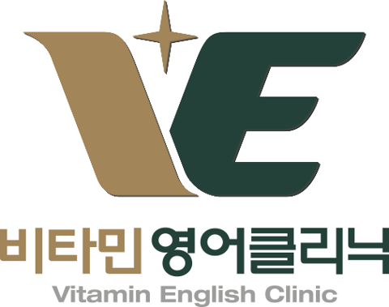

<!doctype html>
<html lang="ko"><head><meta charset="utf-8"><meta name="viewport" content="width=device-width,initial-scale=1,viewport-fit=cover"><script src="../common/base.js?v=261105a"></script>
<title>H로드맵</title>
<link rel="icon" type="image/png" sizes="32x32" href="">
<link rel="icon" type="image/png" sizes="192x192" href="">
<link rel="apple-touch-icon" sizes="180x180" href="">
<meta name="apple-mobile-web-app-title" content="H로드맵">
<style>
:root{--bg:#f6f7f4;--card:#fff;--ink:#1f2a24;--sub:#6b766f;--line:#dfe4de;--pri:#2f7d5b;--priInk:#fff;--ok:#2f7d5b;--okBg:#e4f3ea;--ng:#c0392b;--ngBg:#fbe9e6}
@media (prefers-color-scheme:dark){:root{--bg:#141815;--card:#1d231f;--ink:#e8eee9;--sub:#97a39b;--line:#2f3832;--pri:#4fb98a;--priInk:#0e1612;--ok:#58c28f;--okBg:#183024;--ng:#ec7a6c;--ngBg:#3a1f1b}}
*{box-sizing:border-box;-webkit-tap-highlight-color:transparent}
html,body{margin:0;background:var(--bg);color:var(--ink);font-family:-apple-system,"Apple SD Gothic Neo","Noto Sans KR","Malgun Gothic",system-ui,sans-serif;line-height:1.55}
#app{max-width:640px;margin:0 auto;padding:16px 16px 56px}
h1{font-size:22px;margin:8px 0 14px}
button{font:inherit;color:inherit;cursor:pointer}
.btn{border:1px solid var(--line);background:var(--card);border-radius:12px;padding:13px 14px;font-weight:600;width:100%;margin-top:8px}
.btn.pri{background:var(--pri);color:var(--priInk);border-color:var(--pri)}
.btn:disabled{opacity:.45}
.card{background:var(--card);border:1px solid var(--line);border-radius:16px;padding:16px;margin:10px 0}
.big{font-size:34px;font-weight:800}
.sub{color:var(--sub);font-size:14px}
.seg{display:flex;gap:6px;margin-top:8px}.seg button{flex:1;border:1px solid var(--line);background:var(--card);border-radius:10px;padding:9px 0;font-weight:600}.seg button.on{border-color:var(--pri);background:var(--okBg);color:var(--pri)}
.word{font-size:30px;font-weight:800;margin:6px 0 14px;word-break:break-word}
.ch{display:block;width:100%;text-align:left;border:1px solid var(--line);background:var(--card);border-radius:12px;padding:13px;margin:7px 0;font-size:17px}
.ch.ok{border-color:var(--ok);background:var(--okBg)}.ch.ng{border-color:var(--ng);background:var(--ngBg)}
.top{display:flex;align-items:center;gap:8px;margin-bottom:8px}.top .t{flex:1;font-size:14px;color:var(--sub)}
.sbtn{border:1px solid var(--line);background:var(--card);border-radius:10px;padding:6px 12px;font-size:14px}
.row{display:flex;justify-content:space-between;gap:10px;padding:10px 0;border-top:1px solid var(--line);font-size:15px}
.row:first-child{border-top:0}.row b{font-size:16px}.row small{color:var(--sub);display:block}.row .src{display:inline-block;font-size:11px;font-weight:600;color:var(--pri);border:1px solid var(--line);border-radius:6px;padding:0 5px;margin-left:5px;vertical-align:1px}
.badge{font-size:12px;border:1px solid var(--line);border-radius:999px;padding:1px 9px;color:var(--sub);white-space:nowrap;align-self:flex-start}
input.tx{width:100%;font-size:18px;padding:12px;border:1px solid var(--line);border-radius:12px;background:var(--card);color:var(--ink)}
.msg{color:var(--sub);font-size:14px;margin-top:8px;min-height:20px}

.hero{background:linear-gradient(160deg,#173f33 0%,#1f5a47 100%);color:#fff;border-radius:18px;padding:20px 18px 16px;margin:4px 0 12px}
.hero .lb{font-size:12px;letter-spacing:.14em;opacity:.7;text-transform:uppercase}
.hero .hn{font-size:26px;font-weight:800;margin:4px 0 2px;letter-spacing:-.01em}
.hero .hd{font-size:14px;opacity:.8}
.kp{display:grid;grid-template-columns:repeat(3,1fr);gap:8px;margin-top:16px}
.kp div{background:rgba(255,255,255,.12);border-radius:12px;padding:10px 6px;text-align:center}
.kp b{display:block;font-size:24px;font-weight:800;font-variant-numeric:tabular-nums}
.kp span{font-size:12px;opacity:.8}
h2.sec{font-size:13px;letter-spacing:.08em;color:var(--sub);margin:20px 4px 8px;font-weight:700}
a.tk,button.tk,div.tk{display:flex;align-items:center;gap:12px;width:100%;text-align:left;text-decoration:none;color:var(--ink);background:var(--card);border:1px solid var(--line);border-radius:14px;padding:14px;margin:7px 0}
.tk .bd{width:5px;align-self:stretch;border-radius:3px;background:var(--pri)}
.tk .tt{flex:1;min-width:0}.tk .tt b{display:block;font-size:16px}.tk .tt small{color:var(--sub);font-size:13px}
.tk.off{opacity:.5}
.chip{font-size:12px;font-weight:700;border-radius:999px;padding:3px 10px;white-space:nowrap;background:var(--okBg);color:var(--ok)}
.chip.w{background:#fff3df;color:#a8650b}.chip.n{background:var(--bg);color:var(--sub);border:1px solid var(--line)}
@media (prefers-color-scheme:dark){.chip.w{background:#3a2c14;color:#f0b765}}
.pl{display:grid;grid-template-columns:1fr 1fr;gap:8px}
.pl .c{background:var(--card);border:1px solid var(--line);border-radius:14px;padding:14px}
.pl .c .nm{font-size:30px;font-weight:800;font-variant-numeric:tabular-nums;line-height:1.1}
.pl .c .nm small{font-size:13px;font-weight:600;color:var(--sub);margin-left:3px}
.pl .c .lb{font-size:13px;font-weight:700;margin-top:4px}
.pl .c .ds{font-size:12px;color:var(--sub);margin-top:2px}
.pbar{height:6px;background:var(--line);border-radius:3px;margin-top:10px;overflow:hidden}.pbar i{display:block;height:100%;background:var(--pri)}
.pl .c .pg{font-size:12px;color:var(--sub);margin-top:4px;font-variant-numeric:tabular-nums}
.frm{font-size:13px;color:var(--sub);margin:10px 4px 0;line-height:1.6}
.cal{background:var(--card);border:1px solid var(--line);border-radius:16px;padding:12px}
.ch2{display:flex;align-items:center;justify-content:space-between;margin-bottom:8px}.ch2 b{font-size:17px}
.ch2 button{border:1px solid var(--line);background:var(--card);border-radius:10px;width:38px;height:34px;font-size:16px}.ch2 button:disabled{opacity:.3}
.cg{display:grid;grid-template-columns:repeat(7,1fr);gap:4px}
.cg .wd{text-align:center;font-size:12px;color:var(--sub);padding:2px 0}
.cg .dy{min-height:54px;border-radius:9px;padding:4px 3px;text-align:center;font-size:13px;border:1px solid transparent;font-variant-numeric:tabular-nums}
.cg .dy .n{display:block;font-weight:700}
.cg .dy small{display:block;font-size:10.5px;margin-top:2px;line-height:1.25;color:var(--sub)}
.cg .dy.hw{background:var(--bg);border-color:var(--line)}
.cg .dy.dn{background:var(--okBg);border-color:var(--ok)}.cg .dy.dn small{color:var(--ok);font-weight:700}
.cg .dy.lt{background:#fff3df;border-color:#e3b36b}.cg .dy.lt small{color:#a8650b;font-weight:700}
@media (prefers-color-scheme:dark){.cg .dy.lt{background:#3a2c14;border-color:#8a6a33}.cg .dy.lt small{color:#f0b765}}
.cg .dy.cl{background:repeating-linear-gradient(135deg,transparent 0 5px,var(--line) 5px 6px)}
.cg .dy.td{outline:2px solid var(--pri);outline-offset:-1px}
.cg .dy{cursor:pointer}.cg .dy.sl{background:var(--priBg,#e8f0fb);border-color:var(--pri)}.cg .dy small b{color:var(--pri)}
.cg .dy small b.rd{color:#1f8a56}
@media (prefers-color-scheme:dark){.cg .dy small b.rd{color:#5fd19a}}
.dpl{margin:10px 0 0}.dpl .dh{font-size:14px;font-weight:700;margin:2px 4px 8px}.dpl .sm{font-size:12px;color:var(--sub);margin:12px 4px 6px}
.cg .dy.ot{opacity:.35}
.cg .dy small b.ex,.lg b.ex{display:inline-block;background:#d33a2f;color:#fff;border-radius:5px;padding:0 5px;font-size:10.5px;margin-top:2px}
.cg .dy small .dl{display:block}
.hero .lb{display:flex;justify-content:space-between;align-items:center}.hero .who{letter-spacing:0;text-transform:none;font-size:12px;opacity:.9}
.wb{display:flex;gap:3px;margin:14px 0 6px}.wb i{flex:1;height:9px;border-radius:5px;background:rgba(255,255,255,.2)}.wb i.dn{background:#5fd19a}.wb i.lt{background:#f0b765}.wb i.cur{background:#fff;box-shadow:0 0 0 2px rgba(255,255,255,.45)}
.hero.pm{background:linear-gradient(180deg,#fff 0%,#faf6ee 100%);color:#244238;padding:18px 20px 16px;border-radius:22px;box-shadow:0 6px 22px rgba(36,66,56,.10);border:1px solid #e9e0cc}
.hero.pm .lb{font-size:12px;display:flex;justify-content:space-between;align-items:center;opacity:1;letter-spacing:0}
.hero.pm .lg{background:none;padding:0;display:inline-flex}.hero.pm .lg img{height:58px;display:block}
.hero.pm .dt{font-weight:600;color:#a58a5a;font-size:12px;opacity:1;letter-spacing:0}
.hero.pm .hn{font-size:26px;font-weight:800;margin:8px 0 2px;color:#244238}.hero.pm .hn.mt{font-size:20px;line-height:1.4;font-weight:800;margin:12px 0 6px;letter-spacing:-.02em}
.hero.pm .hd{font-size:13px;color:#8a7a5c;opacity:1}
.hero.pm .wb{margin:16px 0 14px}.hero.pm .wb i{height:7px;background:#e8e2d3}.hero.pm .wb i.dn{background:#244238}.hero.pm .wb i.lt{background:#c9a66b}.hero.pm .wb i.cur{background:#a58a5a;box-shadow:0 0 0 2px rgba(165,138,90,.35)}
.st3{display:flex;border-top:1px solid #e9e0cc;padding-top:12px}.st3>div{flex:1;text-align:center}.st3>div+div{border-left:1px solid #e9e0cc}
.st3 b{display:block;font-size:22px;font-weight:800;line-height:1.1;color:#244238}.st3 em{font-style:normal;font-size:13px;font-weight:600;color:#a58a5a;margin-left:1px}.st3 small{display:block;font-size:11px;color:#8a7a5c;margin-top:3px}
.wbt{display:flex;justify-content:space-between;font-size:13px;opacity:.92}
.lg{font-size:12px;color:var(--sub);margin:10px 2px 0;line-height:1.7}.lg b.rd{color:#1f8a56}
.cg.wk .dy{min-height:74px}
.mg{font-size:12px}.mh{font-weight:800;font-size:13px;margin:10px 0 4px;color:#244238}.mh:first-child{margin-top:0}
.mr{display:grid;grid-template-columns:30px repeat(7,1fr);gap:3px;align-items:center;padding:3px 2px;border-radius:10px;cursor:pointer}.mr.on{background:#f1ede0}
.mr .wl{font-size:11px;color:var(--sub);font-weight:700}
.mc{position:relative;text-align:center;padding:6px 0;border-radius:8px;background:#f3f3f1;color:#999;font-weight:600;font-size:12px}
.mc.hw{background:#fff;border:1px solid #d9d9d4;color:#333}.mc.dn{background:#cfeadb;color:#1f6b45}.mc.lt{background:#fbe3c2;color:#a8620f}.mc.cl{opacity:.45}.mc.td{outline:2px solid #244238}
.mc i{position:absolute;right:2px;top:2px;width:6px;height:6px;border-radius:50%}.mc i.ex{background:#d33}.mc i.rd{background:#1f8a56}
details.mo{margin-top:10px}details.mo>summary{cursor:pointer;font-size:14px;font-weight:700;padding:10px 4px;list-style:none}details.mo>summary::-webkit-details-marker{display:none}
</style></head><body><div id="app"></div>
<script>
var URL_=window.WN_URL||'https://script.google.com/macros/s/AKfycbzc2ei1hfWwFPviIFZndCLPchR7NRlrUtY9IqZ6mL2sruJxshFJMpGaKp3LeHHUEl6Apg/exec',PIN='6900',WD=['일','월','화','수','목','금','토'];
function ls(k){try{return localStorage.getItem(k)}catch(e){return null}}
function ss(k,v){try{localStorage.setItem(k,v)}catch(e){}}
function ds(k){try{localStorage.removeItem(k)}catch(e){}}
var $=document.getElementById('app');
function esc(t){return String(t==null?'':t).replace(/&/g,'&amp;').replace(/</g,'&lt;').replace(/>/g,'&gt;').replace(/"/g,'&quot;')}
function post(b){return fetch(URL_,{method:'POST',headers:{'Content-Type':'text/plain'},body:JSON.stringify(b)}).then(function(r){return r.json()})}
function name(){if(/[?&]t=1(&|$)/.test(location.search))return'신유정';return(ls('wn_name')||ls('recm_name')||ls('rec_name')||'').replace(/\s+/g,'')}
function dshow(d){if(!d)return'';var p=d.split('-');var w=WD[new Date(Date.UTC(+p[0],+p[1]-1,+p[2])).getUTCDay()];return(+p[1])+'/'+(+p[2])+'('+w+')'}
function shuffle(a){a=a.slice();for(var i=a.length-1;i>0;i--){var j=Math.floor(Math.random()*(i+1)),t=a[i];a[i]=a[j];a[j]=t}return a}
function rq(){try{return JSON.parse(ls('wn_rq')||'[]')}catch(e){return[]}}
function flushR(){
  var Q=rq(),n=name();if(!Q.length||!n)return Promise.resolve();
  var p=Promise.resolve(),rest=Q.slice();
  Q.forEach(function(x){p=p.then(function(){return post({act:'review',name:n,pin:PIN,w:x.w,okk:x.okk}).then(function(r){if(r&&(r.ok||r.err==='none')){rest=rest.filter(function(y){return y!==x});ss('wn_rq',JSON.stringify(rest.map(function(y){return{w:y.w,okk:y.okk}})))}})},function(){})});
  return p.catch(function(){});
}
function login(){
  $.innerHTML='<h1>로드맵</h1><div class="card"><input class="tx" id="nm" type="text" autocomplete="off" placeholder="이름"><button class="btn pri" id="go">시작</button><div class="msg" id="m"></div></div>';
  document.getElementById('go').onclick=function(){
    var v=(document.getElementById('nm').value||'').replace(/\s+/g,'');if(!v)return;
    var b=this;b.disabled=true;document.getElementById('m').textContent='확인 중...';
    post({act:'list',name:v,pin:PIN}).then(function(r){
      if(r&&r.ok){ss('wn_name',v);home(r)}
      else if(isAdm(v)){ss('wn_name',v);home(admData())}
      else{b.disabled=false;document.getElementById('m').textContent='등록된 이름이 아니에요.'}
    },function(){if(isAdm(v)){ss('wn_name',v);home(admData());return}b.disabled=false;document.getElementById('m').textContent='연결이 안 됐어요. 인터넷을 확인해 주세요.'});
  };
}
var DATA=null,resetArm=false,resetT=null,CALM=null,SEL=null;
var PLAN={"김서진": {"dv": "Pro", "d": "H", "s": "2026-11-02", "m": "고1"}, "서승언": {"dv": "Core", "d": "B", "s": "2026-11-03", "m": "고1"}, "장은율": {"dv": "Pro", "d": "H", "s": "2026-11-02", "m": "고1"}, "김지효": {"dv": "Pro", "d": "H", "s": "2026-11-02", "m": "고1"}, "김린": {"dv": "Pro", "d": "H", "s": "2026-11-02", "m": "고1"}, "이동우": {"dv": "Pro", "d": "H", "s": "2026-11-02", "m": "고2"}, "김도현": {"dv": "Pro", "d": "H", "s": "2026-11-02", "m": "고1"}, "김소희": {"dv": "Core", "d": "B", "s": "2026-11-03", "m": "고1"}, "윤유란": {"dv": "Core", "d": "B", "s": "2026-11-03", "m": "고1"}, "정다원": {"dv": "Core", "d": "B", "s": "2026-11-03", "m": "고1"}, "김민서": {"dv": "Core", "d": "B", "s": "2026-11-03", "m": "고1"}, "이지민": {"dv": "Core", "d": "B", "s": "2026-11-03", "m": "고1"}, "조혜린": {"dv": "Core", "d": "B", "s": "2026-11-03", "m": "고1"}, "최의준": {"dv": "Core", "d": "B", "s": "2026-11-05", "m": "고1"}};
var ADMIN=['신유정'];
function isAdm(n){return ADMIN.indexOf(n)>=0}
function admData(){return{ok:true,items:[],cap:40,max:60,today:iso(new Date())}}
var CLOSED=['2026-12-25','2026-12-30','2026-12-31','2027-01-01'];
var HWD=[1,2,3,4,6,0];
var DQ={B:{n:80,q:1200,u:'daily/b/'},H:{n:112,q:1680,u:'daily/h/'}};
var VB='https://nolbada.github.io/via/';
var MM={'고1':'https://nolbada.github.io/via-high/h/minimock/h1/','고2':'https://nolbada.github.io/via-high/h/minimock/h2/'};
var GC='https://nolbada.github.io/via-mid/m/grammarcock/';
function iso(d){return d.getFullYear()+'-'+('0'+(d.getMonth()+1)).slice(-2)+'-'+('0'+d.getDate()).slice(-2)}
function lj(k,def){try{return JSON.parse(ls(k)||'')||def}catch(e){return def}}
function planInfo(n){
  var P=PLAN[n];if(!P)return null;
  var Q=DQ[P.d],S=lj('dv_'+P.d+'_'+n,{}).done||{};
  var dv=lj((P.dv==='Pro'?'dvp':'dvc')+'_done_'+n,[]);
  var st=new Date(P.s+'T00:00:00'),map={},c=0,cur=new Date(st),end=new Date('2027-04-30T00:00:00');
  for(;cur<=end&&c<Q.n;cur.setDate(cur.getDate()+1)){if(HWD.indexOf(cur.getDay())>=0){c++;map[iso(cur)]=c}}
  return{P:P,Q:Q,S:S,dv:dv,st:st,map:map};
}
var KV_URL='https://script.google.com/macros/s/AKfycbw1YQfKsgAXNk8NYoxOfz4bsCSy66fiim7HoFAUk162ksxrEbmspMs2UifNZ-93sdf05A/exec',CTL_ID='WNCTL';
var CTL_SEED={'김서진':{ex:[{d:1,at:'2026-11-04'}]},'장은율':{ex:[{d:1,at:'2026-11-04'}]},'김지효':{ex:[{d:1,at:'2026-11-04'}]},'김린':{ex:[{d:1,at:'2026-11-04'}]},'이동우':{ex:[{d:1,at:'2026-11-04'}]},'김도현':{ex:[{d:1,at:'2026-11-04'}]}};
function ctlParse(d){var m={};try{for(var k in d){var x=d[k],s=(x&&x.v&&typeof x.v.s==='string')?x.v.s:(x&&typeof x.s==='string'?x.s:null);if(s)m[k]=JSON.parse(s)}}catch(e){}return m}
function ctlOf(M,n){return (M&&M[n])||CTL_SEED[n]||{}}
function ctlRead(){return fetch(KV_URL,{method:'POST',headers:{'Content-Type':'text/plain'},body:JSON.stringify({act:'put',id:CTL_ID,data:{}})}).then(function(r){return r.json()}).then(function(r){return ctlParse(r&&r.data||{})})}
function ctlWrite(n,o){var d={};d[n]={v:{s:JSON.stringify(o)},t:Date.now()};return fetch(KV_URL,{method:'POST',headers:{'Content-Type':'text/plain'},body:JSON.stringify({act:'put',id:CTL_ID,data:d})}).then(function(r){return r.json()})}
var CTLM=null,CTLL=0;
function inHold(c,dk){return !!(c&&c.hold&&c.hs&&dk>=c.hs&&dk<=c.hold)}
var TT=['김소희','윤유란','정다원','김민서','이지민','조혜린'];
function exTaken(n,pre){
  var r={},low=String(n).toLowerCase(),a='dvc_exam_',b='dvp_exam_',k,m,v;
  try{for(var q=0;q<localStorage.length;q++){k=localStorage.key(q)||'';
    if(k.indexOf(a)!==0&&k.indexOf(b)!==0)continue;
    m=/^dv[cp]_exam_(\d+)_(.+)$/.exec(k);if(!m||m[2]!==low)continue;
    v=JSON.parse(localStorage.getItem(k)||'null');if(v&&v.done)r[+m[1]]=v.t||0}}catch(e){}
  var c=ctlOf(CTLM,n);(c.ex||[]).forEach(function(e){var t=new Date(e.at+'T12:00:00').getTime();if(!r[e.d]||r[e.d]<t)r[e.d]=t});
  return r;
}
var FIRSTEX={'mw':'2026-11-04','tt':'2026-11-05'};
function exNote(n,now,ti,nd){
  var w=now.getDay(),sp=(n==='최의준'&&ti<='2026-11-06'),bx='<div style="margin:-2px 2px 8px;padding:8px 12px;border-radius:10px;background:#fbefd9;color:#6b3f06;font-size:13px;line-height:1.5">';
  var c=ctlOf(CTLM,n),grp=TT.indexOf(n)>=0?'tt':'mw',ds=grp==='tt'?[2,4]:[1,3],tk=exTaken(n),has=Object.keys(tk).length>0,nx=nd;
  if(c.hold&&ti<=c.hold)return bx+'진도 안내를 잠시 멈췄어요. '+(c.hold<'9999'?dshow(c.hold)+'에 다시 시작해요.':'선생님이 다시 알려 줄 거예요.')+'</div>';
  if(has){nx=0;for(var z=1;z<=32;z++){if(!tk[z]){nx=z;break}}}
  if(sp){
    if(ti==='2026-11-06')return bx+(tk[1]?'Day 1 시험을 봤어요. 수고했어요.':'오늘 더블보카 Day 1 시험이 있어요 (말하기 시험 대신)')+'</div>';
    return bx+'다음 시험 '+dshow('2026-11-06')+' · Day 1 단어를 미리 공부하세요</div>';
  }
  if(!nx)return'';
  var mon=new Date(now);mon.setDate(mon.getDate()-((mon.getDay()+6)%7));var mt=mon.getTime(),wk=0,k2;
  for(k2 in tk){if(tk[k2]>=mt)wk++}
  var todayT=false;for(k2 in tk){if(tk[k2]>=now.getTime())todayT=true}
  var must=0;ds.forEach(function(dw){var dd=new Date(mon);dd.setDate(mon.getDate()+dw-1);if(iso(dd)>=FIRSTEX[grp]&&dd<now)must++});
  var miss=Math.max(0,must-wk),fri=new Date(mon);fri.setDate(mon.getDate()+4);
  if(w>=1&&w<=4&&miss>0&&ds.indexOf(w)<0)return bx+'이번 주 못 본 더블보카 Day '+nx+' 시험은 '+dshow(iso(fri))+'에 말하기 시험으로 봐요.</div>';
  if(w===5){
    return bx+'오늘은 오답노트 단어 구두테스트예요. 오늘 복습 단어를 다시 확인해요.'+(miss?'<br>이번 주 못 본 더블보카 시험 '+miss+'개는 말하기 시험으로 봐요 (Day '+nx+(miss>1?'부터':'')+').':'')+'</div>';
  }
  if(ds.indexOf(w)>=0&&!todayT&&ti>=FIRSTEX[grp])return bx+'오늘 더블보카 Day '+nx+' 시험이 있어요. 마지막으로 확인해요.</div>';
  for(var k=1;k<=7;k++){var d=new Date(now);d.setDate(d.getDate()+k);if(ds.indexOf(d.getDay())>=0&&iso(d)>=FIRSTEX[grp])return bx+'다음 시험 '+dshow(iso(d))+' · Day '+nx+' 단어를 미리 공부하세요</div>'}
  return'';
}
function home(r){
  var n=name();if(!n){login();return}
  if(!r){$.innerHTML='<h1>로드맵</h1><div class="sub">불러오는 중...</div>';
    flushR().then(function(){return post({act:'list',name:n,pin:PIN})}).then(function(x){
      if(x&&x.ok)home(x);else if(isAdm(n))home(admData());else{ds('wn_name');login()}
    },function(){$.innerHTML='<h1>로드맵</h1><div class="card">연결이 안 됐어요. 인터넷을 확인해 주세요.<button class="btn pri" id="rt">다시 불러오기</button></div>';document.getElementById('rt').onclick=function(){home()}});return
  }
  var hc=ctlOf(CTLM,n);if(hc.hide&&hc.hide.length){r=Object.assign({},r,{items:r.items.filter(function(i){return hc.hide.indexOf(i.src)<0})})}
  DATA=r;
  if(!CTLL){CTLL=1;ctlRead().then(function(m){CTLM=m;try{var nn=name(),rc=ctlOf(m,nn);(rc.rs||[]).forEach(function(z){['dvc_exam_','dvp_exam_'].forEach(function(pf){var k=pf+z.d+'_'+String(nn).toLowerCase(),rv=ls(k);if(rv){try{if((JSON.parse(rv).t||0)<z.at)localStorage.removeItem(k)}catch(e){localStorage.removeItem(k)}}})})}catch(e){}if(DATA)home(DATA)},function(){})}
  var LI=r.items.filter(isL);
  var cap=Number(ls('wn_cap'))||r.cap||40;if(cap>r.max)cap=r.max;
  var due=r.items.filter(function(i){return i.nx&&i.nx<=r.today});
  var today=Math.min(due.length,cap);
  var I=planInfo(n),now=new Date();now.setHours(0,0,0,0);var ti=iso(now);
  var h='';
  /* hero */
  var streak=0,wk=0,wkN=0;
  if(I){
    var dd=new Date(now),guard=0;
    var dnOf=function(d){var k=I.map[iso(d)];return k?!!I.S[k]:null};
    if(dnOf(dd)!==true)dd.setDate(dd.getDate()-1);
    while(guard++<400){var v=dnOf(dd);if(v===null){dd.setDate(dd.getDate()-1);continue}if(v!==true)break;if(dd<I.st)break;streak++;dd.setDate(dd.getDate()-1)}
    var mon=new Date(now);mon.setDate(mon.getDate()-((mon.getDay()+6)%7));
    for(var q=0;q<7;q++){var d2=new Date(mon);d2.setDate(mon.getDate()+q);var k2=I.map[iso(d2)];if(k2){wkN++;if(I.S[k2])wk++}}
  }
  if(I&&!isAdm(n)){
    var CS=new Date('2026-11-02T00:00:00'),NW=17,cw=Math.floor((now-CS)/604800000),bar='';
    for(var q2=0;q2<NW;q2++){
      var ws=new Date(CS);ws.setDate(CS.getDate()+q2*7);var tot=0,dn3=0,late=false;
      for(var q3=0;q3<7;q3++){var d3=new Date(ws);d3.setDate(ws.getDate()+q3);var k3=I.map[iso(d3)];if(k3){tot++;if(I.S[k3])dn3++;else if(iso(d3)<ti&&!inHold(ctlOf(CTLM,n),iso(d3)))late=true}}
      bar+='<i class="'+(q2===cw?'cur':(tot&&dn3===tot?'dn':(late?'lt':'')))+'"></i>';
    }
    var wkTxt=(cw<0?'시작 전':(cw>=NW?'종료':(cw+1)));
    h+='<div class="hero pm"><div class="lb"><span class="lg"></span><span class="dt">'+dshow(ti)+'</span></div><div class="hn mt">성공은 매일 부단하게 반복된<br>작은 노력의 합산이다.</div><div class="hd">11/2 ~ 2/28 · 17주 과정</div><div class="wb">'+bar+'</div><div class="st3"><div><b>'+wkTxt+'</b><small>'+(cw>=0&&cw<NW?'/ '+NW+'주차':'주차')+'</small></div><div><b>'+wk+'<em>/'+wkN+'</em></b><small>이번 주 숙제</small></div><div><b>'+streak+'<em>일</em></b><small>연속 완료</small></div></div></div>';
  }else{
    h+='<div class="hero pm"><div class="lb"><span class="lg"></span><span class="dt">'+dshow(ti)+'</span></div><div class="hn mt">성공은 매일 부단하게 반복된<br>작은 노력의 합산이다.</div><div class="hd">11/2 ~ 2/28 · 17주 과정</div></div>';
  }
  /* today */
  var IU=!!I&&!isAdm(n);
  if(IU)h+='<div class="cal" id="wk" style="margin-top:12px"></div><div id="dp"></div><details class="mo"><summary>전체 주차 한눈에 보기 ▾</summary><div class="cal" id="cal"></div></details>';
  h+='<h2 class="sec">'+(IU?'내 속도로 하는 활동':'오늘')+'</h2>';
  if(isAdm(n)){
    [['데일리보카 B',VB+'daily/b/?t=1','#2a8a5c'],['데일리보카 H',VB+'daily/h/?t=1','#2a8a5c'],['더블보카 Core',VB+'dvcore/?t=1','#2d6a9f'],['더블보카 Pro',VB+'dvpro/?t=1','#2d6a9f'],['미니모의고사 고1',MM['고1'],'#8a5a9e'],['미니모의고사 고2',MM['고2'],'#8a5a9e'],['천일문S 문장줄이기',VB+'sj/','#2b5aa8'],['그래머콕 개념노트',GC,'#1f6f5f']].forEach(function(t){
      h+='<a class="tk" href="'+t[1]+'"><i class="bd" style="background:'+t[2]+'"></i><div class="tt"><b>'+t[0]+'</b></div><span class="chip n">자유</span></a>';
    });
  }else if(I){
    var P=I.P;
    var dvn=I.dv.length,nd=0;for(var z=0;z<32;z++){if(I.dv.indexOf(z)<0){nd=z+1;break}}
    h+='<a class="tk" href="'+VB+(P.dv==='Pro'?'dvpro/':'dvcore/')+'"><i class="bd" style="background:#2d6a9f"></i><div class="tt"><b>더블보카 '+P.dv+'</b><small>'+(nd?'다음 Day '+nd:'32 Day 완료')+'</small></div><span class="chip n">'+dvn+'/32</span></a>';
    h+='<a class="tk" href="'+(MM[P.m]||MM['고1'])+'"><i class="bd" style="background:#8a5a9e"></i><div class="tt"><b>미니모의고사</b><small>24회 · 내 속도로 진행</small></div><span class="chip n">자유</span></a>';
    h+='<a class="tk" href="'+VB+'sj/"><i class="bd" style="background:#2b5aa8"></i><div class="tt"><b>천일문S 문장줄이기</b><small>12챕터 · 내 속도로 진행</small></div><span class="chip n">자유</span></a>';
    h+='<a class="tk" href="'+GC+'"><i class="bd" style="background:#1f6f5f"></i><div class="tt"><b>그래머콕 개념노트</b><small>문법 개념 · 필요할 때 찾아보기</small></div><span class="chip n">자유</span></a>';
  }
  if(!IU){
  h+='<button class="tk" id="st"'+(today?'':' disabled style="opacity:.5"')+'><i class="bd" style="background:#c47a1a"></i><div class="tt"><b>오답 누적테스트</b><small>'+(due.length>cap?'밀린 '+(due.length-cap)+'개는 다음 날로 이어짐':'1 · 3 · 7 · 15일 주기')+'</small></div><span class="chip'+(today?' w':' n')+'">'+today+'개</span></button>';
  h+='<div class="seg">'+[40,50,60].filter(function(x){return x<=r.max}).map(function(x){return'<button data-c="'+x+'"'+(x===cap?' class="on"':'')+'>'+x+'개</button>'}).join('')+'</div>';
  }
  /* plan */
  if(I){
    var P2=I.P,dn2=Object.keys(I.S).length;
    h+='<h2 class="sec">플랜 규모</h2><div class="pl">';
    h+='<div class="c"><div class="nm">288<small>지문</small></div><div class="lb">독해 · 미니모의고사</div><div class="ds">24회 × 12지문, 모의고사 3개년 분량</div></div>';
    h+='<div class="c"><div class="nm">'+I.Q.q.toLocaleString()+'<small>문항</small></div><div class="lb">어휘 유형 · 데일리보카 '+P2.d+'</div><div class="ds">'+I.Q.n+'일 × 15문항</div><div class="pbar"><i style="width:'+(dn2/I.Q.n*100)+'%"></i></div><div class="pg">내 진행 '+dn2+' / '+I.Q.n+'일</div></div>';
    var DVN={Core:[2504,2989,5],Pro:[2824,3836,6]}[P2.dv];
    h+='<div class="c"><div class="nm">'+DVN[0].toLocaleString()+'<small>단어</small></div><div class="lb">유의어·반의어 · 더블보카 '+P2.dv+'</div><div class="ds">표제어 640개 + 유의어·반의어 + 사지선다 보기까지 (중복 제외)</div><div class="pbar"><i style="width:'+(I.dv.length/32*100)+'%"></i></div><div class="pg">내 진행 '+I.dv.length+' / 32 Day</div></div>';
    h+='<div class="c"><div class="nm">12<small>챕터</small></div><div class="lb">구문 · 천일문S 문장줄이기</div><div class="ds">총 190문장, 2개월 과정</div></div>';
    h+='</div><div class="frm">더블보카는 단어를 낱개로 외우지 않고 뜻이 비슷한 단어와 반대인 단어를 묶어 관계로 외우는 방식. 표제어 하나에 연결 단어 약 '+DVN[2]+'개가 함께 붙어, 유의어·반의어 연결만 '+DVN[1].toLocaleString()+'개. 목표 기준은 모의고사 3개년 분량의 독해, 주 6일 어휘, 누적 복습 1 · 3 · 7 · 15일이고 이를 4개월에 나눈 일정.</div>';
  }
  h+='<h2 class="sec">오답 단어 리스트</h2>';
  h+='<div class="card" style="margin-top:0"><div class="sub">쌓인 오답 단어</div><div class="big">'+LI.length+'개</div><button class="btn" id="ls"'+(LI.length?'':' disabled')+'>오답 단어 리스트 보기</button></div>';
  h+='<button class="btn" id="rs">'+(resetArm?'한 번 더 누르면 나갑니다':'나가기 (다음 학생)')+'</button>';
  $.innerHTML=h;
  $.querySelectorAll('.seg button').forEach(function(b){b.onclick=function(){ss('wn_cap',b.dataset.c);home(DATA)}});
  var stb=document.getElementById('st');if(stb)stb.onclick=function(){review(due.sort(byPri).slice(0,today))};
  document.getElementById('ls').onclick=function(){list()};
  document.getElementById('rs').onclick=function(){
    if(!resetArm){resetArm=true;clearTimeout(resetT);resetT=setTimeout(function(){resetArm=false;home(DATA)},4000);home(DATA);return}
    resetArm=false;['wn_name','wn_cap','wn_rq','recm_name','rec_name'].forEach(ds);login();
  };
  if(IU){if(!CALM)CALM=new Date(now.getFullYear(),now.getMonth(),1);if(!SEL)SEL=ti;drawCal(I,ti)}
}
var FRI1='2026-11-06';
function exStat(n,ti){
  var tk=exTaken(n),P=PLAN[n],nx=0,z;
  for(z=1;z<=32;z++){if(!tk[z]){nx=z;break}}
  var now=new Date(ti+'T00:00:00').getTime(),todayT=false,k;
  for(k in tk){if(tk[k]>=now)todayT=true}
  return{tk:tk,nx:nx,todayT:todayT,has:Object.keys(tk).length>0,d1:!!tk[1]};
}
/* 날짜 -> 더블보카 시험 Day (월수·화목 조 + Day 1 미응시자는 금요일) */
function examPlan(n,I,ti){
  var map={},P=PLAN[n];if(!P)return map;
  var c=ctlOf(CTLM,n),st=exStat(n,ti),grp=TT.indexOf(n)>=0?'tt':'mw',ds=grp==='tt'?[2,4]:[1,3];
  if(c.hold&&ti<=c.hold)return map;
  var day=st.todayT?st.nx:st.nx,cur=new Date(ti+'T00:00:00'),i,key,w;
  if(!day)return map;
  var fri1=!st.d1&&ti<=FRI1;
  for(i=0;i<130&&day<=32;i++,cur.setDate(cur.getDate()+1)){
    key=iso(cur);w=cur.getDay();
    if(key===ti&&st.todayT)continue;
    if(CLOSED.indexOf(key)>=0)continue;
    if(fri1&&key<FRI1)continue;
    if(fri1&&key===FRI1){map[key]=day;day++;continue}
    if(ds.indexOf(w)>=0&&key>=FIRSTEX[grp]){map[key]=day;day++}
  }
  return map;
}
function drawDP(I,ti,EP){
  var el=document.getElementById('dp');if(!el)return;
  var K=SEL||ti,r=DATA,n=name(),hc=ctlOf(CTLM,n),P=I.P,h='<div class="dpl"><div class="dh">'+dshow(K)+(K===ti?' · 오늘':'')+'</div>';
  var isT=K===ti,isPast=K<ti,w=new Date(K+'T00:00:00').getDay(),dn=I.map[K];
  if(hc.hold&&ti<=hc.hold)h+='<div style="margin:0 2px 8px;padding:8px 12px;border-radius:10px;background:#fbefd9;color:#6b3f06;font-size:13px;line-height:1.5">진도 안내를 잠시 멈췄어요. '+(hc.hold<'9999'?dshow(hc.hold)+'에 다시 시작해요.':'선생님이 다시 알려 줄 거예요.')+'</div>';
  if(dn&&K>=P.s){
    var sub=dn+'일차 · 15문항',chip;
    if(I.S[dn])chip='<span class="chip">완료 '+I.S[dn].s+'</span>';
    else if(isPast&&!inHold(hc,K))chip='<span class="chip w">밀림</span>';
    else chip='<span class="chip n">'+(isT?'진행 전':'예정')+'</span>';
    h+=(K<=ti?'<a class="tk" href="'+VB+I.Q.u+'">':'<div class="tk off">')+'<i class="bd"></i><div class="tt"><b>데일리보카 '+P.d+'</b><small>'+sub+'</small></div>'+chip+(K<=ti?'</a>':'</div>');
  }
  var due=r.items.filter(function(i){return i.nx&&i.nx<=r.today}),cap=Number(ls('wn_cap'))||r.cap||40;if(cap>r.max)cap=r.max;
  var today=Math.min(due.length,cap);
  if(isT){
    h+='<button class="tk" id="st"'+(today?'':' disabled style="opacity:.5"')+'><i class="bd" style="background:#c47a1a"></i><div class="tt"><b>오답 누적테스트</b><small>'+(due.length>cap?'밀린 '+(due.length-cap)+'개는 다음 날로 이어짐':'1 · 3 · 7 · 15일 주기')+'</small></div><span class="chip'+(today?' w':' n')+'">'+today+'개</span></button>';
    h+='<div class="seg">'+[40,50,60].filter(function(x){return x<=r.max}).map(function(x){return'<button data-c="'+x+'"'+(x===cap?' class="on"':'')+'>'+x+'개</button>'}).join('')+'</div>';
  }else{
    h+='<div class="tk off"><i class="bd" style="background:#c47a1a"></i><div class="tt"><b>오답 누적테스트</b><small>매일 개인 숙제 · 1 · 3 · 7 · 15일 주기</small></div><span class="chip n">'+(isPast?'지남':'예정')+'</span></div>';
  }
  var ex='';
  if(!isPast){
    if(w===5&&CLOSED.indexOf(K)<0)ex+='<div class="tk off" style="opacity:1"><i class="bd" style="background:#8a5a9e"></i><div class="tt"><b>누적보카 말하기</b><small>학원 시험</small></div></div>';
    if(EP[K]){
      var cc=exStat(n,ti);
      ex+='<div class="tk off" style="opacity:1"><i class="bd" style="background:#2d6a9f"></i><div class="tt"><b>더블보카 '+P.dv+' Day '+EP[K]+' 시험</b><small>학원 시험'+(w===5&&EP[K]===1?' · Day 1 시험 기록이 없는 학생':'')+'</small></div>'+(isT&&cc.todayT?'<span class="chip">완료</span>':'')+'</div>';
    }
  }
  if(ex)h+='<div class="sm">학원 시험</div>'+ex;
  el.innerHTML=h+'</div>';
  el.querySelectorAll('.seg button').forEach(function(b){b.onclick=function(){ss('wn_cap',b.dataset.c);drawDP(I,ti,EP)}});
  var stb=document.getElementById('st');if(stb)stb.onclick=function(){review(due.sort(byPri).slice(0,today))};
}
function cellH(dt,I,ti,EP){
  var key=iso(dt),dayN=I.map[key],cls='dy',sm='',closed=CLOSED.indexOf(key)>=0;
  if(dayN){cls+=' hw';if(I.S[dayN]){cls+=' dn';sm='<span class="dl">데일리 '+dayN+' ✓</span>'}else if(key<ti&&!inHold(ctlOf(CTLM,name()),key)){cls+=' lt';sm='<span class="dl">데일리 '+dayN+' 밀림</span>'}else sm='<span class="dl">데일리 '+dayN+'</span>'}
  else if(dt.getDay()===5&&key>=I.P.s&&!closed)sm='<b class="rd">말하기</b>';
  if(EP[key])sm+=(sm?'<br>':'')+'<b class="ex">시험</b>';
  if(closed){cls+=' cl';sm=(sm?sm+'<br>':'')+'휴원'}
  if(key===ti)cls+=' td';
  if(key===SEL)cls+=' sl';
  return'<div class="'+cls+'" data-k="'+key+'"><span class="n">'+dt.getDate()+'</span><small>'+sm+'</small></div>';
}
function drawWeek(I,ti,EP){
  var el=document.getElementById('wk');if(!el)return;
  var CS=new Date('2026-11-02T00:00:00'),CE=new Date('2027-02-28T00:00:00');
  var sd=new Date((SEL||ti)+'T00:00:00'),mon=new Date(sd);mon.setDate(sd.getDate()-((sd.getDay()+6)%7));
  var sun=new Date(mon);sun.setDate(mon.getDate()+6),wn=Math.round((mon-CS)/604800000)+1;
  var h='<div class="ch2"><button id="pw"'+(mon<=CS?' disabled':'')+'>&lsaquo;</button><b>'+(wn>=1&&wn<=17?wn+'주차 · ':'')+dshow(iso(mon))+' ~ '+dshow(iso(sun))+'</b><button id="nw"'+(sun>=CE?' disabled':'')+'>&rsaquo;</button></div><div class="cg wk">';
  ['월','화','수','목','금','토','일'].forEach(function(w){h+='<div class="wd">'+w+'</div>'});
  for(var k=0;k<7;k++){var dt=new Date(mon);dt.setDate(mon.getDate()+k);h+=cellH(dt,I,ti,EP)}
  h+='</div><div class="lg"><div><b>데일리</b> = 데일리보카</div><div><b class="ex">시험</b> = 학원 더블보카 테스트</div><div><b class="rd">말하기</b> = 금요일 누적보카 테스트</div></div>';
  el.innerHTML=h;
  el.querySelectorAll('.dy[data-k]').forEach(function(c){c.onclick=function(){SEL=c.dataset.k;CALM=new Date(+SEL.slice(0,4),+SEL.slice(5,7)-1,1);drawCal(I,ti)}});
  var mv=function(dd){var t=new Date((SEL||ti)+'T00:00:00');t.setDate(t.getDate()+dd);SEL=iso(t);CALM=new Date(t.getFullYear(),t.getMonth(),1);drawCal(I,ti)};
  var pw=document.getElementById('pw'),nw=document.getElementById('nw');
  if(pw)pw.onclick=function(){mv(-7)};if(nw)nw.onclick=function(){mv(7)};
}
function mcell(dt,I,ti,EP){
  var key=iso(dt),dayN=I.map[key],cls='mc',closed=CLOSED.indexOf(key)>=0,t=dt.getDate();
  if(t===1)t=(dt.getMonth()+1)+'/1';
  if(dayN){cls+=I.S[dayN]?' dn':(key<ti&&!inHold(ctlOf(CTLM,name()),key)?' lt':' hw')}
  if(closed)cls+=' cl';
  var dot=EP[key]?'<i class="ex"></i>':(!dayN&&dt.getDay()===5&&key>=I.P.s&&!closed?'<i class="rd"></i>':'');
  if(key===ti)cls+=' td';
  return'<div class="'+cls+'">'+t+dot+'</div>';
}
function drawCal(I,ti){
  var el=document.getElementById('cal');if(!el)return;
  var EP=examPlan(name(),I,ti),CS=new Date('2026-11-02T00:00:00'),sel=SEL||ti,h='',lastM=-1;
  var sd=new Date(sel+'T00:00:00'),selMon=new Date(sd);selMon.setDate(sd.getDate()-((sd.getDay()+6)%7));
  for(var w=0;w<17;w++){
    var mon=new Date(CS);mon.setDate(CS.getDate()+w*7);
    if(mon.getMonth()!==lastM){lastM=mon.getMonth();h+='<div class="mh">'+(lastM+1)+'월</div>'}
    h+='<div class="mr'+(iso(mon)===iso(selMon)?' on':'')+'" data-k="'+iso(mon)+'"><span class="wl">'+(w+1)+'주</span>';
    for(var k=0;k<7;k++){var dt=new Date(mon);dt.setDate(mon.getDate()+k);h+=mcell(dt,I,ti,EP)}
    h+='</div>';
  }
  el.innerHTML='<div class="mg">'+h+'</div>';
  el.querySelectorAll('.mr').forEach(function(r){r.onclick=function(){SEL=r.dataset.k;CALM=new Date(SEL.slice(0,4),+SEL.slice(5,7)-1,1);drawCal(I,ti);var t=document.getElementById('wk');if(t)t.scrollIntoView({behavior:'smooth',block:'start'})}});
  drawWeek(I,ti,EP);
  drawDP(I,ti,EP);
}
function isL(i){return i.src!=='데일리보카'}
function srcTag(i){return i.src?'<span class="src">'+esc(String(i.src).replace(/,/g,' · '))+'</span>':''}
function byPri(a,b){return(b.c-a.c)||(a.nx<b.nx?-1:a.nx>b.nx?1:0)}
function list(){
  var items=DATA.items.filter(isL).sort(function(a,b){return a.w.toLowerCase()<b.w.toLowerCase()?-1:1});
  var h='<div class="top"><button class="sbtn" id="hm">홈</button><div class="t">오답 단어 리스트 '+items.length+'개</div></div><div class="card">';
  items.forEach(function(i){h+='<div class="row"><div><b>'+esc(i.w)+'</b><small>'+esc(i.m)+srcTag(i)+'</small></div><span class="badge">'+i.st+'/4 · '+dshow(i.nx)+'</span></div>'});
  h+='</div>';$.innerHTML=h;document.getElementById('hm').onclick=function(){home(DATA)};
}
var R=null;
function review(items){
  R={items:items,i:0,res:[]};step();
}
/* 오답 누적테스트 보기: 정답과 같은 품사의 뜻만 쓴다. 품사는 영어단어 조회표 -> 없으면 뜻 끝말로 추정. 정답 단어의 다른 뜻과 겹치는 보기는 뺀다 */
var WPS="generate=V;produce=VN;create=V;regard=VN;inhabit=V;recreate=V;cause=VN;arouse=V;provoke=V;suppress=V;alert=VNA;qualify=V;entitle=V;certify=V;license=V;disqualify=V;look up=V;vigilant=A;watchful=A;attentive=A;inattentive=A;negligent=A;sole=A;agile=A;nimble=A;sluggish=A;ultimate=A;warn=V;alarm=VN;portion=VN;set up=V;emerge=V;tremble=VN;shake=VN;shiver=VN;quiver=VN;browse=V;barrier=N;misfortune=N;dwell in=V;reside in=V;populate=V;install=V;erect=VA;dismantle=V;demolish=V;arrange=V;prepare=V;organize=V;cite=V;establish=V;launch=VN;part=VN;share=N;section=N;bloom=VN;serving=N;helping=N;allocate=V;distribute=V;combine=V;unite=V;sum=N;amount=N;total=NA;aggregate=N;final=A;eventual=A;initial=A;dull=A;supreme=A;utmost=NA;only=AD;one (and only)=A;multiple=A;single=A;lone=A;appear=V;arise=V;surface=VN;disappear=V;vanish=V;adversity=N;hardship=N;fortune=N;luck=N;gaze at=V;stare at=V;consider=V;view=VN;deem=V;respect=VN;esteem=VN;admire=V;disrespect=VN;despise=V;consideration=N;concern=VN;indifference=N;disregard=VN;admiration=N;boring=A;tedious=A;monotonous=A;interesting=A;exciting=A;dim=VA;gloomy=A;search for=V;consult=V;visit=V;call on=V;contact=VN;obstacle=N;hurdle=N;obstruction=N;look around=V;scan=V;skim=V;scrutinize=V;mention=V;refer to=V;instance=VN;quote=V;blossom=VN;flower=VN;wither=V;fade=V;prime=N;peak=VN;decline=VN;refresh=V;revitalize=V;revive=V;exhaust=VN;drain=V;wear out=V;reproduce=V;reconstruct=V;restore=V;insert=V;put in=V;embed=V;extract=VN;come along=V;paralyze=V;omit=V;leave out=V;exclude=V;include=V;attain=V;modify=V;alter=V;adjust=V;revise=V;maintain=V;enforce=V;pale=VA;bleach=V;break into=V;confess=V;recede=V;accompany=V;prohibit=V;quest=N;pursuit=N;search=VN;prey=N;renovation=N;dictate=VN;achieve=V;accomplish=V;fulfill=V;fail=V;reach=V;fall short of=V;cope with=V;tremendous=A;enormous=A;immense=A;vast=A;minute=NA;external=A;extraordinary=A;terrific=A;remarkable=A;terrible=A;awful=A;earnest=A;sincere=A;serious=A;insincere=A;admit to=V;acknowledge=V;own up to=V;deny=V;disclose=V;reveal=V;exterior=A;outer=A;internal=A;interior=A;inner=A;foreign=A;overseas=A;international=A;domestic=A;forbid=V;ban=VN;outlaw=V;permit=V;allow=V;implement=VN;execute=V;compel=V;impose=V;command=VN;obey=V;comply with=V;determine=V;obedience=N;compliance=N;deal with=V;manage=V;handle=VN;remodeling=N;innovation=N;renewal=N;restage=V;intrude=V;trespass=V;interrupt=V;intervene=V;hold back=V;restrain=V;immobilize=V;disable=V;incapacitate=V;facilitate=V;activate=V;enable=V;game=N;predator=N;hunter=N;victim=N;target=VN;forecast=VN;predict=V;anticipate=V;fill in=V;bind=V;incorporate=V;prediction=N;anticipation=N;plot=VN;component=NA;passage=N;foretell=V;prophesy=V;foreshadow=V;substitute=VN;found=V;outline=VN;designate=V;integrate=V;storyline=N;narrative=NA;stance=N;stain=VN;conspiracy=N;scheme=VN;coincidence=N;conspire=V;look through=V;constituent=NA;element=N;whole=NA;integral=A;neutral=A;naive=A;corridor=N;hallway=N;paragraph=N;flow=VN;lapse=N;progression=N;fill out=V;complete=VA;stand in for=V;replace=V;exchange=VN;replacement=N;alternative=N;concurrence=N;coexistence=N;impartial=A;unbiased=A;dispassionate=A;partial=A;biased=A;decisive=A;impassive=A;expressive=A;muted=A;vivid=A;vibrant=A;bold=A;gullible=A;ingenuous=A;sophisticated=A;worldly=A;examine=V;inspect=V;review=V;resolute=A;determined=A;firm=NA;indecisive=A;irresolute=A;conclusive=A;crucial=A;inconclusive=A;insignificant=A;position=VN;standpoint=N;posture=N;pose=VN;contour=N;silhouette=N;overview=N;summary=N;detail=VN;summarize=V;spot=N;blot=N;purity=N;taint=VN;blemish=N;purify=V;cleanse=V;specify=V;indicate=V;appoint=V;nominate=V;order=VN;direct=VA;follow=V;control=VN;overlook=V;directive=N;leadership=N;tie=VN;fasten=V;unbind=V;untie=V;unfasten=V;bond=VN;disunite=V;energize=V;invigorate=V;neglect=VN;illuminate=V;go into=V;enroll=V;enclose=V;assert=V;claim=VN;insist=V;register=V;sign up=V;withdraw=V;drop out=V;expel=V;mediate=V;surround=V;encircle=V;fence=V;break up=V;attach=V;grip=VN;embark on=V;undertake=V;cease=V;quit=V;abuse=VN;investigate=V;gloss over=V;maximum=NA;extreme=NA;minimum=NA;worthwhile=A;fatal=A;phase=N;drawback=N;grasp=VN;clutch=VN;release=VN;captivate=V;fascinate=V;empower=V;faith=N;margin=N;profit=VN;gain=VN;loss=N;deficit=N;difference=N;gap=N;disguise=VN;camouflage=VN;mask=VN;unmask=V;conceal=V;hide=V;expose=V;potent=A;powerful=A;effective=A;impotent=A;ineffective=A;authorize=V;disempower=V;rewarding=A;valuable=A;worthless=A;pointless=A;useless=A;upright=AD;vertical=A;perpendicular=A;horizontal=A;prone=A;righteous=A;honest=A;dishonest=A;corrupt=A;vertically=D;horizontally=D;afterward(s)=D;readily=D;mistreatment=N;maltreatment=N;ill-treatment=N;care=N;misuse=VN;overuse=VN;mistreat=V;maltreat=V;ill-treat=V;care for=V;disadvantage=VN;downside=N;advantage=VN;benefit=VN;deadly=A;lethal=A;mortal=NA;harmless=A;critical=A;minor=NA;trivial=A;shatter=V;smash=V;fragment=VN;assemble=V;disband=V;dissolve=V;split up=V;stage=N;step=N;period=N;light (up)=V;brighten=V;shine=V;darken=V;clarify=V;elucidate=V;obscure=VA;confidence=N;trust=VN;belief=N;distrust=N;doubt=VN;disbelief=N;conviction=N;religion=N;skepticism=N;arbitrate=V;reconcile=V;instigate=V;immoral=A;wicked=A;unethical=A;moral=NA;ethical=A;radical=A;accuse=V;blame=V;criticize=V;condemn=V;defend=V;prolong=V;charge=VN;compress=V;interchange=VN;disapprove=V;object to=V;oppose=V;approve=V;discriminate=V;segregate=V;supplement=VN;give away=V;differentiate=V;distinguish=V;discern=V;title=V;label=V;divorce=VN;go about=V;estate=N;property=N;executive=NA;incentive=N;asset=N;debt=N;enterprise=N;foremost=A;leading=A;prominent=A;principal=A;distinguished=A;secondary=A;revolutionary=A;drastic=A;conservative=A;moderate=VA;fundamental=NA;superficial=A;corporation=N;tactic(s)=N;venture=VN;initiative=N;administrator=N;director=N;administration=N;managerial=A;administrative=A;strategy=N;maneuver=N;bonus=N;disincentive=N;penalty=N;motivation=N;stimulus=N;deterrent=N;swap=VN;trade=VN;junction=N;complement=VN;addition=N;deficiency=N;lack=VN;appendix=N;add=V;condense=V;compact=VA;expand=V;donate=V;set about=V;carry on=V;continue=V;proceed with=V;discontinue=V;halt=VN;piece=N;chip=N;mend=V;disintegrate=V;separate=VA;connect=V;separation=N;connection=N;union=N;extend=V;lengthen=V;shorten=V;curtail=V;classify=V;categorize=V;sort=VN;nourish=V;exclaim=V;cry out=V;shout=VN;yell=VN;break off=V;deprive=V;turn up=V;increase=VN;raise=V;turn down=V;decrease=VN;dwell=V;show up=V;eject=V;dismiss=V;admit=V;discharge=VN;emit=V;give off=V;absorb=V;proficient=A;skilled=A;adept=A;unskilled=A;inept=A;profound=A;remedy=VN;cure=VN;treatment=N;medicine=N;resilience=N;solution=N;problem=N;difficulty=N;correct=V;aggravate=V;worsen=V;rob=V;strip=V;provide=V;grant=VN;bestow=V;constrain=V;force=VN;restrict=V;limit=VN;free=VA;far-reaching=A;significant=A;slight=A;punctual=A;degenerate=VA;duplicate=VNA;replicate=V;breed=V;let on=V;divulge=V;prompt=VA;unpunctual=A;tardy=A;intense=A;fierce=A;mild=A;detach=V;suspend=V;pause=V;interfere=V;stand aside=V;reside=V;live=VA;linger=V;levy=V;deteriorate=V;progress=VN;advance=VN;improve=V;degraded=A;improved=A;starve=V;nurture=V;foster=VA;cultivate=V;distress=VN;anguish=N;agony=N;comfort=VN;vow=VN;impulse=N;poverty=N;affluence=N;prosperity=N;afflict=V;torment=VN;embody=V;insure=V;torture=VN;relief=N;province=N;relieve=V;soothe=V;come off=V;fall off=V;adhere to=V;stick to=V;rejoice=V;urge=VN;instinct=N;revenue=N;signal=VN;extinguish=V;put out=V;ignite=V;kindle=V;lay out=V;make out=V;eliminate=V;wipe out=V;manifest=VA;represent=V;disembody=V;abstract=VNA;reasonable=A;modest=A;excessive=A;tame=VA;temperate=A;restrained=A;immoderate=A;intemperate=A;refine=V;filter=V;contaminate=V;pollute=V;polish=V;degrade=V;evict=V;domesticate=V;domesticated=A;docile=A;untamed=A;wild=A;delight=VN;exult=V;mourn=V;grieve=V;lament=VN;prevail=V;predominate=V;pervade=V;triumph=VN;overcome=V;lose=V;income=N;earnings=N;expenditure=N;expense=N;ensure=V;guarantee=VN;assure=V;jeopardize=V;endanger=V;reunite=V;alienate=V;estrange=V;harmonize=V;coordinate=V;set out=V;disarrange=V;pledge=VN;swear=V;easily=D;effortlessly=D;chiefly=D;willingly=D;gladly=D;unwillingly=D;reluctantly=D;figure out=V;comprehend=V;misunderstand=V;state=VN;countryside=N;capital=NA;metropolis=N;adhere=V;stick=V;cling=V;burst out=V;abide by=V;swell=V;ground=VN;shrink=V;deflate=V;incline=VN;turn away=V;diminish=V;penetrate=V;pierce=V;perish=V;endow=V;uphold=V;ornament=VN;reject=V;avert=V;ignore=V;face=VN;confront=V;attend to=V;tend=V;be disposed to=V;slope=VN;tilt=V;lean=V;level=VNA;flatten=V;vocation=N;stern=A;strict=A;severe=A;gentle=A;thrifty=A;tangible=A;die=V;pass away=V;survive=V;flourish=V;thrive=V;burst into=V;frugal=A;wasteful=A;extravagant=A;predominant=A;decoration=N;adornment=N;embellishment=N;magnitude=N;decorate=V;adorn=V;embellish=V;land=VN;soil=N;site=N;premises=N;reason=N;basis=N;base=VN;scale=VN;significance=N;insignificance=N;triviality=N;dominant=A;prevailing=A;subordinate=VNA;profession=N;occupation=N;calling=N;mission=N;eligible=A;qualified=A;entitled=A;ineligible=A;unqualified=A;fire=VN;dismissal=N;emission=N;absorption=N;observe=V;violate=V;affirm=V;validate=V;overturn=V;concrete=A;material=NA;physical=A;intangible=A;obvious=A;evident=A;vague=A;ambiguous=A;depart=V;arrive=V;embark=V;present=VNA;abandon=V;desert=V;discard=V;retain=V;manipulate=V;give up=V;renounce=V;persist=V;prejudice=VN;operate=V;mishandle=V;embrace=V;cut off=V;remove=V;get rid of=V;preserve=V;illustrate=V;exemplify=V;demonstrate=V;depict=V;measure=VN;block=V;obstruct=V;reduce=V;lessen=V;disparage=V;visible=A;observable=A;invisible=A;ritual=NA;inevitable=A;remote=A;apparent=A;relevant=A;related=A;pertinent=A;irrelevant=A;unrelated=A;appropriate=A;suitable=A;proper=A;inappropriate=A;reluctant=A;unwilling=A;hesitant=A;willing=A;aggressive=A;hostile=A;belligerent=A;assertive=A;active=A;passive=A;ease=VN;discomfort=N;consolation=N;solace=N;compassion=N;console=V;sympathy=N;pity=N;unavoidable=A;inescapable=A;certain=A;avoidable=A;distant=A;isolated=A;secluded=A;near=A;close=A;off-site=A;on-site=A;national=A;household=A;public=A;rite=N;ceremony=N;routine=NA;ceremonial=A;customary=A;habitual=A;conventional=A;spontaneous=A;impromptu=A;bias=VN;stereotype=N;uncover=V;cover up=V;hug=V;cuddle=V;accept=V;adopt=V;encompass=V;gauge=V;assess=V;evaluate=V;appraise=V;criterion=N;standard=N;action=N;strengthen=V;reinforce=V;fortify=V;weaken=V;exceed=V;assign=V;disorder=N;mess=N;confusion=N;norm=N;dysfunction=N;disease=N;compliment=VN;vulnerable=A;susceptible=A;defenseless=A;invulnerable=A;explicit=A;fertile=A;allot=V;undermine=V;distort=V;deploy=V;soar=V;contract=VN;excel=V;humble=A;arrogant=A;adventurous=A;noble=A;erode=V;cover=V;address=VN;report=VN;pay for=V;go beyond=V;surpass=V;outstrip=V;deplete=V;outdo=V;fall behind=V;lag behind=V;daring=A;courageous=A;timid=A;cautious=A;risky=A;safe=A;inherent=A;use up=V;run out of=V;replenish=V;refill=V;twist=V;deform=V;straighten=V;falsify=V;misrepresent=V;exception=N;turmoil=N;plight=N;convention=N;code=N;hinder=V;impede=V;intervene in=V;intrinsic=A;innate=A;inborn=A;extrinsic=A;acquired=A;unambiguous=A;clear=A;definite=A;implicit=A;frank=A;candid=A;outspoken=A;skyrocket=V;surge=VN;plummet=V;fruitful=A;productive=A;unproductive=A;infertile=A;barren=A;promote=V;biological=A;accumulate=V;build up=V;amass=V;collect=V;boost=VN;enhance=V;encourage=V;discourage=V;support=VN;contradict=V;accommodate=V;exert=V;promotion=N;encouragement=N;illusion=N;prospect=N;soak up=V;take in=V;assimilate=V;engross=V;immerse=V;distract=V;take on=V;assume=V;promise=VN;commit=V;fantasy=N;reality=N;actuality=N;delusion=N;truth=N;fact=N;denounce=V;praise=VN;commend=V;sentence=VN;convict=V;house=V;lodge=V;obsess=V;adapt=V;immediate=A;indirect=A;static=A;dense=A;valid=A;instruct=V;guide=VN;conduct=VN;lead=V;supervise=V;precede=V;thick=A;crowded=A;sparse=A;heavy=A;concentrated=A;specific=A;indistinct=A;faint=VA;distinct=A;invalid=A;logical=A;sound=VA;refute=V;rebut=V;dispute=VN;confirm=V;conflict with=V;coincide with=V;predate=V;antedate=V;go after=V;landscape=N;likelihood=N;possibility=N;expectation=N;outlook=N;consume=V;inhale=V;exhale=V;misinterpret=V;wield=V;exercise=V;preoccupy=V;haunt=V;stationary=A;fixed=A;still=AD;mobile=A;prevent=V;guard=V;protect=V;attack=VN;assault=VN;advocate=VN;consent=VN;assent=VN;agree=V;dissent=VN;decode=V;mimic=V;agreement=N;capacity=N;volume=N;illiterate=NA;autonomy=N;ability=N;capability=N;faculty=N;incapacity=N;inability=N;aesthetic=NA;literate=NA;extinct=A;ignorant=A;informed=A;knowledgeable=A;issue=VN;matter=VN;announcement=N;declaration=N;edition=N;announce=V;declare=V;derive=V;incur=V;extant=A;existing=A;inactive=A;dormant=A;impair=V;damage=VN;harm=VN;leak=VN;disperse=V;convene=V;proceed=V;wave aside=V;heed=V;bring about=V;avoid=V;commendation=N;criticism=N;scorn=VN;disdain=VN;look down on=V;look up to=V;disconnect=V;dispatch=V;divulgence=N;disclosure=N;revelation=N;concealment=N;secrecy=N;unattractive=A;ugly=A;beauty=N;imitate=V;copy=VN;head=VN;go on=V;proponent=N;supporter=N;opponent=N;lawyer=N;attorney=N;endorse=V;stem=V;originate=V;obtain=V;sovereignty=N;self-government=N;dependence=N;decipher=V;encode=V;interpret=V;unclear=A;unknown=A;well-known=A;famous=A;conceive=V;imagine=V;envision=V;overwhelm=V;take up=V;reverse=VNA;come up with=V;devise=V;reserve=VN;accord=VN;trigger=VN;rational=A;sensible=A;irrational=A;unreasonable=A;fluid=A;coherent=A;consistent=A;incoherent=A;inconsistent=A;illogical=A;anonymous=A;cohesion=N;unity=N;solidarity=N;disunity=N;current=NA;absurd=A;ridiculous=A;foolish=A;silly=A;invert=V;turn around=V;revoke=V;back=NA;rear=VNA;opposite=NA;inverse=NA;converse=VNA;solid=A;variable=A;changeable=A;flowing=A;smooth=A;stiff=A;render=V;furnish=V;prevalent=A;obsolete=A;outdated=A;trend=N;tendency=N;tide=N;spark=V;set off=V;catalyst=N;overpower=V;defeat=VN;subdue=V;yield to=V;surrender to=V;gather=V;put together=V;disassemble=V;take apart=V;start=V;commence=V;pick up=V;resume=V;sustain=V;bear=V;suffer=V;unnamed=A;unidentified=A;identified=A;digest=V;perspective=N;viewpoint=N;vista=N;correspond=V;coincide=V;conflict=VN;disagree=V;correspondence=N;discord=N;disagreement=N;treaty=N;book=V;set aside=V;store=VN;stock=N;conform=V;defy=V;disobey=V;lure=VN;accord with=V;match=V;differ from=V;devastate=V;process=VN;procedure=N;course=N;imperative=NA;treat=V;compensate=V;inhibit=V;retract=V;pull out of=V;retreat=VN;drop out of=V;check out=V;draw out=V;take out=V;deposit=V;fluctuate=V;vary=V;stabilize=V;verify=V;deliberate=VA;check in=V;borrow=V;return=V;stimulate=V;confine=V;imprison=V;fragile=A;brittle=A;delicate=A;breakable=A;durable=A;sturdy=A;frail=A;weak=A;feeble=A;robust=A;exquisite=A;ravage=V;destroy=V;traumatize=V;reassure=V;make up for=V;offset=V;recompense=V;immune=A;resistant=A;unaffected by=A;exempt=VA;subject to=A;bewail=V;mourning=N;exploit=VN;take advantage of=V;utilize=V;harness=V;develop=V;plausible=A;believable=A;likely=A;probable=A;implausible=A;unlikely=A;repeat=V;identical=A;original=NA;entice=V;tempt=V;seduce=V;bait=N;allure=N;temptation=N;elaborate=VA;refined=A;crude=A;essential=NA;vital=A;urgent=A;optional=A;commanding=A;authoritative=A;obligation=N;necessity=N;option=N;display=VN;exhibit=V;intentional=A;purposeful=A;unintentional=A;inadvertent=A;accidental=A;prudent=A;careful=A;hasty=A;ponder=V;contemplate=V;eminent=A;renowned=A;vacant=A;noticeable=A;conspicuous=A;inconspicuous=A;abnormal=A;contemporary=NA;protruding=A;upcoming=A;staple=A;lifelike=A;graphic=A;bright=A;brilliant=A;empty=VA;unoccupied=A;occupied=A;open=A;unfilled=A;substance=N;feature=VN;essence=N;core=NA;gist=N;proportion=N;calm=VNA;repress=V;quash=V;incite=V;vent=V;unleash=V;express=VA;take over=V;withstand=V;resist=V;endure=V;stand up to=V;succumb to=V;abolish=V;repeal=V;do away with=V;enact=V;main=A;primary=A;amoral=A;virtuous=A;trifling=A;important=A;characteristic=NA;attribute=VN;quality=N;highlight=V;spotlight=V;star=V;coeval=NA;modern=A;forthcoming=A;imminent=A;impending=A;exhort=V;dissuade=V;desire=VN;craving=N;infect=V;adhesive=N;glue=N;estrangement=N;alienation=N;atypical=A;unusual=A;normal=A;succeed=V;hand over=V;relinquish=V;dominate=V;ratio=N;percentage=N;balance=VN;harmony=N;disproportion=N;imbalance=N;disinfect=V;proclaim=V;pronounce=V;surrender=VN;protest=VN;approve of=V;objection=N;demonstration=N;acceptance=N;approval=N;temper=VN;yield=VN;constitute=V;submit=V;give in=V;relinquishment=N;retention=N;catastrophe=N;veteran=NA;submission=N;resistance=N;surplus=NA;affair=N;incident=N;occasion=N;event=N;gathering=N;transit=N;transport=VN;transportation=N;equilibrium=N;rush=VN;flood=VN;upsurge=N;influx=N;board=VN;disembark=V;conclude=V;recruit=N;expert=NA;specialist=N;professional=NA;novice=N;beginner=N;amateur=NA;experienced=A;inexperienced=A;subtle=A;incomplete=A;harsh=A;unfair=A;fair=NA;indispensable=A;peripheral=A;dispensable=A;unnecessary=A;inferior=NA;junior=NA;superior=NA;senior=NA;subsidiary=A;prioritize=V;patron=N;composure=N;agitation=N;anxiety=N;tough=A;cruel=A;rough=A;soft=A;disaster=N;calamity=N;tragedy=N;shallow=A;deep=A;comprise=V;make up=V;excess=NA;shortage=N;superfluous=A;deficient=A;scarce=A;benefactor=N;sponsor=VN;client=N;customer=N;clever=A;ingenious=A;clumsy=A;mood=N;anger=N;irritability=N;calmness=N;mitigate=V;affection=N;fondness=N;attachment=N;zeal=N;outburst=N;enchant=V;charm=VN;repel=V;invoke=V;benevolent=A;generous=A;charitable=A;malevolent=A;frantic=A;agreeable=A;pleasant=A;delightful=A;disagreeable=A;unpleasant=A;miserable=A;acceptable=A;unacceptable=A;troublesome=A;contempt=N;malice=N;ill will=N;spite=N;malevolence=N;goodwill=N;nasty=A;mean=VNA;unkind=A;kind=NA;dangerous=A;wretched=A;pitiful=A;pathetic=A;depressing=A;dreadful=A;evoke=V;stir up=V;rouse=V;awaken=V;stun=V;apply=V;enthusiasm=N;passion=N;eagerness=N;gratitude=N;appreciation=N;thankfulness=N;gratefulness=N;ingratitude=N;dreary=A;dismal=A;depressed=A;melancholy=A;cheerful=A;nuisance=N;annoyance=N;bother=VN;awe=N;astonish=V;shock=V;astound=V;knock out=V;explosion=N;eruption=N;restraint=N;plunge=N;alleviate=V;pacify=V;composed=A;hectic=A;leisurely=A;bothersome=A;annoying=A;irritating=A;wonder=N;mindset=N;mentality=N;attitude=N;analogy=N;underestimate=VN;point of view=N;notion=N;objectivity=N;intuition=N;paradox=N;hunch=N;logic=N;conscience=N;prove=V;disprove=V;morality=N;ethics=N;conscious=A;aware=A;mindful=A;unaware=A;discreet=A;unconscious=A;meditate=V;reflect=V;convince=V;recollect=V;generalize=V;concept=N;idea=N;ascribe=V;credit=VN;impute=V;infer=V;induce=V;recall=VN;remember=V;reminisce about=V;forget=V;similarity=N;parallel=VNA;comparison=N;contrast=N;deduce=V;defect=VN;persuade=V;deter=V;stop=V;underrate=V;undervalue=V;overestimate=VN;overrate=V;overvalue=V;misconception=N;value=V;indiscreet=A;imprudent=A;careless=A;universalize=V;particularize=V;misunderstanding=N;misapprehension=N;understanding=N;contradiction=N;inconsistency=N;consistency=N;magnificent=A;grand=A;majestic=A;splendid=A;immortal=NA;superb=A;excellent=A;outstanding=A;peculiar=A;notable=A;unremarkable=A;authentic=A;genuine=A;real=A;inauthentic=A;fake=VA;intricate=A;accurate=A;inaccurate=A;false=A;hard=A;abundant=A;reliable=A;unreliable=A;rigid=A;inflexible=A;stubborn=A;flexible=A;stout=A;plump=A;chubby=A;slender=A;slim=A;strong=A;flimsy=A;mundane=A;ordinary=A;pervasive=A;widespread=A;ubiquitous=A;limited=A;rare=A;plentiful=A;ample=A;copious=A;cultured=A;cultivated=A;unsophisticated=A;intellectual=NA;advanced=A;complex=A;elasticity=N;rigidity=N;vulnerability=N;legislation=N;simple=A;transparent=A;see-through=A;opaque=A;lucid=A;eternal=A;everlasting=A;symptom=N;intact=A;undamaged=A;untouched=A;unharmed=A;damaged=A;strange=A;odd=A;weird=A;unique=A;distinctive=A;common=A;general=A;gradual=A;liable=A;sensitive=A;impressionable=A;insensitive=A;raw=A;unrefined=A;natural=A;ascend=V;climb=V;rise=VN;go up=V;descend=V;go down=V;magnify=V;accelerate=V;speed up=V;quicken=V;decelerate=V;slow down=V;amplify=V;elevate=V;lift=V;lower=V;detract=V;heighten=V;mount=V;get on=V;dismount=V;get off=V;break down=V;draw back=V;approach=VN;depreciate=V;intensify=V;subside=V;sink=V;multiply=V;abate=V;enrich=V;bring down=V;overthrow=V;knock down=V;steep=A;sheer=A;void=NA;sharp=A;expensive=A;inexpensive=A;affordable=A;proliferate=V;impoverish=V;prosper=V;wilt=V;shrivel=V;deactivate=V;enlarge=V;exaggerate=V;overstate=V;understate=V;take away from=V;add to=V;appreciate=V;belittle=V;recover=V;work=V;function=VN;collapse=V;decompose=V;reign=VN;rule=VN;govern=V;privilege=VN;reunion=N;sovereign=NA;autonomous=A;independent=A;dependent=A;primitive=A;indigenous=A;absolute=A;antique=A;exotic=A;monarch=N;ruler=N;subject=N;arbitrary=A;random=A;capricious=A;systematic=A;sacred=A;dictatorial=A;autocratic=A;authoritarian=A;prerogative=N;kinship=N;favor=VN;legislate=V;legitimate=A;legal=A;lawful=A;illegitimate=A;illegal=A;unlawful=A;justifiable=A;carry out=V;reform=VN;tool=N;instrument=N;congress=N;punishment=N;sanction=VN;reward=N;summit=N;fine=NA;forfeit=N;handicap=N;conference=N;assembly=N;pinnacle=N;apex=N;bottom=N;custom=NA;tradition=N;practice=N;improvement=N;amend=V;vintage=A;classic=NA;early=AD;civilized=A;rudimentary=A;native=NA;aboriginal=A;endemic=A;alien=NA;non-native=A;legalize=V;relation=N;affinity=N;reconciliation=N;holy=A;divine=A;unholy=A;religious=A;secular=A;foe=N;enemy=N;adversary=N;antagonist=N;ally=VN;raid=VN;combat=VN;battle=VN;fight=VN;struggle=VN;peace=N;truce=N;wreck=VN;contend=V;wrestle=V;compete=V;strive=V;cooperate=V;menace=VN;argue=V;strike=VN;onslaught=N;defense=N;outrage=VN;shipwreck=VN;misdeed=N;rage=VN;rebel=V;interrogate=V;ruin=VN;intimidate=V;tear down=V;construct=V;build=V;eradicate=V;obliterate=V;tire out=V;threat=N;danger=N;intimidation=N;protection=N;safety=N;security=N;threaten=V;safeguard=V;disrupt=V;frighten=V;disturb=V;destabilize=V;unsettle=V;revolt (against)=V;conform to=V;fury=N;wrath=N;serenity=N;rail=V;fume=V;calm down=V;indignation=N;infuriate=V;enrage=V;appease=V;concede=V;challenge=V;contest=V;controversy=N;consensus=N;question=V;invade=V;storm=V;plunder=V;ransack=V;break-in=N;robbery=N;wrongdoing=N;misconduct=N;virtue=N;debase=V;demean=V;humiliate=V;exalt=V;anterior=A;prior=A;previous=A;posterior=A;premature=A;spacious=A;frontal=A;intermittent=A;pending=A;subsequent=A;following=A;succeeding=A;ensuing=A;preceding=A;untimely=A;timely=A;overdue=A;unresolved=A;undecided=A;unsettled=A;perpetual=A;duration=N;length=N;span=N;sector=N;permanent=A;temporary=A;continual=A;constant=A;incessant=A;occasional=A;transient=A;fleeting=A;momentary=A;temporal=A;earthly=A;spiritual=A;interval=N;segment=VN;realm=N;intermission=N;break=VN;domain=N;dimension=N;sporadic=A;continuous=A;concur=V;renew=V;terminate=V;restart=V;roomy=A;cramped=A;confined=A;similar=A;comparable=A;analogous=A;contrast with=V;equal=VNA;measurement=N;size=N;extent=N;aspect=N;emptiness=N;hollowness=N;devoid=A;full=A;field=N;area=N;sphere=N;territory=N;dominion=N;kingdom=N;branch=VN;entirety=N;divide=V;hypothesis=N;theory=N;rust=VN;compound=VNA;altitude=N;speculation=N;assumption=N;conjecture=VN;phenomenon=N;empirical=A;experimental=A;observational=A;theoretical=A;hypothetical=A;speculative=A;probe into=V;look into=V;rotate=V;probe=VN;inquire=V;evaporate=V;investigation=N;inquiry=N;scrutiny=N;virtual=A;practical=A;nominal=A;actual=A;sanitary=A;transmit=V;convey=V;communicate=V;transfer=VN;pasture=VN;spread=VN;insulate=V;fuse=V;spin=V;revolve=V;pivot=V;alternate=VA;occurrence=N;synthetic=A;artificial=A;man-made=A;mix=V;blend=V;exacerbate=V;mixture=N;composite=NA;mixed=A;pure=A;merge=V;split=V;melt=V;solidify=V;harden=V;wear away=V;corrode=V;eat away (at)=V;corrosion=N;oxidize=V;vaporize=V;dissipate=V;materialize=V;liquefy=V;concentrate=V;thicken=V;dilute=V;latent=A;elevation=N;height=N;depth=N;grazing=N;meadow=N;grassland=N;graze=V;hygienic=A;clean=A;unsanitary=A;unhygienic=A;plead=V;beg=V;implore=V;appeal=VN;apprehend=V;break out=V;prosecute=V;turn out=V;engage=V;arrest=VN;seize=V;capture=VN;dispose=V;array=V;dispense=V;settle=V;resolve=VN;profess=V;break in=V;predispose=V;get on with=V;account=VN;get along with=V;entrust=V;attend=V;indict=V;recharge=V;indictment=N;prosecution=N;scope=N;string=N;collude=V;publish=V;withhold=V;light=VNA;refuse=V;subsidy=N;attract=V;interest=VN;bore=V;hire=V;employ=V;participate=V;take part=V;interact=V;avow=V;abrupt=A;sudden=A;unexpected=A;unanticipated=A;blunt=A;erupt=V;escape (from)=V;get out (of)=V;flee (from)=V;manufacture=VN;turn off=V;switch off=V;turn on=V;switch on=V;range=VN;opportunity=N;room=N;potential=N;explanation=N;description=N;explain=V;cut in=V;train=V;hand out=V;give out=V;cord=N;series=N;succession=N;sequence=N;condition=N;terms=N;focus=VN;serve=V;miss=V;skip=V;substantial=A;considerable=A;sizeable=A;insubstantial=A;negligible=A;confidential=A;spare=VA;extra=A;keen=A;press=VN;drift=VN;take off=V;refrain=VN;save=V;inflict=V;project=VN;put on=V;get down=V;dash=V;turn over=V;boom=VN;flop=V;eager=A;anxious=A;avid=A;enthusiastic=A;passionate=A;indifferent=A;apathetic=A;acute=A;abstain=V;forbear=V;indulge in=V;chorus=N;hang=V;come over=V;postpone=V;reinstate=V;authorization=N;prohibition=N;restriction=N;embargo=N;disallow=V;penalize=V;rank=VN;grade=VN;hierarchy=N;flip=V;float=V;waft=V;shift=VN;voluntary=A;unprompted=A;unforced=A;involuntary=A;forced=A;unplanned=A;prepared=A;automatic=A;undertaking=N;design=V;estimate=V;cast=VN;hind=A;front=NA;fore=A;bring up=V;swallow=V;spit out=V;depress=V;cheer up=V;write down=V;note down=V;drop by=V;stop by=V;wash over=V;overtake=V;put up=V;straight=A;push=V;pressure=VN;coerce=V;media=N;journalism=N;classified=A;secret=NA;trustworthy=A;untrustworthy=A;catch on=V;call for=V;go for=V;stand for=V;realize=V;integrity=N;honesty=N;uprightness=N;dishonesty=N;corruption=N;stroke=VN;wholeness=N;completeness=N;disintegration=N;fragmentation=N;tip=VN;point=N;end=N;facility=N;hint=VN;advice=N;vice=NA;hail=VN;draft=VN;pour=V;weather=VN;climate=N;content=VNA;ride out=V;amenity=N;establishment=N;talent=N;aptitude=N;manual=NA;automated=A;bound=VNA;handbook=N;signify=V;symbolize=V;contain=V;satisfied=A;dissatisfied=A;satisfy=V;please=V;dissatisfy=V;displease=V;compete against=V;shower=N;barrage=N;acclaim=VN;sin=N;evil=N;wickedness=N;goodness=N;deputy=A;hit=VN;blow=N;pet=V;strive for=V;aim for=V;pursue=V;choose=V;opt for=V;select=V;globe=N;destined=A;leap=VN;jump=VN;spring=VN;border=VN;adjoin=V;delimit=V;boundary=N;hold=VN;curb=V;flaw=N;fault=N;imperfection=N;committee=N;council=N;disembark (from)=V;sketch=N;call-up=N;conscription=N;sketch out=V;call up=V;conscript=V;demand=VN;require=V;request=VN;drop off=V;utter=VA;articulate=VA;voice=V;speculate=V;vain=A;hand in=V;turn in=V;resort=VN;turn to=V;fall back on=V;depend on=V;override=V;recourse=N;futile=A;fruitless=A;conceited=A;overrule=V;outweigh=V;outpace=V;work out=V;solve=V;go wrong=V;calculate=V;throw=V;hurl=V;fling=V;shed=V;mold=VN;consolidate=V;succumb=V;output=VN;production=N;harvest=N;profile=N;contrary=NA;same=A;talk=V;chat=V;agree with=V;be equivalent to=V;communicate with=V;ask=V;publicity=N;prominence=N;obscurity=N;guess=V;surmise=V;ascertain=V;reflect on=V;invent=V;fabricate=V;fall out=V;conjure up=V;unify=V;responsible=A;accountable=A;exempt from=A;immune from=A;apt=A;beat=VN;punch=V;walk out=V;walkout=N;endeavor=VN;effort=N;attempt=VN;archive=VN;feat=N;excavate=V;dispel=V;go along=V;achievement=N;accomplishment=N;skill=N;trick=VN;prolific=A;advertise=V;recommend=V;abide=V;banish=V;retrieve=V;deflect=V;divert=V;redirect=V;compile=V;evade=V;subtract=V;deduct=V;take away=V;trim=V;clip=VN;cut=V;prune=V;perplex=V;puzzle=VN;confuse=V;bewilder=V;chronic=A;savage=A;plague=VN;brutal=A;vicious=A;ferocious=A;stand=VN;tolerate=V;stay=V;leave=V;remain=V;unearth=V;dig up=V;stall=V;side=V;repository=N;records=N;document=VN;file=V;regain=V;get back=V;access=VN;bankrupt=V;milestone=N;landmark=N;turning point=N;breakthrough=N;petition=VN;forefather=N;surmount=V;get over=V;conquer=V;give in (to)=V;abort=V;miscarry=V;recur=V;agitate=V;call off=V;undo=V;negate=V;nullify=V;dose=VN;loosen=V;do up=V;submerge=V;soak=V;disengage=V;brag=VN;rebel against=V;apparatus=N;equipment=N;device=N;organization=N;institution=N;exile=VN;organ=N;predecessor=N;administer=V;medicate=V;examination=N;inspection=N;strenuous=A;arduous=A;demanding=A;laborious=A;easy=A;effortless=A;persistent=A;compatible=A;slow=A;reoccur=V;reappear=V;enlist=V;join up=V;solicit=V;secure=VA;deport=V;banishment=N;expulsion=N;deportation=N;campaign=V;boast=VN;show off=V;flaunt=V;ancestor=N;forebear=N;antecedent=N;descendant=N;offspring=N;posterity=N;precursor=N;successor=N;plea=N;appeal (to)=V;plead (with)=V;reconcilable=A;incompatible=A;congenial=A;harmonious=A;predicament=N;confederate=NA;tenant=N;epidemic=NA;pandemic=N;requisite=NA;infectious=A;contagious=A;weary=A;feasible=A;discrete=A;rampant=A;conducive=A;generic=A;exterminate=V;annihilate=V;exhausted=A;worn out=A;tired=A;energetic=A;rested=A;notorious=A;wearisome=A;tiresome=A;refreshing=A;testify=V;attest=V;align=V;attest to=V;infamous=A;disreputable=A;reputable=A;renter=N;occupant=N;lessee=N;landlord=N;owner=N;lessor=N;necessary=A;requirement=N;line up=V;bring out=V;accomplice=N;conspirator=N;allied=A;united=A;isolate=V;discriminate against=V;individual=A;initiate=V;introduce=V;induct=V;helpful=A;beneficial=A;favorable=A;detrimental=A;harmful=A;unfavorable=A;elicit=V;reallocate=V;applaud=V;applause=N;condemnation=N;viable=A;practicable=A;infeasible=A;impracticable=A;universal=A;particular=A;repulse=V;ward off=V;disgust=VN;revolt=V;apathy=N;unconcern=N;demoralize=V;dishearten=V;dispirit=V;hearten=V;inspire=V;mandate=VN;admonish=V;reprove=V;scold=V;rebuke=V;instill=V;advise=V;falter=V;precipitate=VN;forge=V;convert=V;sediment=N;equivalent=NA;hold on=V;hang on (to)=V;let go (of)=V;hang on=V;hang up=V;implant=V;infuse=V;inculcate=V;counterfeit=VA;transcribe=V;form=VN;concoct=V;transform=V;change=VN;record=VN;take down=V;translate=V;authority=N;reservoir=N;corresponding=A;unequal=A;different=A;introspective=A;counterpart=N;rigorous=A;thorough=A;meticulous=A;precise=A;lax=A;lenient=A;stringent=A;reflective=A;contemplative=A;thoughtful=A;introverted=A;reserved=A;extroverted=A;outgoing=A;sociable=A;forthright=A;redundant=A;inessential=A;laid-off=A;waver=V;storehouse=N;storage=N;chaos=N;tranquility=N;stability=N;grow=V;growth=N;reduction=N;trait=N;let=V;situation=N;circumstance=N;purchase=VN;performance=N;show=VN;letter=N;execution=N;path=N;respective=A;each=A;collective=A;personal=A;recent=A;old=A;special=A;exceptional=A;latest=A;private=A;buy=V;disorganize=V;monitor=VN;sell=V;unbalance=V;spending=N;personality=N;supply=VN;provision=N;footprint=N;character=N;trail=N;sale=N;track=VN;trace=VN;in charge of=A;irresponsible=A;mystery=N;enigma=N;riddle=N;export=VN;successful=A;unsuccessful=A;failed=A;self-reliant=A;reliant=A;import=VN;vision=N;edge=N;plenty=N;elder=N;carry=V;afford=V;rim=N;sight=N;hazard=N;use=V;frontier=N;recollection=N;memory=N;withdrawal=N;eyesight=N;scene=N;attraction=N;keep track of=V;screen=VN;offer=VN;required=A;abundance=N;scarcity=N;local=N;foresight=N;conception=N;entrance=N;violent=A;nonviolent=A;peaceful=A;stable=A;loose=A;efficient=A;hurry=VN;hasten=V;hesitate=V;stare=VN;haste=N;proof=NA;evidence=N;atmosphere=N;silent=A;entry=N;gate=N;exit=N;slip=VN;admission=N;quiet=A;noisy=A;loud=A;mute=A;inefficient=A;economical=A;streamlined=A;gaze (at)=VN;glance (at)=VN;possess=V;burden=VN;emphasize=V;stress=VN;bend=V;curve=V;arch=V;steady=A;unstable=A;individuality=N;maximal=A;slide=VN;mistake=VN;error=N;blunder=N;hold back (from)=V;tight=A;air=N;top=N;climax=VN;load=VN;strain=N;oppress=V;weigh down=V;own=V;have=V;entertain=V;amuse=V;injure=V;hurt=V;wound=V;fiction=N;nonfiction=N;courage=N;fame=N;fancy=NA;invention=N;fabrication=N;miracle=N;base (on)=V;marvel=N;even=A;flat=A;uneven=A;uniform=A;irregular=A;imaginable=A;intelligent=A;convenient=A;renown=N;repute=VN;faraway=A;far=A;nearby=A;cold=A;friendly=A;warm=A;decorative=A;plain=A;luxurious=A;high-end=A;imagination=N;learned=A;smart=A;unintelligent=A;stupid=A;conceivable=A;unimaginable=A;inconceivable=A;handy=A;inconvenient=A;spoil=V;location=N;place=V;locate=V;bravery=N;cowardice=N;timidity=N;ready=A;propose=V;suggest=V;proposal=N;suggestion=N;difficult=A;challenging=A;tender=A;discount=V;narrow=VA;edit=V;recognize=V;finish=V;positive=A;entire=A;shame=VN;constraint=N;lively=A;proactive=A;pay attention to=V;notice=VN;wide=A;broad=A;restricted=A;extensive=A;widen=V;broaden=V;conserve=V;negative=A;sure=A;uncertain=A;unsure=A;doubtful=A;identify=V;back up=V;help=VN;assist=V;aid=V;assistance=N;hindrance=N;find fault with=V;result from=V;clear away=V;shield=V;focus (on)=V;concentrate (on)=V;motivate=V;make an agreement=V;come down with=V;catch=V;be grateful for=V;be thankful for=V;bodily=A;mental=A;psychological=A;available=A;precious=A;priceless=A;invaluable=A;valueless=A;costly=A;cheap=A;need=V;lead to=V;crop=N;on hand=A;unavailable=A;stretch=V;arise from=V;stem from=V;come from=V;conceptual=A;abridge=V;affect=V;differ=V;relate to=V;worry=VN;risk=VN;absence=N;seem=V;become aware of=V;be against=V;unsuitable=A;improper=A;detailed=A;attendance=N;presence=N;lasting=A;enduring=A;join=V;connected=A;destruction=N;devastation=N;remains=N;topic=N;theme=N;at ease=A;insecure=A;assured=A;protected=A;expect=V;look forward to=V;commonplace=A;uncommon=A;shared=A;mutual=A;make certain=V;assurance=N;warranty=N;one-of-a-kind=A;former=NA;latter=NA;impact=VN;effect=N;influence=VN;collision=N;casualty=N;liberate=V;set free=V;major=VA;in attendance=A;absent=A;gift=N;give=V;award=V;acquire=V;put forward=V;blow up=V;speech=N;undergo=V;go through=V;presume=V;suppose=V;pretend=V;feign=V;uncertainty=N;certainty=N;believe=V;complicated=A;clash=VN;clash with=V;collide with=V;longing=N;yearning=N;want=V;long for=V;crave=V;explode=V;blast=V;inflate=V;go on (with)=V;carry on (with)=V;foresee=V;fumes=N;rely on=V;count on=V;insult=VN;desperate=A;hopeless=A;hopeful=A;optimistic=A;adverse=A;manageable=A;fortunate=A;offense=N;rate=VN;quantity=N;patience=N;offend=V;tolerance=N;endurance=N;impatience=N;lose to=V;occupy=V;victory=N;win=N;speed=N;pace=N;fee=N;fare=N;fatigue=N;lucky=A;unfortunate=A;unlucky=A;marvel at=V;behavior=N;behave=V;act=V;perform=V;disadvantageous=A;advantageous=A;submit to=V;give in to=V;refrain from=V;abstain from=V;vacate=V;rarely=D;seldom=D;often=D;frequently=D;therefore=D;likewise=D;contradictory=A;cut in (on)=V;joy=N;pleasure=N;displeasure=N;dismay=N;tiredness=N;weariness=N;exhaustion=N;energy=N;vigor=N;seek=V;look for=V;describe=V;encounter=V;ask for=V;involve=V;intend=V;stingy=A;relative=NA;average=NA;portray=V;hypothesize=V;think=V;run=V;entail=V;implicate=V;go with=V;suit=V;correspond to=V;align with=V;rival=V;be equal to=V;earlier=A;later=AD;prerequisite=N;illness=N;wealth=N;layman=N;run into=V;bump into=V;come across=V;cue=VN;sign=VN;indication=N;comparative=A;kin=N;aim=VN;objective=NA;aim at=V;detect=V;discover=V;regulate=V;ingest=V;joint=NA;ideal=A;perfect=A;optimal=A;imperfect=A;flawed=A;utopian=A;grateful=A;chase=V;tell apart=V;grave=NA;thankful=A;appreciative=A;ungrateful=A;deregulate=V;burst=VN;pull out=V;excerpt=VN;rupture=VN;extol=V;juvenile=N;adult=NA;imitation=NA;underlying=A;basic=A;basics=N;diverse=A;varied=A;various=A;homogeneous=A;loyal=A;rot=VN;gut feeling=N;toxic=A;poisonous=A;nontoxic=A;uninterested=A;unconcerned=A;interested=A;concerned=A;deceive=V;mislead=V;cheat=V;unfriendly=A;hospitable=A;opposed=A;supportive=A;approving=A;incredible=A;put off=V;defer=V;delay=V;bring forward=V;successive=A;consecutive=A;decay=VN;decomposition=N;transcend=V;breathe in=V;breathe out=V;unbelievable=A;credible=A;amazing=A;astonishing=A;faithful=A;devoted=A;disloyal=A;subsequently=D;beforehand=D;previously=D;barely=D;hardly=D;scarcely=D;rather=D;only just=D;narrowly=D;though=D;meanwhile=D;closely=D;intimately=D;loosely=D;carefully=D;carelessly=D;nearly=D;almost=D;practically=D;fairly=D;somewhat=D;quite=D;definitely=D;instead=D;simply=D;just=AD;merely=D;nevertheless=D;plainly=D;clearly=D;certainly=D;surely=D;mainly=D;primarily=D;mostly=D;similarly=D;in the same way=D;conversely=D;nonetheless=D;however=D;in the meantime=D;meantime=D;at the same time=D;besides=D;thus=D;consequently=D;hence=D;in addition=D;moreover=D;furthermore=D;unlike=A;dissimilar=A;alike=A;academic=A;contribute=V;end up=V;wind up=V;compose=V;collaborate=V;consist=V;comply=V;disapprove of=V;kindness=N;environment=N;opposition=N;disapproval=N;compute=V;aspire=V;understand=V;make sense of=V;simplify=V;streamline=V;complicate=V;compensate for=V;append=V;put up with=V;last=V;write=V;take care of=V;look after=V;negligence=N;attention=N;specialize=V;major in=V;interfere with=V;be made up of=V;be composed of=V;lie in=V;cut down (on)=V;make use of=V;imply=V;point to=V;mark=VN;be apt to-v=V;be inclined to-v=V;result=VN;cut back (on)=V;occur=V;happen=V;take place=V;cross one's mind=V;exist=V;try=V;compare=V;liken to=V;come up=V;give rise to=V;result in=V;regress=V;advancement=N;regression=N;pick=V;pick out=V;originate from=V;outcome=N;consequence=N;keep=V;skeptical=A;factor=N;awareness=N;chief=A;in force=A;unconvinced=A;convinced=A;pessimistic=A;meaningful=A;meaningless=A;relationship=N;term=N;source=N;accuracy=N;importance=N;structure=VN;correctness=N;exactness=N;inaccuracy=N;variety=N;conclusion=N;semester=N;word=N;expression=N;stipulation=N;building=N;construction=N;origin=N;root=VN;foundation=N;consciousness=N;ending=N;beginning=N;opening=N;assertion=N;right=N;emotional=A;affective=A;tense=A;suspicious=A;familiar=A;emotive=A;moving=A;touching=A;guilty=A;unemotional=A;fear=VN;irritate=V;recognizable=A;unfamiliar=A;acquainted=A;intrigue=VN;gratify=V;disappoint=V;meet=V;sentimental=A;envy=N;fright=N;dread=VN;terror=N;be afraid of=V;be terrified of=V;worry about=V;terrify=V;annoy=V;trouble=VN;let down=V;distrustful=A;questionable=A;nervous=A;strained=A;relaxed=A;scare=V;horrify=V;convicted=A;innocent=A;guiltless=A;warning=N;siren=N;apprehension=N;jealousy=N;realistic=A;pragmatic=A;impractical=A;idealistic=A;functional=A;utilitarian=A;diligent=A;mature=A;immature=A;childish=A;grown-up=A;ripe=A;easygoing=A;adaptable=A;bendable=A;elastic=A;compulsory=A;childlike=A;blameless=A;affectionate=A;loving=A;respectable=A;selfish=A;brave=A;cowardly=A;striking=A;thin=A;unjust=A;small=A;exhibition=N;exposition=N;industrious=A;hard-working=A;lazy=A;idle=A;honorable=A;admirable=A;lesson=N;laid-back=A;uptight=A;miserly=A;ruthless=A;self-centered=A;self-serving=A;selfless=A;unselfish=A;altruistic=A;submissive=A;recessive=A;make believe=V;let go of=V;imprisonment=N;scream=VN;take part (in)=V;join in=V;unload=V;cargo=N;freight=N;trap=VN;take the place of=V;scatter=V;lock in=V;pitfall=N;pound=V;pulse=N;intrude on=V;move=V;relocate=V;movement=N;come near=V;come up to=V;way=N;method=N;partition=V;resign from=V;keep on=V;find=V;situate=V;scholastic=A;scholarly=A;class=N;ambition=N;mentor=N;degree=N;counsel=VN;route=N;master=N;maestro=N;artisan=N;specialize in=V;aspiration=N;explore=V;exertion=N;teach=V;demotivate=V;drive=V;discipline=VN;group=V;unprofessional=A;skillful=A;competent=A;incompetent=A;seasoned=A;unseasoned=A;sum up=V;motion=N;stillness=N;candidate=N;debate=VN;duty=N;responsibility=N;task=N;assignment=N;tariff=N;judge=VN;survey=V;status=N;amount to=V;trial=VN;standing=N;federation=N;alliance=N;unification=N;integration=N;division=N;applicant=N;partner=N;side with=V;set=V;test=VN;try out=V;referee=VN;umpire=VN;law=N;lawmaking=N;economy=N;thrift=N;frugality=N;saving=N;waste=VN;extravagance=N;recession=N;downturn=N;slump=N;instruction=N;figure=VN;invest=V;fund=V;bill=N;commission=N;invoice=N;check=N;company=N;banknote=N;note=N;beak=N;secondhand=A;typical=A;upper case=N;lower case=N;number=N;digit=N;illustration=N;used=A;brand new=A;new=A;firsthand=A;stake=N;detriment=N;possession=N;real estate=N;devote=V;dedicate=V;finance=VN;party=N;solitude=N;isolation=N;shop=N;center=VN;periphery=N;therapy=N;heart=N;medication=N;central=A;marginal=A;nonessential=A;technical=A;technological=A;specialized=A;world=N;earth=N;extraterrestrial=NA;terrestrial=A;self-operating=A;means=N;movable=A;immobile=A;drug=N;pester=V;heal=V;late=AD;deceased=A;ongoing=A;instant=NA;regular=A;eventually=D;overall=AD;periodic=A;frequent=A;infrequent=A;dramatic=A;usual=A;in progress=A;generally=D;on the whole=D;in general=D;tiny=A;microscopic=A;huge=A;moment=N;unsteady=A;pressing=A;finally=D;in the end=D;ultimately=D;localized=A;approximate=A;exact=A;coarse=A;impressive=A;unimpressive=A;theatrical=A;be short of=V;sufficiency=N;transition=N;unfold=V;fold=V;diffusion=N;decide=V;agree on=V;finalize=V;neat=A;tidy=A;orderly=A;untidy=A;messy=A;casual=A;informal=A;formal=A;chance=A;outfit=VN;attire=N;clothes=N;garbage=N;leisure=N;equip=V;retire=V;bless=V;habit=N;bespoke=A;ready-made=A;bitter=A;painful=A;heartbreaking=A;uncooked=A;cooked=A;unprocessed=A;processed=A;live in=V;trash=N;rubbish=N;litter=N;spectacle=N;step down=V;free time=N;spare time=N;showcase=V;glasses=N;masterpiece=N;first-rate=A;top-tier=A;representative=NA;timeless=A;trendy=A;legacy=N;inheritance=N;heritage=N;make a reservation=V;curse=V;happening=N;time=N;celebration=N;surroundings=N;turbulence=N;dirt=N;dust=N;stream=VN;sparkle=VN;sterile=A;desolate=A;marine=A;unfruitful=A;straightforward=A;ornate=A;season=VN;flavor=V;spice=V;freeze=V;failure=N;success=N;drought=N;inundate=V;upheaval=N;department=N;diverge=V;converge=V;uproot=V;healthy=A;fit=VA;unhealthy=A;glitter=VN;twinkle=VN;creek=N;oceanic=A;maritime=A;naval=A;economize on=V;comment=VN;fast=A;rapid=A;seek advice from=V;confer with=V;input=VN;negotiate=V;bargain=VN;greet=V;welcome=V;inform=V;discussion=N;pardon=VN;discuss=V;respond=V;reply=V;answer=VN;react=V;get in touch with=V;touch=VN;forgive=V;excuse=VN;forgiveness=N;amnesty=N;plead with=V;bring in=V;make public=V;notify=V;symbol=N;gesture=N;enter=V;misguide=V;delude=V;remark=VN;observation=N;mind=N;intellect=N;intention=N;associate=VNA;spirit=N;focal point=N;intent=N;purpose=N;link=VN;relate=V;socialize with=V;mix with=V;colleague=N;coworker=N;affiliated=A;reason out=V;resolution=N;count=V;type=N;category=N;inexact=A;imprecise=A;be located=V;be situated=V;partiality=N;impartiality=N;affluent=A;wealthy=A;rich=A;well-off=A;poor=A;impoverished=A;numerous=A;awkward=A;uncomfortable=A;uneasy=A;comfortable=A;tricky=A;delegate=VN;thank=V;breach=V;infringe on=V;story=N;story-based=A;many=A;countless=A;myriad=A;few=A;go somewhere with=V;go together with=V;pass out=V;pass on=V;outperform=V;underperform=V;training=N;reputation=N;self-control=N;punish=V;name=N;roll out=V;begin=V;focus on=V;centralize=V;decentralize=V;socialize=V;black out=V;come to=V;fall back=V;pull back=V;back down=V;back out of=V;hold firm=V;mingle=V;mess up=V;go bad=V;indulge=V;shy away=V;fraction=N;portrait=N;throw away=V;dispose of=V;dump=V;hold on to=V;reciprocal=A;two-way=A;one-sided=A;unilateral=A;massive=A;diffuse=V;congregate=V;seeming=A;quarantine=V;seclude=V;separate (out)=V;adequate=A;sufficient=A;enough=A;satisfactory=A;inadequate=A;insufficient=A;delayed=A;branch off=V;fork=V;deviate=V;depiction=N;representation=N;systematize=V;mediocre=A;oblige=V;drowsy=A;elegant=A;accustomed=A;refuge=N;shelter=N;haven=N;sanctuary=N;hygiene=N;sort out=V;make up one's mind=V;determination=N;indecision=N;crawl=V;creep=V;sprint=V;adore=V;love=VN;be fond of=V;hate=V;detest=V;loathe=V;oversee=V;think up=V;power=N;sleepy=A;awake=A;furious=A;stimulating=A;invigorating=A;farm=V;sicken=V;revulsion=N;loathing=N;aversion=N;liking=N;spell out=V;necessitate=V;cleanliness=N;unaccustomed=A;unused=A;embarrass=V;enraged=A;infuriated=A;outraged=A;prescribe=V;cling to=V;put into words=V;eloquent=A;well-spoken=A;inarticulate=A;solitary=A;verbal=A;intermediate=A;vitality=N;lethargy=N;weakness=N;context=N;fade (away)=V;stipulate=V;lay down=V;startle=V;persevere=V;middle=A;mid-level=A;query=V;make an effort=V;comprehension=N;surprise=V;jolt=V;background=N;solo=A;collaborative=A;communal=A;clustered=A;nonverbal=A;spoken=A;oral=A;written=A;human (being)=N;perceive=V;perception=N;acquisition=N;subtly=D;arrogance=N;novel=A;flexibility=N;curious=A;curiosity=N;hesitation=N;vividly=D;persuasive=A;generosity=N;impress=V;gradually=D;educate=V;education=N;accurately=D;object=VN;departure=N;punctuality=N;humility=N;loyalty=N;invasion=N;expansion=N;cruelty=N;wise=A;wisdom=N;resign=V;resignation=N;confession=N;sincerity=N;diligence=N;patient=A;compliant=A;hazardous=A;ambitious=A;deceptive=A;instinctive=A;resent=V;resentful=A;attainable=A;peril=N;perilous=A;courtesy=N;courteous=A;prestige=N;prestigious=A;person=N;personify=V;comprehensible=A;perishable=A;mercy=N;merciful=A;harbor=N;treachery=N;treacherous=A;mischief=N;mischievous=A;repellent=A;elude=V;elusive=A;jeopardy=N;monopoly=N;monopolize=V;legitimize=V;familiarize=V;diversify=V;seal=N;coherently=D;abruptly=D;scholar=N;coward=N;strategic=A;controversial=A;defiant=A;innovate=V;innovative=A;oppressive=A;malicious=A;disruptive=A;apprehensive=A;perceptive=A;intrusive=A;repressive=A;mysterious=A;industry=N;medium=N;evocative=A;disposable=A;irony=N;ironic=A;symmetry=N;symmetrical=A;metaphor=N;metaphorical=A;temple=N;priority=N;immunize=V;minimal=A;minimize=V;plateau=N;versatile=A;versatility=N;austere=A;austerity=N;dedication=N;postponement=N;betray=V;betrayal=N;mobilize=V;optimize=V;vastness=N;rapidly=D;presumptive=A;tyranny=N;tyrannical=A;paradoxical=A;rhetoric=N;rhetorical=A;thermal=A;interference=N;emergence=N;radiant=A;radiance=N;elegance=N;innocence=N;circumstantial=A;deferential=A;informative=A;outlet=N;synthesis=N;synthesize=V;revolution=N;revolutionize=V;urban=A;urbanize=V;industrial=A;industrialize=V;personalize=V;rely=V;myth=N;mythical=A;ideology=N;ideological=A;monument=N;monumental=A;grace=N;graceful=A;resource=N;resourceful=A;mournful=A;forgetful=A;quick=A;quickly=D;ecology=N;ecological=A;philosophy=N;philosophical=A;attractive=A;imitative=A;predictive=A;prolifically=D;resolutely=D;essentially=D;justify=V;justifiably=D;iterate=V;iteratively=D;configure=V;configuration=N;homogeneity=N;universality=N;crystal=N;crystallize=V;sensitize=V;dramatize=V;instructive=A;rigor=N;calamitous=A;bliss=N;blissful=A;feasibility=N;convergence=N;abstention=N;collide=V;stiffen=V;equalize=V;idol=N;idolize=V;burglar=N;burglarize=V;alphabet=N;alphabetize=V;evasion=N;potency=N;vigilance=N;obstinate=A;obstinacy=N;institute=N;prudently=D;masterly=A;saint=N;saintly=A;relevance=N;sack=N;destructive=A;mass=N;offensive=A;defensive=A;modernize=V;normalize=V;brief=A;briefly=D;luminous=A;luminosity=N;proficiency=N;transformation=N;fulfillment=N;participation=N;anchor=N;obsessive=A;explosive=A;genetics=N;genetic=A;theology=N;theological=A;metropolitan=A;basin=N;utility=N;glory=N;glorify=V;toughen=V;embolden=V;assessment=N;acknowledgment=N;dominance=N;spontaneity=N;dexterous=A;dexterity=N;exploitation=N;navigate=V;navigation=N;capable=A;excellence=N;popular=A;popularity=N;gulf=N;spill=V;nutrition=N;nutritional=A;creative=A;responsive=A;preventive=A;absurdity=N;thoughtfulness=N;commitment=N;refinement=N;citation=N;victimize=V;able=A;ripen=V;annihilation=N;omission=N;worthy=A;worthiness=N;sentient=A;sentience=N;compatibility=N;pupil=N;humbleness=N;astonishment=N;conversion=N;adjustment=N;miraculous=A;demon=N;demonic=A;absorbent=A;admissible=A;operational=A;exclusive=A;repetitive=A;axis=N;axial=A;silence=N;legend=N;legendary=A;detestable=A;scandal=N;scandalous=A;knowledge=N;confer=V;brilliance=N;fragrant=A;fragrance=N;exclamation=N;enrichment=N;liberation=N;idleness=N;stupidity=N;intimate=A;intimacy=N;constitution=N;faulty=A;victorious=A;arguable=A;possessive=A;depend=V;dependable=A;daunt=V;daunting=A;skeleton=N;skeletal=A;atrocity=N;atrocious=A;magnet=N;magnetic=A;vapor=N;horror=N;fluent=A;fluency=N;sane=A;sanity=N;endowment=N;bury=V;burial=N;pitch=N;refutation=N;deterrence=N;candor=N;resilient=A;tenacious=A;tenacity=N;polite=A;politely=D;reflection=N;provocative=A;constructive=A;anecdote=N;anecdotal=A;hierarchical=A;trauma=N;traumatic=A;erosion=N;penetration=N;distortion=N;flesh=N;sympathize=V;theorize=V;sterilize=V;fertilize=V;procrastinate=V;procrastination=N;solicitation=N;peculiarity=N;stinginess=N;diplomatic=A;diplomacy=N;bull=N;intimidating=A;humiliating=A;poet=N;poetic=A;alcohol=N;alcoholic=A;lap=N;righteousness=N;watchfulness=N;depression=N;commencement=N;tissue=N;patriot=N;patriotic=A;fascinated=A;startled=A;disappointed=A;coverage=N;divergence=N;vibrate=V;vibration=N;viciousness=N;wastefulness=N;conspicuousness=N;convenience=N;selfishness=N;stir=V;recipe=N;carelessness=N;injury=N;poison=N;mythology=N;mythological=A;steal=V;stealing=N;nastiness=N;illegality=N;proud=A;pride=N;successively=D;respectively=D;lovely=A;mother=N;motherly=A;heaven=N;heavenly=A;objectively=D;explicitly=D;reportedly=D;allege=V;allegedly=D;supposedly=D;benign=A;gracious=A;vigorous=A;spawn=V;apology=N;apologize=V;vocal=A;disturbance=N;suddenly=D;resemble=V;resemblance=N;adherence=N;deviation=N;modesty=N;superiority=N;mortality=N;accent=N;thoroughly=D;friend=N;death=N;elderly=A;infant=N;dismissive=A;accident=N;civil=A;civilize=V;distance=N;zealous=A;competitive=A;selective=A;inventive=A;permeate=V;permeable=A;vex=V;vexatious=A;rancor=N;rancorous=A;vestige=N;vestigial=A;enigmatic=A;patent=N;repudiate=V;repudiation=N;exonerate=V;exoneration=N;haughty=A;haughtiness=N;sagacious=A;sagacity=N;audacious=A;audacity=N;affable=A;affability=N;banal=A;banality=N;capitulate=V;capitulation=N;acquiesce=V;acquiescence=N;relegate=V;relegation=N;caprice=N;prodigy=N;prodigious=A;abhor=V;abhorrent=A;deplore=V;deplorable=A;digress=V;digressive=A;incessantly=D;ardent=A;ardently=D;prince=N;princely=A;miser=N;ghost=N;ghostly=A;eloquence=N;adequacy=N;restoration=N;adoption=N;child=N;luxury=N;negotiable=A;soften=V;moist=A;moisten=V;manipulation=N;humid=A;humidity=N;benevolence=N;engagement=N;meticulously=D;grim=A;grimly=D;partly=D;purposely=D;namely=D;web=N;translation=N;silliness=N;sleepiness=N;insecurity=N;embarrassment=N;enlighten=V;enlightenment=N;politeness=N;rude=A;rudeness=N;conceit=N;citizen=N;citizenship=N;adulthood=N;greeting=N;beggar=N;wrestler=N;presuppose=V;presupposition=N;incapable=A;incapability=N;uniqueness=N;enlargement=N;devotion=N;treasure=N;treasury=N;refer=V;distribution=N;gently=D;precision=N;exposure=N;protective=A;mountain=N;mountainous=A;nature=N;emotion=N;educational=A;imaginative=A;short=A;globalize=V;arrangement=N;apparently=D;increasingly=D;repeatedly=D;surprisingly=D;predictable=A;space=N;culture=N;critic=N;sharpen=V;caution=N;abolition=N;intervention=N;productivity=N;ambiguity=N;hostility=N;barometer=N;urgency=N;prosperous=A;consumption=N;interpretation=N;complexity=N;existence=N;suspension=N;borderline=N;headline=N;combination=N;bark=N;court=N;happy=A;happiness=N;slowly=D;sad=A;sadness=N;arrival=N;cell=N;curiously=D;distinctly=D;cost=VN;week=N;weekly=A;tongue=N;race=N;beautiful=A;creation=N;vessel=N;beautify=V;log=N;panel=N;violence=N;recovery=N;mutually=D;mercifully=D;fortunately=D;score=N;fashion=N;fashionable=A;misery=N;charity=N;vacuum=N;emphasis=N;characterize=V;visual=A;visualize=V;boldness=N;activity=N;wave=N;removal=N;addicted=A;addiction=N;majority=N;immunity=N;introduction=N;memorize=V;popularize=V;decision=N;creature=N;deception=N;deliberately=D;faithfully=D;powerfully=D;hope=N;hopefully=D;draw=V;secretive=A;drama=N;fictional=A;publication=N;delicacy=N;bitterness=N;swift=A;swiftly=D;peacefully=D;pain=N;painfully=D;wonderfully=D;interaction=N;investment=N;laziness=N;anonymity=N;credibility=N;renewable=A;glorious=A;folk=N;lonely=A;loneliness=N;justification=N;inference=N;fierceness=N;decent=A;decency=N;thirst=N;availability=N;sacredness=N;compilation=N;employment=N;allocation=N;atom=N;atomic=A;gene=N;prefer=V;preferable=A;owe=V;fountain=N;cultural=A;bare=A;expend=V;eminence=N;immorality=N;monotony=N;fatality=N;brutality=N;conformity=N;deduction=N;palm=N;patronize=V;author=N;bluntly=D;discreetly=D;reputedly=D;purport=V;purportedly=D;lucidity=N;immersion=N;serene=A;authenticate=V;substantiate=V;example=N;cognition=N;cognitive=A;tolerable=A;exploration=N;dark=A;darkness=N;drill=V;noise=N;adventure=N;improvise=V;improvisation=N;reciprocity=N;relatedness=N;induction=N;inductive=A;legislative=A;quantify=V;quantitative=A;decentralized=A;embedded=A;tear=N;wary=A;wariness=N;empowerment=N;warmth=N;deepen=V;jealous=A;orbit=N;bravely=D;amaze=V;amazingly=D;roughly=D;hour=N;hourly=AD;nation=N;sensitivity=N;agency=N;ring=N;reproduction=N;confirmation=N;fertility=N;intelligence=N;bank=N;round=A;persuasion=N;optimism=N;tighten=V;satisfaction=N;deliver=V;delivery=N;enjoy=V;enjoyable=A;athlete=N;athletic=A;hero=N;heroic=A;computer=N;computerize=V;sincerely=D;day=N;daily=A;month=N;monthly=AD;plant=N;coach=N;survival=N;application=N;true=A;celebrate=V;pay=V;payment=N;development=N;possible=A;leader=N;useful=A;official=A;strength=N;young=A;youth=N;health=N;mad=A;pack=V;salt=N;salty=A;art=N;artist=N;music=N;musician=N;horn=N;mud=N;muddy=A;ill=A;argument=N;nail=N;translator=N;library=N;librarian=N;history=N;historian=N;guitar=N;guitarist=N;drop=V;post=V;humor=N;humorous=A;efficiency=N;operation=N;preference=N;commonly=D;excite=V;excitedly=D;research=V;researcher=N;inventor=N;equality=N;privacy=N;disappointment=N;reaction=N;ugliness=N;royal=A;royalty=N;steam=N;romance=N;romantic=A;toast=N;maturity=N;guidance=N;marry=V;marriage=N;publicize=V;intensity=N;frankness=N;recommendation=N;amusement=N;naked=A;travel=V;terrifying=A;charming=A;muscle=N;muscular=A;probability=N;thickness=N;government=N;discovery=N;regional=A;region=N;medical=A;absolutely=D;nationally=D;king=N;kingly=A;man=N;manly=A;bow=V;roll=V;sail=V;sailor=N;visitor=N;teenage=A;teenager=N;watch=V;instantly=D;fat=A;profitable=A;wash=V;washable=A;entertainment=N;frequency=N;clumsiness=N;gas=N;pave=V;pavement=N;digestion=N;misbehave=V;brake=V;literary=A;literature=N;paint=V;burn=V;society=N;social=A;communicative=A;reproductive=A;distinction=N;fan=N;dance=V;dancer=N;actor=N;violin=N;violinist=N;piano=N;pianist=N;pass=V;toughness=N;preparation=N;sun=N;sunny=A;teacher=N;driver=N;politics=N;politician=N;comedy=N;comedian=N;magic=N;magician=N;square=N;heavily=D;busy=A;busily=D;year=N;yearly=D;brush=N;large=A;amazement=N;fragility=N;visibility=N;identity=N;economic=A;financial=A;insistent=A;density=N;severity=N;territorial=A;comprehensive=A;abound=V;diagnosis=N;diagnose=V;sing=V;singer=N;interview=V;interviewer=N;princess=N;childhood=N;graduate=V;boastful=A;film=N;fond=A;slave=N;slavery=N;wear=V;historical=A;disabled=A;appearance=N;simplicity=N;perfectly=D;tick=N;actually=D;dry=A;dryness=N;sick=A;sickness=N;home=N;rain=N;rainy=A;color=N;colorful=A;pull=V;assistant=N;wind=N;windy=A;agent=N;direction=N;competition=N;foolishness=N;donation=N;retirement=N;dizzy=A;dizziness=N;cleverness=N;cross=V;calculation=N;invite=V;invitation=N;pollution=N;independence=N;floor=N;elect=V;election=N;angry=A;pronunciation=N;choice=N;selection=N;volunteer=N;country=N;quietly=D;brother=N;brotherly=A;wood=N;wooden=A;wool=N;woolen=A;gold=N;golden=A";
var WMS="generate=일으키,발생,만들어내;produce=초래,생산,만들어;create=만들어,창조,만들;regard=여기,간주,존중;inhabit=거주,서식;recreate=재현,되살리,기운을;cause=일으키,초래,야기;arouse=불러일으키,자극,깨우;provoke=불러일으키,유발,부추기;suppress=억누르,진압,억압;alert=알리,기민,민첩;qualify=자격을;entitle=제목을,붙이,자격를;certify=자격을;license=허가를,내주;disqualify=자격을,박탈;look up=찾아보,방문,연락;vigilant=경계,방심하지,않는;watchful=경계,방심하지,않는;attentive=깊은,세심;inattentive=부주의;negligent=부주의;sole=하나,유일,혼자;agile=날렵,민첩,기민;nimble=날렵,민첩,이해가;sluggish=느린;ultimate=궁극,최종,최고;warn=강력히,충고,위험을;alarm=불안,만들,위급함을;portion=나누,분배,1인분;set up=설립,시작,마련;emerge=나오,모습을,드러내;tremble=떨리,떨림;shake=떨리,떨림;shiver=떨리,떨림;quiver=떨리,떨림;browse=둘러보,대강,훑어보;barrier=장벽,장애물;misfortune=불운,불행;dwell in=거주,서식;reside in=거주;populate=거주;install=설치;erect=세우,건립,설치;dismantle=해체;demolish=허물,철거,뒤집;arrange=마련,주선,배열;prepare=준비,마련;organize=조직,정리,체계화;cite=언급,인용;establish=제정,규명,밝히;launch=발사,출시,출간;part=부문,분야,부분;share=지분,부분,주식;section=부분,구획;bloom=한창,전성기,활짝;serving=1인분;allocate=할당,배분,분배;distribute=나누어,분배,나눠주;combine=결합,합치;unite=결속,결합,통합;sum=액수,총합,합계;amount=액수;total=총합,합계,완전;aggregate=총합,합계;final=궁극,최종;eventual=궁극,최종,결국;initial=처음,초기,최초;dull=둔감,무딘,지루;supreme=최고,최상,극도;utmost=최고,극도,최대;only=유일,하나,그저;multiple=다수,다양;single=하나,혼자,단독;lone=혼자,단독,홀로;appear=나오,모습을,드러내;arise=생기,발생,나타나;surface=나타나,표면으로,드러나;disappear=사라지;vanish=사라지,없어지;adversity=불운,불행,역경;hardship=어려움,고난;fortune=재산,행운;luck=행운;gaze at=응시,주시;stare at=빤히,쳐다보,응시;consider=여기,고려,신중히;view=여기,간주,견해;deem=여기,간주;respect=존경,존중,예우;esteem=존경,존중;admire=감탄하며,바라보,존경;disrespect=무례,무시;despise=경멸,멸시;consideration=고려,배려;concern=걱정,우려,관심;indifference=무관심,냉담;disregard=무시,등한시,묵살;admiration=감탄,존경;boring=지루,따분;tedious=지루,따분,싫증나는;monotonous=단조로운,지루;interesting=흥미로운;exciting=신나는,흥미진진,흥미로운;dim=흐린,칙칙,어둑;gloomy=음울,어두운,우울;consult=상의,의견을,주고받;visit=방문,들르;call on=요청,요구,방문;contact=연락,닿음,접촉;obstacle=장애,장애물,지장이;hurdle=장애,난관,장애물;obstruction=장애물,방해물;look around=둘러보;scan=대강,훑어보;skim=대강,훑어보;scrutinize=면밀히,검토,조사;mention=대해,언급,거론;refer to=언급,참고,대해;instance=예로,사례,경우;quote=인용,전달;blossom=좋아지,꽃이;flower=꽃이;wither=약해지,사라져,시들;fade=바래,희미해지,사라지;prime=한창때,전성기;peak=꼭대기,정상,정점;decline=감소,하락,쇠퇴;refresh=기운을,회복;revitalize=기운을,회복;revive=재공연,활기를,되찾게;exhaust=고갈,써버리,버리;drain=고갈,지치게;wear out=지치게;reproduce=번식,복제,복사;reconstruct=복원,재건,재구성;restore=복원,복구,회복;insert=끼워,삽입,끼우;put in=끼워,삽입;embed=내장,깊이,끼워;extract=발췌,뽑아내,이끌어내;come along=되어,나아지,나타나;paralyze=마비,무력;omit=빠뜨리,생략;leave out=배제,빠뜨리,제외;exclude=배제,제외;include=포함;attain=이르,달성,성취;modify=바꾸,변경,수정;alter=고치,바꾸,개조;adjust=적응,조절,맞추;revise=개정,변경,수정;maintain=유지,관리,주장;enforce=시행,집행,강요;pale=흐릿해지,엷은,흐릿;bleach=바래,희어지;break into=침입,억지로,갑자기;confess=자백,시인,고백;recede=약해지,희미해지,물러나;accompany=수반,동반,동행;prohibit=금지;quest=탐구,탐색,추구;pursuit=추구,좇음;search=수색,탐색,추구;prey=먹이,사냥감,희생자;renovation=수리,개조,혁신;dictate=명령,지시,좌우;achieve=달성,성취,이루;accomplish=성취,완수,이루;fulfill=이행,충족,성취;fail=고장,실패,낙제;reach=이르,도달,범위;fall short of=미치지;cope with=대처,대응;tremendous=엄청난,멋진,대단;enormous=거대,매우,엄청난;immense=엄청난;vast=광대,방대,엄청난;minute=극히,작은,대단히;external=대외,외국,외부;extraordinary=기이,이례,놀라운;terrific=멋진,대단;remarkable=뛰어난,주목할,놀라운;terrible=형편없는;awful=형편없는,끔찍;earnest=진실,진지,진심;sincere=진실,진심,어린;serious=심각,위험,진심;insincere=진실되지,진실하지;admit to=자백;acknowledge=감사를,인정,시인;own up to=인정;deny=거부,부인,부정;disclose=털어놓,폭로,드러내;reveal=드러내,보이,밝히;exterior=외부;outer=바깥,외부,바깥쪽;internal=국내,내면,마음속;interior=내부;inner=내면,내부,안쪽;foreign=외국,대외,이질;overseas=외국;international=국제;domestic=길들여진,가정,집안;forbid=금지;ban=금지;outlaw=불법화,금지;permit=허가,허락,허용;allow=허가,허락,용납;implement=시행,실행,도구;execute=실행,시행;compel=강요,만들,강제;impose=부과,강요,강제;command=내려다보이,명령,지휘;obey=따르,지키,복종;comply with=따르,지키,준수;determine=결심,결정,알아내;obedience=복종;compliance=순응,준수,따름;deal with=대처,처리,다루;manage=대처,관리,운영;handle=다루,처리,조작;remodeling=수리,보수;innovation=혁신;renewal=부흥,재건;restage=재공연;intrude=침범,끼어들,방해;trespass=무단,침입;interrupt=방해,중단,끼어들;intervene=끼어들,가로막,개입;hold back=억제,누르,방해;restrain=억누르,제지,저지;immobilize=움직이지;disable=무력,불능으로,만들;incapacitate=무력;facilitate=용이,만들,촉진;activate=작동,활성화;enable=가능;game=먹이,사냥감;predator=포식자;hunter=사냥꾼;victim=피해자,희생자;target=표적,목표,대상;forecast=예보,예측,예상;predict=예보,예측,예견;anticipate=기대,고대,예상;fill in=대신,일을,봐주;bind=결속;incorporate=설립,포함,통합;prediction=예보,예측;anticipation=예상,기대;plot=줄거리,음모,계략;component=구성,요소,부품;passage=흐름,경과,단락;foretell=예언,예고,예지;prophesy=예언;foreshadow=암시;substitute=대체,대신,대용품;found=기반을,설립,세우;outline=개요를,설명,개요;designate=지명,임명,지정;integrate=통합,융합;storyline=줄거리;narrative=이야기,서사,서술식;stance=입장,태도,자세;stain=오점,얼룩,얼룩지게;conspiracy=음모;scheme=계획,기획,제도;coincidence=동시에,일어남,공존함;conspire=공모,음모를,꾸미;look through=살펴보,훑어보,검토;constituent=구성,요소;element=요소;whole=전체,모든,온전;integral=구성,요소로서,필수;neutral=무난,튀지,않는;naive=순진,순진해,빠진;corridor=통로;hallway=통로;paragraph=단락;flow=흐름,계속,흘러가;lapse=경과;progression=경과;fill out=작성;complete=완료,끝마치,작성;stand in for=대신;replace=대체,대신;exchange=교체,교환;replacement=대용품,대리;alternative=대안,대체;concurrence=동시에,일어남;coexistence=공존;impartial=공정,공평,중립;unbiased=편견,없는,편파적이지;dispassionate=공정;partial=부분,불완전,편파;biased=편파,편향된;decisive=결단력,있는,단호;impassive=감정을,드러내지,않는;expressive=표현이,풍부;muted=밝지,않은;vivid=생생,선명,강렬;vibrant=강렬,선명;bold=선명,굵은,강렬;gullible=속기,쉬운;ingenuous=순진,천진난만;sophisticated=고도로,발전된,정교;worldly=세상,물정에,밝은;examine=검사,진찰,검토;inspect=검사,점검;review=검토,복습,비평;resolute=단호,결연,확고;determined=단호,완강;firm=단호,확고,단단;indecisive=결단력,없는,우유부단;irresolute=결단력,없는,우유부단;conclusive=결정;crucial=결정적으로,중요,결정;inconclusive=결정적이지,않은;insignificant=사소,하찮은,얼마;position=위치,자리,입장;standpoint=견지,관점,입장;posture=자세;pose=자세,제기,일으키;contour=윤곽,굴곡;silhouette=윤곽,실루엣;overview=개요;summary=개요,요약;detail=세부,사항,상세히;summarize=간추려,요약;spot=얼룩,자국;blot=얼룩;purity=깨끗함,순수성,순수함;taint=오점,오명,더럽히;blemish=오점;purify=정화,깨끗이,정제;cleanse=깨끗이;specify=지정,구체적으로,명시;indicate=내비치,시사,가리키;appoint=임명,지명;nominate=지명;order=명령,지시,정리;direct=감독,지휘,명령;follow=뒤따르,따르,뒤를;control=조종,조작,다루;overlook=넘어가,간과,보고;directive=명령,지시;leadership=지휘;tie=유대,결속;fasten=잠그;bond=결속,유대감을,형성;disunite=분열;energize=기운,나게,활기를;invigorate=기운,나게,활력을;neglect=방치,하지,등한시;illuminate=비추,밝게,분명히;go into=검토,조사,시작;enroll=등록,입학;enclose=둘러싸,에워싸,동봉;assert=주장,단언;claim=주장,요구,권리;insist=주장,고집;register=등록;sign up=지원,입대,등록;withdraw=탈퇴,기권,인출;drop out=중퇴;expel=배출,방출,제명;mediate=중재,조정,화해;surround=둘러싸,에워싸;encircle=둘러싸,에워싸;fence=울타리를;break up=부서지,부수,해산;attach=들러붙,부착,붙이;grip=사로잡,움켜잡,움켜쥠;embark on=승선,착수;undertake=착수,약속,보장;cease=끝내,중단;quit=그만,그만두;abuse=남용,오용,학대;investigate=연구,조사,수사;gloss over=대충,넘어가;maximum=최대,최고;extreme=강렬,격렬,극단;minimum=최소,최저;worthwhile=가치이,있는;fatal=결정,중대,치명;phase=단계,시기,국면;drawback=결점,문제점;grasp=붙잡,움켜잡,완전히;clutch=움켜잡,움켜쥠;release=발산,공개,내보내;captivate=마음을,사로잡,매혹;fascinate=마음을,사로잡,매혹;empower=권한을,있도록,부여;faith=믿음,신뢰,신념;margin=차이,여백,가장자리;profit=이익,수익,이득;gain=이득,이익,이점;loss=손실,패배;deficit=적자,부족;difference=차이;gap=간격,차이,격차;disguise=변장,위장,숨기;camouflage=위장;mask=변장;unmask=정체를,밝히;conceal=가리,감추,숨기;hide=가리,감추,숨기;expose=폭로,노출,드러내;potent=강력,효과;powerful=강력;effective=시행되는,효력이,발생;impotent=무력;ineffective=효과,없는,효과적이지;authorize=공식적으로,허가,권한을;disempower=권한을,박탈;rewarding=보람,있는;valuable=가치,있는,귀중;worthless=가치가,없는,가치;pointless=가치가,없는;useless=가치가,없는,소용없는;upright=올바른,정직,똑바른;vertical=수직,세로;perpendicular=수직,직각;horizontal=수평;prone=당하기,쉬운,하기;righteous=옳은,도덕적으로,의로운;honest=정직;dishonest=부정직,정직하지;corrupt=부정직,부패,타락;vertically=수직으로;horizontally=수평으로;readily=기꺼이,선뜻,손쉽게;mistreatment=학대;maltreatment=학대;ill-treatment=학대;care=돌봄,보살핌;misuse=남용;overuse=남용;mistreat=학대;maltreat=학대;ill-treat=학대;care for=돌보;disadvantage=불리,불이익,약점;downside=부정,단점;advantage=유리,이점,이익;benefit=이득,이익,혜택;deadly=치명;lethal=치명;mortal=언젠가는,반드시,죽는;harmless=무해;critical=대단히,중요,위태로운;minor=단조,경미,중요;trivial=사소,하찮은;shatter=박살,산산조각,충격을;smash=박살,박살나,산산이;fragment=분열,해체,산산이;assemble=모으,모아서,정리;disband=해산,해체;dissolve=끝내,해산,용해;split up=해산;stage=단계,시기,무대;step=단계;period=-기,기간,시기;brighten=밝게,밝아지,환해;shine=비추;darken=어둡게,어두워지;clarify=명확히;elucidate=명확히;obscure=모호,불분명,애매모호;confidence=확신,신뢰;trust=신뢰,믿음;belief=생각,믿음,신념;distrust=불신;doubt=의심,의혹,의문;disbelief=믿기지,않음,불신;conviction=신념,확신;religion=신앙;arbitrate=중재;reconcile=일치,조화,화해;instigate=부추기;immoral=부도덕,도덕에,어긋나는;wicked=사악;unethical=비윤리,부도덕;moral=도덕과,관련된,도덕상;ethical=도덕에,관련된,도덕적으로;radical=근본,급진,과격;accuse=고발,기소,비난;blame=비난;criticize=비난,비판,비평;condemn=비난,규탄,선고를;defend=방어,수비,지키;prolong=연장,늘리;charge=충전,맡기,부여;compress=압축,누르,요약;interchange=교환,인터체인지,분기점;disapprove=찬성하지,못마땅,반대;object to=반대,항의;oppose=반대;approve=찬성,괜찮다고,생각;discriminate=구별,식별,차별;segregate=분리,차별,대우;supplement=보충,추가,부록;give away=누설,거저,기부;differentiate=구별,구분;distinguish=식별,알아듣,알아보;discern=파악,분간,알아보;title=제목을,붙이;label=명칭을,붙이;divorce=분리,단절;go about=계속,시작,착수;estate=사유지,토지,자산;property=속성,특성,부동산;executive=행정부,임원,경영진;incentive=동기부여,우대책,장려;asset=자산,재산;enterprise=사업,대규모,기업;foremost=가장,중요,으뜸가는;leading=선도,선두;prominent=두드러진,눈에,띄는;principal=으뜸가는,주요,주된;distinguished=유명,성공;secondary=부차,부수;revolutionary=혁명;drastic=과감,극단,급격;conservative=보수;moderate=적당,온화,온건;fundamental=근본,본질,핵심;superficial=경미,깊지,않은;corporation=회사,기업;venture=모험,벤처,사업;initiative=진취성;administrator=관리자;director=감독,책임자,임원;administration=행정부;managerial=경영;administrative=행정상;strategy=전략,방법;maneuver=작전,묘책;bonus=보너스,상여금;disincentive=억제책;penalty=불이익,벌금,처벌;motivation=동기부여,자극;stimulus=자극,자극제;deterrent=억제,수단;swap=교환;trade=교환;junction=교차로;complement=보완물,보완;addition=추가,덧셈;deficiency=부족,결핍;lack=결핍,부족;appendix=부록;add=추가;condense=압축,요약,농축;compact=압축,빽빽;expand=자세히,부연,팽창;donate=기부,기증;set about=시작;carry on=계속,계속해,나가;continue=지속,계속,진행;proceed with=계속,계속해,나가;discontinue=중단;halt=멈추,중단,정지;piece=조각,파편;chip=조각,부스러기;mend=고치;disintegrate=해체;separate=나누,나뉘,분리;connect=관련짓,연결,유대감을;separation=분리,헤어짐,이별;connection=관계,관련성,연관성;union=연합,연방,결합;extend=내밀,기한을,연장;lengthen=길게,늘이;shorten=단축,짧게,줄이;curtail=단축,축소;classify=분류,구분;categorize=분류,범주별로;sort=분류,구분,종류;nourish=키우,육성,영양분을;exclaim=소리치,외치;cry out=비명을,지르,소리치;shout=소리,지르,소리치;yell=소리,지르,소리치;break off=갑자기,중단,분리;deprive=박탈,빼앗;turn up=높이,발견,나타나;increase=늘리,증가,인상;raise=올리,제기,재배;turn down=낮추,거절,거부;decrease=감소,줄어들,낮추;dwell=머무르,떠나,거주;show up=나타나;eject=방출,분출,쫓아내;dismiss=떨쳐,버리,해산;admit=받아들이,들어오게,인정;discharge=내보내,방출,방전;emit=발산,내뿜,방출;give off=발산;absorb=열중,흡수,받아들이;proficient=능숙,숙달된;skilled=노련,숙련된,능숙;adept=능숙,숙달된;unskilled=미숙,서투른,숙련되지;inept=미숙,서투른;profound=엄청난,심오,깊은;remedy=치료,해결책,개선책;cure=치료,해결책,해결;treatment=치료,대우;medicine=약물,의학;resilience=회복력,탄성,탄력;solution=해결책,해답;problem=문제,곤란;difficulty=문제,곤란,어려움;correct=바로잡,고치;aggravate=악화,심화;worsen=악화;rob=강탈,빼앗;strip=빼앗;provide=공급,제공;grant=승인,허락,수여;bestow=부여,수여;constrain=에게,제한,강요;force=강요,만들;restrict=제한,통제;limit=제한,경계,한계;free=자유롭게,석방,풀어;far-reaching=지대,영향을,가져올;significant=상당,현저,중요;slight=경미,미미,약간;punctual=시간을,엄수,지키는;degenerate=악화된,퇴폐,타락;duplicate=복사,복제,중복해서;replicate=복제,모사;breed=번식,새끼를,사육;let on=누설,폭로;divulge=누설,폭로;prompt=신속,시간을,엄수;unpunctual=시간을,엄수하지,않는;tardy=늦은,지체된,지각;intense=강렬,격렬,극심;fierce=격렬,맹렬,사나운;mild=온화,포근,가벼운;detach=파견,분리,떼어내;suspend=중단,보류,매달;pause=잠시,멈추,일시;interfere=간섭,참견,방해;stand aside=방관;reside=거주;live=거주,생방송,라이브;linger=좀처럼,없어지지,지속;levy=부과;deteriorate=악화,나빠지;progress=지나,진보,진전;advance=다가가,진격,전진;improve=개선,나아지,향상;degraded=퇴화;improved=개선된;starve=굶기;nurture=보살펴,기르,양육;foster=촉진,발전,육성;cultivate=경작,재배,기르;distress=고통,괴로움,곤궁;anguish=고통,괴로움;agony=고통;comfort=안락,편안,안정;vow=맹세,서약;impulse=충격,자극,충동;poverty=가난,빈곤;affluence=번영,풍요,부유함;prosperity=번영,풍요;afflict=괴롭히,시달리게;torment=괴롭히,고통을,고문;embody=구현,구체화;insure=보장;torture=고문,고통,괴롭히;relief=안도,안심,구호;province=지방;relieve=덜어,완화,덜어주;soothe=완화,달래,진정;come off=떨어지,떼어지,중지;fall off=떨어지;adhere to=붙어,고수,충실히;stick to=고수,지키,붙어;rejoice=기뻐,크게;urge=욕구,충동,강력히;instinct=본능,직감,충동;revenue=수입,수익,세입;signal=신호,신호를,보내;extinguish=소멸;put out=내보내,발표,발매;ignite=불을,붙이;kindle=불을,붙이;lay out=펼치,배치,명확히;make out=알아보,알아듣,분간;eliminate=없애,제거;wipe out=녹초로,만들,지치게;manifest=분명히,나타내,드러내;represent=나타내,상징,표현;disembody=형태를,없애;abstract=요약,추상화,추출;reasonable=적당,이성,타당;modest=겸손,적당;excessive=과도,지나친;tame=길들여진,온순,길들이;temperate=온화,온난,절제된;restrained=절제된,삼가는,절제;immoderate=무절제,과도;intemperate=무절제,과도;refine=개선,다듬,정제;filter=여과,거르;contaminate=오염;pollute=오염;polish=다듬;degrade=저하,비하,굴욕감을;evict=퇴거;domesticate=길들이;domesticated=길들;docile=온순,유순;untamed=길들여지지,않은;wild=야생;delight=많은,기쁨을,아주;exult=크게,기뻐,날뛰;mourn=슬퍼,애도;grieve=몹시,슬퍼,비통해;lament=슬퍼,한탄,애도;prevail=만연,유행,널리;predominate=지배적이;pervade=만연;triumph=승리,대성공;overcome=극복,이겨내;lose=패배;income=소득,수입;earnings=소득,수입,수익;expenditure=지출,비용,소비;expense=어떤,일에,드는;ensure=보장,확실히,확실;guarantee=확실,보장,보증;assure=보장,장담,확신;jeopardize=위태롭게;endanger=위태롭게,만들,위험에;reunite=화해;alienate=멀어지게,소외;estrange=멀어지게,소원;harmonize=조화;coordinate=조정,서로,어울리게;set out=착수,시작,배열;disarrange=어지럽히;pledge=맹세,서약,약속;swear=맹세,선서;easily=쉽게,수월;effortlessly=쉽게,노력하지,않고;chiefly=주로;willingly=기꺼이;gladly=기꺼이;unwillingly=마지못해;reluctantly=마지못해;figure out=생각해,계산하여,알아내;comprehend=이해,파악;misunderstand=오해,잘못,이해;state=상태,밝히,진술;countryside=지방,시골;capital=대문자,수도,주요;metropolis=대도시;adhere=고수,충실히,지키;stick=들러붙,부착,붙이;cling=들러붙;burst out=갑자기,하기,시작;abide by=지키,따르,준수;swell=불어나,부풀,증가;ground=이유를,근거,지면;shrink=감소,수축,줄어들;deflate=공기가,빠지;incline=경향이,하고,싶게;turn away=외면,돌려보내,쫓아버리;diminish=감소,줄어들,약해지;penetrate=간파,관통,뚫고;pierce=관통,뚫고,들어가;perish=멸망,사라지,소멸;endow=기부,부여;uphold=지키,지지,확정;ornament=장식;reject=거부,거절,입장을;avert=돌리,외면;ignore=무시,외면;face=직면,직시,받아들이;confront=맞서,직면;attend to=주의를,기울이;tend=경향이,하기,돌보;be disposed to=경향이;slope=경사지,경사;tilt=기울,기울이;lean=기울,기울이;level=평평해지,평평,수준;flatten=평평,만들,평평해지;vocation=소명,사명감,천직;stern=엄격,엄중,근엄;strict=엄격,엄밀;severe=극심,혹독,가혹;gentle=완만,가벼운,상냥;thrifty=절약,검소;tangible=만질,있는,실체가;pass away=돌아가시;survive=견디,살아남,생존;flourish=자라,지내,번성;thrive=자라,번성,번창;burst into=갑자기,하기,시작;frugal=검소;wasteful=낭비가,낭비;extravagant=낭비;predominant=우세,지배,두드러진;decoration=장식,장식품;adornment=장식;embellishment=장식;magnitude=규모,크기,중요도;decorate=장식,꾸미;adorn=장식;embellish=장식;land=육지,착륙,지면;soil=토양;site=장소;premises=부지,구내;reason=근거,이성,판단력;basis=근거,기반,기초;base=이유를,기초,토대;scale=척도,기준,규모;significance=중요성,중대성,중대함;insignificance=중요하지,않음,사소함;triviality=하찮음,사소함;dominant=우성,지배,남을;prevailing=널리,퍼진,유행;subordinate=하위,종속된,부수;profession=직업,전문직;occupation=직업,점령,점거;calling=소명;mission=사명감;eligible=적격,적임,있는;qualified=적격,적임;entitled=있는;ineligible=자격이,없는;unqualified=자격이,없는;fire=발사,해고,화재;dismissal=해고,해임;emission=발산,배출,방출;absorption=흡수;observe=준수,지키,관찰;violate=침해,위반,어기;affirm=확인,단언;validate=입증,인정,유효;overturn=뒤집,뒤집히,번복;concrete=구체,실체가,있는;material=물질로,물질,실체가;physical=물리,실제,물질;intangible=무형;obvious=빤히,보이는,뚜렷;evident=뚜렷,명백,확실;vague=애매모호,희미,어렴풋;ambiguous=모호,애매모호;depart=떠나,출발;arrive=도착;embark=착수,시작,승선;present=보여주,나타내,묘사;abandon=그만두,포기,버리;desert=버리고,떠나,버리;discard=버리,처분,폐기;retain=보유,유지,보존;manipulate=조작,다루,조종;give up=그만두,포기;renounce=포기;persist=계속,고집,지속;prejudice=편견을,갖게,편견;operate=작동,가동,운영;mishandle=서툴게,다루;embrace=받아들이,껴안,포괄;cut off=차단,가로막;remove=치우,벗기,제거;get rid of=제거,없애,처분;preserve=보존,보관,관리;illustrate=묘사,삽화를,설명;exemplify=예를,전형을,보이;demonstrate=시위,드러내,보여주;depict=묘사;measure=측정,평가,판단;block=차단,가로막;obstruct=방해,차단,가로막;reduce=줄이,줄어들,낮추;lessen=줄이,줄어들;disparage=폄하,깎아내리;visible=눈에,보이는,알아볼;observable=눈에,보이는;invisible=눈에,보이지,않는;ritual=의례,하던,대로;inevitable=불가피,피할,없는;remote=가깝지,않은,외딴;apparent=겉보기,외견상,뚜렷;relevant=관련,있는,적절;related=관련,있는,관련된;pertinent=관련,있는;irrelevant=무관;unrelated=관련,없는,무관;appropriate=적절,알맞은;suitable=적절,알맞은;proper=적절;inappropriate=부적절;reluctant=꺼리는,내키지,않는;unwilling=꺼리는,마음,내키지;hesitant=망설이는,주저;willing=기꺼이,꺼리지,않는;aggressive=공격,적극,진취;hostile=강력히,반대,공격;belligerent=공격,적대;assertive=적극,단호;active=활동,적극,능동;passive=소극,수동;ease=안락,편안,덜어;discomfort=불쾌,불편;consolation=위안,위로;solace=위안,위로;compassion=동정,연민,동정심;console=위로;sympathy=공감,동정,연민;pity=동정,연민,동정심;unavoidable=불가피,어쩔,없는;inescapable=불가피,피할,없는;certain=필연,확실,확신;avoidable=막을,있는,피할;distant=거리를,두는,다정하지;isolated=고립된,외딴;secluded=외딴,한적;near=가까운;close=가까운;off-site=현장,외부,장소;on-site=현장;national=국가,전국;household=가정;public=공개된,공공연,공개;rite=의식,의례;ceremony=의식,의례;routine=항상,일상,틀에;ceremonial=의식,의식을;customary=관례,습관;habitual=습관;conventional=관례;spontaneous=자발,자연히,일어나는;impromptu=즉흥;bias=편견,선입견,편향;stereotype=고정관념;uncover=드러내,덮개를,벗겨;cover up=은폐;hug=껴안;cuddle=껴안;accept=받아들이,수락,수용;adopt=받아들이;encompass=둘러싸,에워싸,포함;gauge=측정;assess=평가,산정;evaluate=평가,가치를,판단;appraise=값을,매기,평가;criterion=기준,척도;standard=기준;action=조치;strengthen=강해지,강화;reinforce=강화,보강;fortify=강화;weaken=약해지,약화;exceed=초과,능가;assign=부여,배치,맡기;disorder=장애,이상,질환;mess=엉망,상태;confusion=혼란;norm=규범,기준,표준;dysfunction=기능,장애;disease=질환;compliment=칭찬,찬사,찬사를;vulnerable=영향을,받기,쉬운;susceptible=영향을,받기,쉬운;defenseless=무방비;invulnerable=해를,입지,않는;explicit=명백,뚜렷,명시;fertile=기름진,비옥,다작;allot=할당,배분;undermine=약화;distort=비틀,일그러뜨리,왜곡;deploy=배치;soar=급증,급등,치솟;contract=걸리,계약,수축;excel=탁월,뛰어나;humble=겸손,미천,보잘것없는;arrogant=거만,오만;adventurous=모험,흥미진진,모험심이;noble=고귀;erode=약화,서서히,침식;cover=충당,보장,다루;address=다루,처리,연설;report=보도,알리,신고;pay for=대해,지불;go beyond=넘어서;surpass=능가,뛰어넘;outstrip=능가,앞지르;deplete=고갈,대폭,감소;outdo=능가;fall behind=뒤처지;lag behind=뒤처지;daring=대담,위험을,무릅쓰는;courageous=대담,용감;timid=많은,소심;cautious=신중,조심;risky=모험,위험;safe=안전,무난;inherent=내재,고유,타고난;use up=고갈;run out of=써버리;replenish=다시,채우;refill=다시,채우;twist=비틀;deform=변형;straighten=곧게,똑바르게;falsify=왜곡,조작,거짓임을;misrepresent=왜곡;exception=예외;turmoil=소란,혼란;plight=역경,곤경;convention=조약,협약,협의회;code=규범,규약,법전;hinder=방해,저해;impede=방해;intervene in=간섭;intrinsic=고유,본래,갖추어진;innate=타고난,선천;inborn=타고난,선천;extrinsic=외부;acquired=습득,후천;unambiguous=명백;clear=뚜렷,분명,명백;definite=뚜렷,분명,확실;implicit=암시된;frank=솔직;candid=솔직;outspoken=노골적으로,솔직;skyrocket=급등,급증;surge=급등,급증,밀려들;plummet=곤두박질치,급락;fruitful=다작,풍부,비옥;productive=생산,다작,풍부;unproductive=불모,비생산,수확이;infertile=불모,척박,불임;barren=척박,황량,열매가;promote=광고,승진,신장;biological=생물학,친-;accumulate=쌓이,누적,축적;build up=형성,구축,커지;amass=축적,모으;collect=모으,수집,쌓이;boost=높이,증진,신장;enhance=높이,향상,신장;encourage=격려,부추기,용기를;discourage=낙담,단념,의욕을;support=뒷받침,부양,옹호;contradict=모순,상충,반박;accommodate=적응,수용;exert=행사,발휘;promotion=홍보,판촉,승진;encouragement=격려,응원;illusion=착각,오해,환상;prospect=예상,후보,전망;soak up=흡수,받아들이;take in=이해,받아들이,섭취;assimilate=자기,것으로,흡수;engross=몰두,열중;immerse=몰두,빠져들게,담그;distract=다른,데로,돌리;take on=맡아서,맞서,대결;assume=가장,추정,떠맡;promise=약속;commit=약속,전념,헌신;fantasy=공상,상상,환상;reality=실재,실체,현실;actuality=실재,실체;delusion=착각;truth=진실,사실;fact=사실,실제;denounce=맹렬히,비난;praise=칭찬,찬사;commend=칭찬;sentence=선고를,내리,선고;convict=유죄를,선고;house=수용;lodge=숙박,하숙;obsess=사로잡,집착;adapt=적응,맞추,조정;immediate=즉각,직접;indirect=간접,우회;static=고정된,정지,상태;dense=밀도가,높은,자욱;valid=타당,정당,유효;instruct=가르치,지시,명령;guide=안내,이끌,지도자;conduct=행동,처신,실시;lead=안내,이끌;supervise=지도;precede=선행,먼저,일어나;thick=굵은,두꺼운,빽빽;crowded=밀집;sparse=드문드문;heavy=무거운,자욱,짙은;concentrated=밀도가,높은;specific=구체,명확,특정;indistinct=희미;faint=희미,기절;distinct=구별되는,별개,뚜렷;invalid=근거,없는,타당하지;logical=논리,타당;sound=건전,타당,소리;refute=반박;rebut=반박;dispute=다투,분쟁,반박;confirm=사실임을,보여주,확인;conflict with=상충;coincide with=일치;predate=선행,먼저,일어나;antedate=선행,먼저,일어나;go after=뒤쫓,따라가,추구;landscape=경치,풍경;likelihood=가망,가능성;possibility=가능성,가망;expectation=기대,예상;outlook=전망,예측,관점;consume=소모,소비,마시;inhale=들이마시,들이쉬,흡입;exhale=내쉬;misinterpret=잘못,이해,해석;wield=행사;exercise=행사,운동;preoccupy=사로잡;haunt=머릿속을,떠나지;stationary=고정된,정지,상태;fixed=고정된,변하지,않는;still=고요,정지,여전히;mobile=자유롭게,움직일,있는;prevent=방지,예방,방해;guard=방어,보호,지키;protect=방어,보호,지키;attack=공격,폭행;assault=공격,폭행,습격;advocate=변호,옹호,주장;consent=동의,승낙,합의;assent=동의,승인;agree=동의,일치,합의;dissent=반대;decode=해독,이해,해석;mimic=모방,흉내;agreement=승낙,의견,일치;capacity=능력,용량,수용량;volume=용량,부피;illiterate=문맹자,모르는,문외한;autonomy=자율,자율성,자치권;ability=능력,있음,재능;capability=능력,역량;faculty=능력,재능,교수진;incapacity=무능,불능,무능력;inability=무능,불능;aesthetic=미적,특징,미학;literate=읽고,아는;extinct=활동을,멈춘,멸종된;ignorant=무지,지식이,없는;informed=아는,박식;knowledgeable=아는,것이,많은;issue=발표,공표,발행물;matter=문제,물질,사건;announcement=발표,안내;declaration=선언,공표;announce=발표,알리,선언;declare=신고,분명히,단언;derive=유래,비롯,이끌어내;incur=초래;extant=현존;existing=현존;inactive=활동을,멈춘,활동하지;dormant=휴면,상태,휴면기;impair=손상,악화;damage=손상,손상을,피해를;harm=손상,해를,끼치;leak=누설,유출;disperse=흩어지,확산,해산;convene=소집;proceed=계속,진행,전진;wave aside=묵살;heed=주의를,기울이;bring about=유발,초래;avoid=모면,회피;commendation=칭찬;criticism=비판,비난;scorn=경멸,멸시;disdain=경멸,멸시,업신여김;look down on=낮춰,얕보,낮춰보;look up to=존경;disconnect=분리;dispatch=파견;divulgence=누설;disclosure=폭로;revelation=폭로;concealment=은폐;secrecy=비밀,유지;unattractive=매력,없는;ugly=못생긴;beauty=아름다움;imitate=모방,흉내;copy=모방,흉내,복사;head=머리;go on=흐르,계속,진행;proponent=지지자;supporter=지지자,후원자;opponent=반대자;lawyer=변호사;attorney=변호사,법률,대리;endorse=지지,광고,홍보;stem=유래,에서,비롯;originate=유래,비롯;obtain=획득;sovereignty=주권,자치권;self-government=자치;dependence=의존;decipher=해독;encode=암호화;interpret=설명,해석,이해;unclear=모호,분명하지,않은;unknown=알려지지,않은;well-known=알려진,유명;famous=유명,알려진;conceive=상상,마음에,마음속에;imagine=상상,마음에,그리;envision=상상,마음에,그리;overwhelm=압도,휩싸,제압;take up=차지,시작,이어서;reverse=뒤집,번복,뒤바꾸;come up with=찾아내,내놓,생각해내;devise=생각해내,고안,창안;reserve=비축,남겨두,예약;accord=부합,일치,협정;trigger=작동,일으키,촉발;rational=이성,합리;sensible=분별,있는,합리;irrational=불합리,비이성,비합리;unreasonable=부당,과도,불합리;fluid=흐르는,부드러운,유동;coherent=논리,정연,일관성;consistent=일치,변함없는,일관된;incoherent=논리적,일관성이,없는;inconsistent=모순되는,너무,자주;illogical=불합리,비논리;anonymous=익명,신원,불명;cohesion=화합,결속력,응집력;unity=통합,단결,화합;solidarity=결속,연대,유대;disunity=분열;current=경향,추세,통용되는;absurd=우스꽝,터무니없는,어리석은;ridiculous=우스꽝,말도,되는;foolish=어리석은;silly=어리석은,바보,같은;invert=거꾸로,뒤집,반대로;turn around=호전,회복,방향을;revoke=철회;back=뒤쪽,뒷면;rear=뒤쪽,뒷면,기르;opposite=반대,정반대;inverse=반대;converse=반대,정반대,대화;solid=고정된,변하지,않는;variable=가변,변하기,쉬운;changeable=변하기,쉬운;flowing=흐르는;smooth=듣기,좋은,매끄러운;stiff=뻣뻣,경직된,단단;render=제공;furnish=제공;prevalent=널리,퍼져,있는;obsolete=이상,쓰이지,않는;outdated=구식;trend=경향,추세;tendency=경향,추세;tide=경향,추세;spark=유발,촉발;set off=터뜨리,폭발,유발;catalyst=계기;overpower=압도,제압;defeat=물리치,패배,이기;subdue=가라앉히,진정,제압;yield to=굴복,항복;surrender to=굴복,항복;gather=모으,수집,모이;put together=만들,조립;disassemble=해체;take apart=해체;start=시작;commence=시작,착수;pick up=다시,이어,데리러;resume=다시,시작,재개;sustain=견디,지탱,유지;bear=견디,지탱;unnamed=익명;unidentified=신원,미상;identified=신원이,확인된;digest=소화,요약,요약본;perspective=관점,견해,시각;viewpoint=관점,견해,시각;vista=전망,경치;correspond=상응,해당,편지을;coincide=일치;conflict=상충,갈등,충돌;disagree=동의하지,의견,등이;correspondence=부합,일치,서신;discord=불일치;disagreement=불일치;treaty=조약,협약,협정;book=예약,예매;set aside=비축,남겨두;store=보관,비축,가게;stock=주식,비축물;conform=일치,부합,순응;defy=반항,맞서,거역;disobey=불복종,반항,거역;lure=유혹,유인,매력;accord with=일치;match=필적,맞먹,일치;differ from=다르,서로;devastate=파괴,황폐화,망연자실케;process=과정,절차,가공;procedure=절차;course=항로,강좌,과목;imperative=의무,필수,명령;treat=다루,가공,간주;compensate=보상,보상금을,보완;inhibit=억제,저해;retract=철회;pull out of=에서,철수;retreat=물러서,물러나,멀어지;drop out of=그만두;check out=대출,빌리,체크아웃;draw out=인출;take out=인출;deposit=예금,퇴적,침전;fluctuate=계속해서,변동,오르내리;vary=다양,다르,달라지;stabilize=안정;verify=입증,증명,확인;deliberate=심사숙고,숙고,신중히;check in=체크인;borrow=빌리;return=반납;stimulate=격려,자극,활성화;confine=가두,감금,제한;imprison=가두,감금,투옥;fragile=덧없는,오래,가는;brittle=부서지기,쉬운;delicate=깨지기,쉬운,섬세;breakable=깨지기,쉬운;durable=내구성이,있는;sturdy=견고,튼튼,건장;frail=허약,부서지기,쉬운;weak=허약,연약;feeble=허약,연약;robust=튼튼,건장,원기;exquisite=매우,아름다운,정교;ravage=파괴,황폐화;destroy=파괴,망치,말살;traumatize=충격을;reassure=안심;make up for=보완,보상,만회;offset=보완,상쇄;recompense=보상;immune=면제되는,영향을,받지;unaffected by=영향을,받지,않는;exempt=면제된,면제;subject to=대상이,되는;bewail=몹시,슬퍼,통곡;mourning=애도;exploit=이용,착취,활용;take advantage of=이용해;utilize=이용,활용;harness=활용;develop=개발,발달,발전;plausible=타당,같은,그럴듯;believable=그럴듯,믿을,있는;likely=같은,그럴듯;probable=있음직;implausible=믿기,어려운,타당하지;unlikely=같지,않은,있음직하지;repeat=되풀이,반복;identical=동일,똑같은;original=원본;entice=유혹;tempt=유혹;seduce=유혹;bait=유혹,미끼;allure=매력,매혹;temptation=유혹;elaborate=정교,공들,복잡;refined=정제된,교양,있는;crude=정제되지,않은,천연;essential=극히,중요,필수;vital=극히,중대,필수;urgent=긴급,다급;optional=선택;commanding=명령조;authoritative=위엄,있는;obligation=의무;necessity=필수,필수품,필요;option=선택;display=드러내,보이,전시;exhibit=나타내,보이,드러내;intentional=고의,의도,계획된;purposeful=고의;unintentional=고의가,아닌,무심코;inadvertent=고의가,아닌;accidental=우연,우발;prudent=분별,있는,신중;careful=신중,깊은,조심;hasty=서두르는,성급;ponder=숙고,곰곰이,생각;contemplate=고려,심사숙고,숙고;eminent=유명,저명,뛰어난;renowned=유명;vacant=공석,비어,있는;noticeable=눈에,띄는,뚜렷;conspicuous=눈에,띄는,두드러진;inconspicuous=눈에,띄지,않는;abnormal=비정상,이상;contemporary=같은,시대,현대;protruding=튀어나온,돌출된;upcoming=다가오는,있을;staple=주된,주요;lifelike=생생;graphic=생생;bright=밝은,빛나는,선명;brilliant=뛰어난,우수,눈부신;empty=비어,있는,사람이;unoccupied=사람이,살지,않는;occupied=사용;open=공개된,공석;unfilled=공석;substance=물질,본질,핵심;feature=특성,기능,특징;essence=본질,정수;core=중심부,중심핵,핵심;gist=요점,요지;proportion=크기,규모,균형;calm=달래,진정,평온;repress=억누르,억압,탄압;quash=진압;incite=선동;vent=터뜨리;unleash=폭발;express=표현,나타내,급행;take over=넘겨받,이어받,장악;withstand=견뎌,버티,견디어;resist=저항,견디,반항;endure=견디,버티,오래가;stand up to=저항,견디;succumb to=굴복;abolish=폐지,없애;repeal=폐지;do away with=폐지,없애;enact=제정,규정;main=주된,주요;primary=기본,주요,주된;amoral=도덕과,무관;virtuous=덕이,있는,고결;trifling=사소,하찮은;important=중요;characteristic=특성,특징,독특;attribute=속성,특성,자질;quality=속성,특성,자질;highlight=강조;spotlight=집중,조명,돋보이게;star=주연을,맡기;coeval=같은,시대,사람;modern=현대,현대식,최신;forthcoming=다가오는,있을;imminent=있을,임박;impending=있을,임박;exhort=강력히,권고;dissuade=단념;desire=욕구,갈망,바람;craving=갈망,열망;infect=감염,오염;adhesive=접착제;glue=접착제;estrangement=소원;alienation=소외,이질감,소외감;atypical=이례;unusual=이례,특이,흔치;normal=일반,정상,보통;succeed=뒤를,성공,계승;hand over=넘겨주,양도;relinquish=내주,포기,양도;dominate=지배;ratio=비율;percentage=백분율,비율;balance=균형,저울,평형;harmony=조화,화합;disproportion=불균형;imbalance=불균형;disinfect=살균;proclaim=분명히,보여주,선언;pronounce=발음,선언,말하;surrender=굴복,항복,양도;protest=항의,시위;approve of=찬성,인정,괜찮다고;objection=반대;demonstration=시위;acceptance=수용;approval=인가,찬성,인정;temper=기분,심정,성미;yield=굴복,항복,넘겨주;constitute=설립,조직,구성;submit=항복,굴복,복종;give in=받아들이,굴복,항복;relinquishment=양도,포기;retention=유지,보유;catastrophe=대참사,재앙;veteran=베테랑,경험이,많은;submission=항복;resistance=저항;surplus=과잉,흑자,잉여;affair=모임,행사,사건;incident=사건,문제,일어난;occasion=행사,의식,경우;event=사건,일어난,행사;gathering=모임;transit=운송,수송,교통;transport=운송,수송;transportation=교통,수송,운송;equilibrium=평형,균형,평정;rush=급히,떠나,움직이;flood=밀려들,쇄도,침수;upsurge=급등,급증;influx=밀려듦,쇄도;board=승선,탑승,하숙;disembark=내리;conclude=결론을,내리,결론짓;recruit=신병,신참;expert=전문가,권위자,숙련자;specialist=전문가,전문;professional=전문가,프로,능숙;novice=초보자,입문자;beginner=초보자,입문자,초심자;amateur=비전문가,아마추어;experienced=경험이,풍부,노련;inexperienced=경험이,부족,미숙;subtle=교묘,영리,미묘;incomplete=미완성,불완전;harsh=혹독,거슬리는,거친;unfair=불공평;fair=상당,공정,공평;indispensable=없어서는,필수;peripheral=주변,중요;dispensable=불필요,없어도,되는;unnecessary=불필요;inferior=열등,낮은,하급;junior=부하,하급,하위;superior=우월,우수,상급;senior=고위,상급,상급자;subsidiary=부수;prioritize=우선순위를,매기,우선시;patron=단골손님,고객,후원자;composure=침착,평정;agitation=동요,불안;anxiety=걱정,불안,염려;tough=질긴,가혹,거친;cruel=가혹,잔인,잔혹;rough=거친,고르지,않은;soft=부드러운,차분;disaster=실패,재난,재해;calamity=재앙,재난,참사;tragedy=참사,비극적,사건;shallow=깊지,않은,얕은;deep=깊은,심오,난해;comprise=구성,이루;make up=만들어내,지어내,구성;excess=과잉,잉여,초과;shortage=부족,결핍;superfluous=불필요,여분;deficient=부족;scarce=드문,부족,희귀;benefactor=후원자;sponsor=후원자,후원;client=고객;customer=고객;clever=영리,똑똑,재치;ingenious=영리,기발;clumsy=서투른,어설픈,세련되지;mood=기분,심정,분위기;anger=분노;irritability=화를,성급함;calmness=평온,침착;mitigate=완화,누그러뜨리;affection=애정,애착;fondness=애정,애착,좋아함;attachment=애정,애착;zeal=열성,열심,열정;outburst=폭발,분출,급격;enchant=황홀,만들,매혹;charm=매혹,매력;repel=혐오감을,불쾌,격퇴;invoke=불러일으키,환기,적용;benevolent=자비로운,친절,호의;generous=관대,너그러운;charitable=자비로운,자선,인정;malevolent=악의;frantic=제정신이,아닌,정신없이;agreeable=기꺼이,동의,기분;pleasant=기분,좋은,쾌적;delightful=기분,좋은;disagreeable=불쾌;unpleasant=불쾌,불친절;miserable=비참,만드는,처참;acceptable=받아들일;unacceptable=받아들일,없는;troublesome=문제를,일으키는,골치;contempt=경멸,멸시;ill will=악감정;spite=앙심;nasty=못된,고약,심술궂은;mean=못된,심술궂은,보통;unkind=불친절,못된;kind=친절,종류;dangerous=위험;wretched=비참,불쌍;pitiful=비참,불쌍;pathetic=불쌍,애처로운;depressing=비참,만드는,우울;dreadful=끔찍,형편없는;evoke=떠올려,불러일으키,떠올리게;stir up=불러일으키,일으키,유발;rouse=깨우;awaken=깨우;stun=기절,실신,놀라게;apply=적용,지원;enthusiasm=열정,열광;passion=열정,정열,열중;eagerness=열망,간절함;gratitude=감사,고마움;appreciation=감사,고마움;thankfulness=감사,고마움;gratefulness=감사,고마움;ingratitude=고마움을,모름,배은망덕;dreary=음울,음침;dismal=음울,울적;depressed=우울,낙담;melancholy=우울,울적;cheerful=쾌활,유쾌;nuisance=성가신,사람,귀찮음;annoyance=성가신,사람,귀찮음;bother=성가신,사람,귀찮음;awe=경외심;astonish=놀라게,충격을;shock=놀라게,충격을;astound=크게,놀라게,경악;knock out=기절;explosion=폭발,분출;eruption=분출,폭발;restraint=억제,자제;plunge=급격,감소;alleviate=완화;pacify=달래,분노를,가라앉히;composed=침착,차분;hectic=정신없이,바쁜;leisurely=여유로운,느긋;bothersome=골치,아픈,성가신;annoying=골치,아픈,성가신;irritating=성가신,짜증나는;wonder=경이,놀라움,경탄;mindset=사고방식,태도;mentality=사고방식;attitude=자세,태도,사고방식;analogy=비유,유사점,유추;underestimate=과소평가;point of view=관점,견해;notion=개념,관념,생각;objectivity=객관성;intuition=직감,직관;paradox=역설,모순;hunch=직감;logic=논리;conscience=양심,도덕심;prove=판명,밝혀지,증명;disprove=틀렸음을,입증,증명;morality=도덕성;ethics=도덕,윤리,원칙;conscious=의식이,있는,제정신;aware=알고,있는,인식;mindful=의식,유념;unaware=인식하지;discreet=분별,있는,신중;unconscious=무의식,의식을,잃은;meditate=숙고,깊이,생각;reflect=깊이,생각,숙고;convince=설득,확신;recollect=기억해,상기,생각해;generalize=일반화,보편화;concept=개념,관념,생각;idea=개념,관념,생각;ascribe=탓으로,있다고,여기;credit=공을,돌리,신용;impute=탓으로;infer=추론,결론을,도출;induce=유도,설득,유발;recall=회수,리콜,기억해;remember=기억,기억해;reminisce about=회상,추억;similarity=유사성,닮은,유사점;parallel=유사,사람,유사점;comparison=비교,비유;contrast=대조,사람,대비;deduce=추론,연역;defect=버리,망명,결점;persuade=설득;deter=그만두게,단념,저지;stop=그만,저지,멈추;underrate=과소평가;undervalue=과소평가,경시,낮게;overestimate=과대평가;overrate=과대평가;overvalue=과대평가;misconception=오해,잘못된,생각;value=가치,있게,생각;indiscreet=무분별,경솔;imprudent=무분별,경솔;careless=경솔,부주의;universalize=일반화;particularize=개별적으로;misunderstanding=오해,잘못된,생각;misapprehension=오해,잘못된,생각;understanding=이해,납득;contradiction=모순;inconsistency=모순;consistency=모순되지,않음,일치;magnificent=장엄,웅장,훌륭;grand=장엄,웅장;majestic=장엄,위엄,있는;splendid=훌륭,아주,인상;immortal=불멸,죽지,않는;superb=대단히,훌륭,최고;excellent=대단히,훌륭,뛰어난;outstanding=눈에,띄는,뛰어난;peculiar=기이,이상,독특;notable=주목할,유명;unremarkable=특별할,없는,평범;authentic=사실,그대로,정확;genuine=진실,진심,어린;real=실재,현실,실제;inauthentic=믿을,없는,진정성;fake=가짜,위조된,거짓된;intricate=복잡,뒤얽힌;accurate=사실,그대로,정확;inaccurate=부정확;false=거짓된,사실과,다른;hard=단단,견고,딱딱;abundant=풍부,많은;reliable=믿을,있는,신뢰할;unreliable=믿을,없는;rigid=뻣뻣,단단,엄격;inflexible=융통성,없는,구부러지지;stubborn=완고,고집;flexible=유연,구부리기,쉬운;stout=두껍고,튼튼,질긴;plump=통통;chubby=통통;slender=날씬;slim=아주,적은,날씬;strong=튼튼,견고;flimsy=얇은,찢어지는;mundane=재미없는,일상,평범;ordinary=보통,평범,일상;pervasive=만연,스며드는;widespread=광범위,널리,퍼진;ubiquitous=어디에나,있는;limited=제한된,좁은;rare=드문;plentiful=풍부,많은;ample=풍부,충분;copious=풍부,많은;cultured=교양,있는,세련된;cultivated=교양,있는,세련된;unsophisticated=단순,투박,세련되지;intellectual=지성,지식;advanced=발달,진화,선진;complex=복잡;elasticity=탄성,탄력;rigidity=뻣뻣함,강직;vulnerability=취약성;legislation=법률,입법,제정;simple=간단,단순,간소;transparent=명료,알기,쉬운;see-through=속이,비치는;opaque=불분명,이해하기,힘든;lucid=명료,명쾌,알기;eternal=불멸,영원;everlasting=불후,영원,영원히;symptom=징후,조짐;intact=온전,손상되지,않은;undamaged=손상되지,않은,온전;untouched=손상되지,않은,온전;unharmed=손상되지,않은,온전;damaged=손상된,손상을,입은;strange=기이,이상;odd=기이,이상,특이;weird=기이,이상;unique=특별,고유,특유;distinctive=독특,특유,특색;common=공동,공통,보통;general=일반,전반,통상;gradual=완만,점진,서서히;liable=법적,책임이,있는;sensitive=예민,민감,세심;impressionable=예민;insensitive=둔감;raw=날것,익히지,않은;unrefined=정제되지,않은;natural=자연,천연,타고난;ascend=오르,올라가;climb=오르,올라가;rise=오르,올라가,증가;go up=올라가,증가;descend=내려가,내려오;go down=가라앉,내려가,낮아지;magnify=과장,보이게,확대;accelerate=가속,속도를,높이;speed up=속도를,높이;quicken=빠르게;decelerate=감속,속도를,줄이;slow down=속도를,줄이;amplify=증폭,자세히,설명;elevate=올리,높이,증가;lift=올리;lower=낮추,내리;detract=떨어뜨리,손상;heighten=높이,고조,증가;mount=시작,개최,증가;dismount=내리;get off=내리;break down=허물,무너지,고장;draw back=물러나;approach=다가가,다가오,접근;depreciate=가치가,떨어지,무가치해;intensify=강해지,심해지,강화;subside=내려앉,빠지,가라앉;sink=가라앉,가라앉히,내려앉;multiply=번식,증식,크게;abate=누그러지,약해지;enrich=높이,풍요롭게,향상;bring down=낮추,줄이,쓰러뜨리;overthrow=뒤엎,전복;knock down=때려,부수,철거;steep=터무니없는,비싼,가파른;sheer=속이,비칠,정도로;void=전혀,없는,무효;sharp=빠른,명석,급격;expensive=비싼;inexpensive=비싸지,않은;affordable=알맞은;proliferate=급증,증식;impoverish=떨어뜨리,저하,가난;prosper=번영,번창,번성;wilt=시들,약해지;shrivel=시들;deactivate=정지,비활성화;enlarge=확대,크게,만들;exaggerate=과장;overstate=과장;understate=축소해서;take away from=떨어뜨리;add to=더해주,높이;appreciate=인식,깨닫,가치가;belittle=경시,얕보;recover=되찾,회수,회복;work=작동,기능;function=기능,작동;collapse=무너지,붕괴;decompose=부패,분해;reign=통치,지배;rule=통치;govern=통치,다스리,지배;privilege=특권을,특혜,특권;reunion=동창회,모임,재회;sovereign=군주,국왕,자주;autonomous=자율,자주,독립된;independent=독립,자립,자주;dependent=의존,종속된,의지;primitive=원시,조잡,사회;indigenous=원산,토착,지역;absolute=완전,절대;antique=골동품,고풍;exotic=외래,외국산,이국;monarch=군주;ruler=통치자,지배자;subject=국민,백성,신하;arbitrary=임의,제멋대로,독단;random=무작위,임의,임의로;capricious=변덕;systematic=체계;sacred=신성,종교;dictatorial=독재,독단;autocratic=독재,전제;authoritarian=전제,횡포;prerogative=특혜,특권;kinship=연대감,친족,친척;favor=유리,우대,지지;legislate=제정;legitimate=정당,타당,합법;legal=합법,법률;lawful=법이,허용,합법;illegitimate=불법;illegal=불법;unlawful=불법;justifiable=정당,타당;carry out=수행,실행,완수;reform=개혁,개선;tool=도구,기구;instrument=기구,도구;congress=회합;punishment=처벌,형벌;sanction=제재,법적,처벌;reward=보상;summit=꼭대기,정상,정점;fine=벌금,미세,좋은;forfeit=벌금;handicap=불리,조건,불이익;conference=회담,협의회;assembly=집회,조립,회합;pinnacle=산봉우리,정점,절정;apex=꼭대기,정점,절정;bottom=아래,바닥;custom=관습,관례,풍습;tradition=전통,관습,관례;practice=관행,관례;improvement=개선,향상;amend=수정,개선,고치;vintage=오래되어,가치,있는;classic=고전,유행을,타는;early=이른,빠른,초기;civilized=문명화된;rudimentary=발달하지;native=원산,토종,태어난;aboriginal=토착,원주민;endemic=지역,고유;alien=외계,외국,이질;non-native=외래,비토착,토종이;legalize=합법화;relation=관계,관련,친척;affinity=친밀감;reconciliation=화해,재결합,조정;holy=신성;divine=신성;unholy=신성하지,않은,불경;religious=종교;secular=비종교,속세,세속;foe=원수,적국;enemy=원수,적국;adversary=적수,상대;antagonist=적대자;ally=협력자,동맹국,연합국;raid=불법,침입,습격;combat=싸우,전투를,벌이;battle=싸우,투쟁,싸움;fight=싸우,전투를,벌이;struggle=싸움,몸부림,싸우;peace=평화;truce=휴전;wreck=난파,조난,망가뜨리;contend=겨루,경쟁,싸우;wrestle=맞붙어,싸우;compete=다투,경쟁;strive=애쓰,노력,매우;cooperate=협력,협동,협조;menace=위협,협박,위험;argue=다투,주장,논쟁;strike=때리,부딪치,공격;onslaught=맹공격;defense=방어,수비;outrage=격분,분개,만들;shipwreck=난파,조난;misdeed=나쁜,악행;rage=격노,분노,몹시;rebel=반항,반란을,일으키;interrogate=심문,취조;ruin=망치,엉망으로,만들;intimidate=겁을,위협,협박;tear down=허물,철거;construct=건축,건설,구성;build=세우,구축;eradicate=근절,완전히,없애;obliterate=없애;tire out=지치게,만들;threat=위협,협박,위험;danger=위험;intimidation=위협,협박;protection=보호,방어;safety=안전;security=안전,보안;threaten=위협,협박;safeguard=보호;disrupt=방해,지장을,뒤흔들;frighten=겁먹게,만들,겁을;disturb=어지럽히,불안,방해;destabilize=불안정,만들;unsettle=동요,불안,뒤흔들;conform to=따르,순응;fury=격노,분노;wrath=격노,분노;serenity=평온,침착,평온함;rail=격분;fume=몹시,화내,씩씩대;calm down=진정;indignation=분개,분노;infuriate=격분,만들;enrage=격분,만들;appease=진정,달래;concede=양보,인정,수긍;challenge=이의를,제기;contest=이의를,제기;controversy=논란,논쟁;consensus=의견,일치;question=심문,질문,의심;invade=침해,침략,침입;storm=급습;plunder=약탈;ransack=약탈,마구,뒤지;break-in=침입;robbery=강도질,약탈;wrongdoing=나쁜,비행;misconduct=비행,위법,행위;virtue=미덕,선행,덕행;debase=저하;demean=비하,품위를,떨어뜨리;humiliate=굴욕감을,느끼게;exalt=칭찬;anterior=먼저,이전,앞쪽;prior=먼저,이전,사전;previous=바로,이전,앞선;posterior=뒤쪽,꼬리,부분;premature=시기상조,너무,이른;spacious=넓은,널찍,공간이;frontal=앞면;intermittent=간헐,끊겼,이어졌;pending=있을,임박,미결;subsequent=다음,이후,차후;following=그다음,다음에,오는;succeeding=다음,뒤이어,일어나는;ensuing=다음,뒤이어,일어나는;preceding=앞선,바로,이전;untimely=시기상조,너무,이른;timely=시기적절;overdue=진작,했어야,때늦은;unresolved=미결;undecided=미결;unsettled=미결;perpetual=끊임없는,계속해서,반복되는;duration=지속,기간;length=기간,길이;span=기간,걸치;sector=부문,분야,영역;permanent=영구,영속;temporary=일시,순간;continual=끊임없는,계속,되풀이되는;constant=끊임없는,계속되는,거듭되는;incessant=끊임없는,없는;occasional=가끔,때때로,일어나는;transient=일시,순간,잠깐;fleeting=일시,순간,잠깐;momentary=순간;temporal=속세,세속;earthly=속세,세속,지구;spiritual=정신;interval=간격,휴식,시간;segment=조각,부분,분절;realm=영역,범위,왕국;intermission=휴식,시간;break=휴식,시간,어기;domain=영역,분야,영토;dimension=크기,치수,규모;sporadic=간헐,때때로,일어나는;continuous=계속되는,끊임없는,연속;concur=동의,일치;renew=갱신,기한을,연장;terminate=끝내,종결,종료;restart=다시,시작,재개;roomy=넓은,널찍;cramped=비좁은;confined=좁고,사방이,막힌;similar=비슷,유사;comparable=동등,유사,비교할;analogous=유사;contrast with=대조를,보이;equal=맞먹,필적,동일;measurement=크기,치수;size=규모,크기,치수;extent=규모,범위,정도;aspect=측면,관점;emptiness=공허함;hollowness=공허함,속이;devoid=전혀,없는;full=가득;field=분야,영역,범위;area=분야,영역,범위;sphere=영역,분야,둥근;territory=구역,분야,지역;dominion=영토,영지;kingdom=왕국;branch=분야,부문,분점;entirety=전체;divide=나누,나뉘,분열;hypothesis=가설,추측,가정;theory=이론,가설;rust=녹슬,부식;compound=혼합물,화합물,악화;altitude=고도,고도가,높은;speculation=추측,짐작;assumption=추정,가정;conjecture=추측,짐작;phenomenon=현상,사건;empirical=경험에,의거,실증;experimental=실험에,의거;observational=관찰에,기반;theoretical=이론상,이론;hypothetical=가정에,기반;speculative=추측에,근거;probe into=조사,탐사;look into=조사,깊게,살피;rotate=교대로,회전,자전;probe=조사,탐사;inquire=조사,문의,질문을;evaporate=사라지,소멸,증발;investigation=조사,연구,수사;inquiry=조사,연구,탐구;scrutiny=정밀,조사,철저;virtual=가상,사실상,실질;practical=실용,기능,현실;nominal=명목상,이름뿐;actual=실제,현실;sanitary=위생;transmit=전염,전도,전달;convey=전달,운반,수송;communicate=의사소통,전달;transfer=옮기,넘겨주,양도;pasture=풀을,뜯어,방목;spread=퍼뜨리,펼치,펼쳐지;insulate=단열;fuse=녹이,융합;spin=회전;revolve=회전,공전;pivot=회전;alternate=교대로,대체,번갈아;occurrence=사건,발생;synthetic=합성,인조;artificial=거짓된,꾸민,인공;man-made=사람이,만든,인공;mix=어울리,혼합;blend=혼합;exacerbate=악화;mixture=혼합물;composite=합성물,합성;mixed=혼합된;pure=섞이지,않은,순수;merge=융합,합병,합쳐지;split=나누,나뉘,분열;melt=녹이;solidify=굳히,공고히,굳어지;harden=굳히,굳어지;wear away=차츰;corrode=부식;corrosion=부식,부식으로,생긴;oxidize=녹슬,산화;vaporize=증발,기화;dissipate=소멸;materialize=실현;liquefy=액화;concentrate=집중,모으,농축;thicken=걸쭉해지;dilute=희석,묽게;latent=잠복해,있는,휴면;elevation=고도;height=고도,높이;depth=깊이,수심;grazing=목초지,방목지;meadow=목초지,초원;grassland=풀밭,초원,목초지;graze=풀을,뜯어,방목;hygienic=위생,위생에,좋은;clean=깨끗,청결;unsanitary=비위생;unhygienic=비위생;plead=애원,간청,주장;beg=구걸,간청,애원;implore=애원;appeal=호소,간청,관심을;apprehend=이해,체포,파악;break out=탈출,벗어나,발생;prosecute=기소,공소를,제기;turn out=드러나,밝혀지,나오;engage=참여,관여,관계를;arrest=저지,체포,정지;seize=움켜잡,붙잡,점령;capture=사로잡,붙잡,포획;dispose=처리,해결,없애;array=배열;dispense=없애,생략,분배;settle=해결,합의를,결정;resolve=다짐,결심,해결;profess=공언,단언,주장;break in=끼어들,방해,훈련;predispose=성향을,갖게;get on with=사이좋게,지내,계속해;account=차지,설명,서술;get along with=사이좋게,지내;entrust=맡기;attend=돌보,시중들,수반;indict=기소;recharge=충전;indictment=기소;prosecution=기소;scope=기회,여지,범위;string=조건,제약,일련;collude=공모,몰래,결탁;publish=발표,출판;withhold=주지,보류;light=불을,붙이,신호등;refuse=거절,거부;subsidy=보조금;attract=끌어당기,마음을,매혹;interest=흥미을,갖게,흥미를;bore=따분,만들,지루;hire=고용;employ=사용,고용,이용;participate=참여,참가;take part=참여;interact=상호작용;avow=공언;abrupt=갑작,뜻밖,퉁명;sudden=갑작,뜻밖;unexpected=갑작,뜻밖;unanticipated=예기치,않은,뜻밖;blunt=직설,무뚝뚝,퉁명;erupt=발발,분출,폭발;manufacture=지어내,꾸며내,제조;range=다양성,범위,범주;opportunity=기회;room=여지;potential=잠재력;explanation=설명;description=묘사,서술,설명;explain=설명;cut in=끼어들,방해;train=교육,훈련,길들이;hand out=나누어,나눠주,배부;give out=나누어,나눠주,배포;series=연속,일련;succession=연속,연쇄,잇따름;sequence=연속,사건들,순서;condition=환경,상황,조건;terms=조건;focus=집중,초점,중심;serve=시중들,제공,대접;miss=놓치,그리워,빠지;skip=빠지,빼먹;substantial=상당,많은;considerable=상당,많은;sizeable=상당;insubstantial=보잘것없는,빈약;negligible=무시해도,정도로,적은;confidential=기밀,비밀,신뢰받는;spare=남는,여분,해주;extra=여분,추가;keen=예민,예리,간절히;press=누르,압축,압박;drift=떠가,표류,이동;take off=이륙,떠나,벗기;refrain=삼가,자제,후렴;save=아끼,해주,절약;project=비추,투사,계획;put on=착용;get down=삼키,넘기,낙담;dash=급히,달려가,돌진;turn over=넘겨주,뒤집,뒤집히;boom=번창,성공,인기가;flop=완전히,실패;eager=간절히,바라는,열망;anxious=간절히,바라는,열망;avid=열렬,열심,열망;enthusiastic=열정,열렬;passionate=열정,열렬;indifferent=무관심,냉담;apathetic=무관심,냉담;acute=극심,격렬,급성;abstain=삼가,기권,자제;forbear=삼가;indulge in=마음껏;chorus=후렴;hang=매달;come over=밀려오,엄습,들르;postpone=미루,연기;reinstate=복귀;authorization=허가,인가;prohibition=금지;restriction=규제,제약;embargo=무역,제재,금수;disallow=불허;penalize=처벌;rank=계급,지위,차지;grade=등급,계급,성적;hierarchy=계급,계층,위계;flip=뒤집;float=떠다니;waft=떠다니;shift=변화,이동,바꾸;voluntary=자발,자진;unprompted=자발;unforced=강요되지,않은,자연;involuntary=아닌,원치,않는;forced=강요된,억지로;unplanned=계획되지,않은;prepared=미리,준비된;automatic=무의식,반사,저절로;undertaking=과업;design=계획;estimate=추정,추산;cast=드리우,비추,보내;hind=뒤쪽;front=앞쪽,정면;fore=앞부분;bring up=꺼내,기르,양육;swallow=삼키;spit out=뱉어;depress=낙담,우울,만들;cheer up=기운을,내게;write down=받아,적어;note down=적어;drop by=잠시,들르;stop by=잠시,들르;wash over=밀려오,엄습;overtake=갑자기,덮치,엄습;put up=설치;straight=곧은,직선,솔직;push=누르;pressure=압력을,압박,압박감;coerce=강요;media=언론,대중,매체;journalism=언론;classified=기밀;secret=비밀;trustworthy=신뢰할,있는;untrustworthy=신뢰할,없는;catch on=알게,이해,유행;call for=요구,필요로,데리러;go for=선택,얻으려,애쓰;stand for=나타내,의미,상징;realize=실현,달성,깨닫;integrity=완전,상태,온전함;honesty=정직,정직함;uprightness=올곧음,정직함;dishonesty=부정직,불성실;corruption=부패,타락;stroke=뇌졸중,쓰다듬,타격;wholeness=완전,상태,온전함;completeness=완전,상태,온전함;disintegration=분해,붕괴;fragmentation=분열;tip=끝부분,조언,정보;point=뾰족;facility=특성,기능,능력;hint=조언,정보,암시를;advice=조언,충고;vice=악덕,대리,부-;hail=빗발침,쏟아짐,찬사를;draft=선발,징집,초안을;pour=따르,쏟아져,나오;weather=견디,헤쳐,나가;climate=기후;content=만족,내용,내용물;ride out=견디어,넘기;amenity=시설;establishment=기관,시설;talent=재능,재주;aptitude=소질,적성,’“”;manual=손으로,육체노동,수동;automated=자동화된;bound=경계,한계,범위;handbook=설명서;signify=의미,나타내;symbolize=상징;contain=억누르,억제,포함;satisfied=만족;dissatisfied=불만족;satisfy=충족,만족;please=기쁘게,기분을,맞추;dissatisfy=불만을,느끼게;displease=불쾌,만들;compete against=겨루;shower=빗발침,쏟아짐;barrage=빗발침,공세;acclaim=찬사를,보내,환호;sin=죄악;evil=사악;wickedness=사악;goodness=선함,선량함;deputy=대리,부-;hit=치기,때리기,타격;blow=타격,강타,일격;pet=쓰다듬;strive for=얻으려고,노력,얻으려;aim for=목표로;pursue=뒤쫓,추적,추구;choose=고르,선택,선발;opt for=선택;select=선발,선정,선택;globe=지구,세계,구형;leap=뛰어오르,도약;jump=뛰어오르,도약;spring=뛰어오르,뛰어오름;border=인접,가장자리,경계;adjoin=인접;delimit=경계를;boundary=경계,한계,한도;hold=담고,개최,잡기;curb=억제,제한;flaw=결점,결함;fault=결점,결함,잘못;imperfection=결점,결함,단점;committee=위원회;council=위원회,협의회;sketch=초안,초고,개요;call-up=선발,소집,징집;conscription=징병;sketch out=개요를;call up=소집,발탁,불러일으키;conscript=징집;demand=요구,필요로,수요;require=요구,필요로;request=요청,요구,신청;drop off=데려;utter=말을,소리를,완전;articulate=분명히,표현,또렷이;voice=나타내;speculate=추측,짐작;vain=자만심이,헛된,소용없는;hand in=제출;turn in=제출;resort=의지,힘을,빌리;turn to=의지;fall back on=의지;depend on=달려,좌우,의존;override=무시,뒤엎,중요;recourse=의지,의지할;futile=헛된,소용없는;fruitless=헛된,결실,없는;conceited=자만;overrule=기각;outweigh=중요;outpace=앞지르,능가;work out=해결,풀리,계산;solve=해결;go wrong=잘못,문제가,생기;calculate=계산,추정,추산;throw=던지;hurl=던지;fling=내던지,내팽개치;shed=비추,퍼뜨리;mold=만들,주조,주형;consolidate=공고히,강화,통합;succumb=굴복,무릎을;output=생산량,산출량,출력;production=생산,생산량,산출량;harvest=수확량,수확물;profile=관심,인지도,소개;contrary=반대되는,반대;same=동일,똑같은;talk=대화,이야기;chat=이야기를,나누;agree with=찬성,일치;be equivalent to=상응,해당;communicate with=연락을,주고받;ask=요청;publicity=널리,알려짐,대중;prominence=명성,두드러짐,유명함;obscurity=무명,잊혀짐,잊힘;guess=추측;surmise=추측;ascertain=확인;reflect on=숙고,깊이,생각;invent=지어내,발명,날조;fabricate=꾸며내,날조,제작;fall out=사이가,나빠지;conjure up=불러일으키;unify=통합,통일;responsible=책임감,있는,책임이;accountable=책임이,있는;exempt from=에서,면제된;immune from=에서,면제된;apt=하기,쉬운,경향이;beat=두드리,때리,이기;walk out=파업;walkout=파업;endeavor=노력,시도,애쓰;effort=노력,수고;attempt=노력,시도,애써;archive=기록,공문서,보관소;feat=재주,솜씨,묘기;excavate=발굴;dispel=없애,떨쳐,버리;go along=동조,찬성,계속해;achievement=성취,업적,위업;accomplishment=성과,달성,성취;skill=기량,재주,솜씨;trick=재주,묘기,속여서;prolific=다작,다산,풍부;advertise=광고;recommend=권장,권고,추천;abide=따르,준수,견디;banish=떨쳐,버리,추방;retrieve=검색,불러오,되찾;deflect=방향을,바꾸,빗나가게;divert=방향을,바꾸게,우회;redirect=방향을,바꾸게,바꾸;compile=모아서,정리,편찬;evade=모면,회피;subtract=공제;deduct=공제;take away=에서,치우,공제;trim=다듬,손질,삭감;clip=다듬,클립,짧은;cut=자르,삭감,줄이;prune=잘라내,삭감,줄이;perplex=당혹,당혹게,난처;puzzle=당혹게,어리둥절,이해할;confuse=혼란스럽게,혼란;bewilder=당혹게,어리둥절,만들;chronic=만성,질환을,앓고;savage=흉포,잔인,야만;plague=괴롭히,성가시게,전염병;brutal=잔인,잔혹,악랄;vicious=사악,악랄,잔인;ferocious=흉포,사나운,맹렬;stand=위치,견디,입장;tolerate=견디,용인;stay=머물러,남아;leave=떠나,그만두,출발;remain=남아;unearth=발굴,파내;dig up=발굴,파내;stall=교착,상태에,빠지;side=편을;repository=저장소,보고;records=기록;document=기록,문서,서류;file=보관;regain=되찾,다시;get back=되찾,다시;access=불러오,입장,접근;bankrupt=파산;milestone=획기,사건;landmark=획기,사건;turning point=전환점;breakthrough=획기,발견,돌파구;petition=청원,탄원;forefather=선조,조상;surmount=극복,이겨내;get over=극복,이겨내;conquer=극복,정복;abort=중단,도중에,취소;miscarry=유산;recur=재발,다시,발생;agitate=강력히,주장,선동;call off=취소,철회;undo=없던,일로,만들;negate=무효화,효력이,없게;nullify=무효화,효력,없게;dose=복용,투여,약간;loosen=느슨;do up=채우,잠그,포장;submerge=담그,가라앉히;soak=담그,적시;disengage=손을,떼게;brag=자랑,떠벌리;rebel against=맞서,저항,반항;apparatus=기관,기구,장치;equipment=장치,장비;device=방법,방책,기구;organization=구조,체계,기구;institution=기구,기관,제도;exile=추방,유배,망명;organ=장기,기관,매체;predecessor=전임자,이전;administer=집행,시행,복용;medicate=약으로,치료;examination=검사,조사,검토;inspection=검사,조사,점검;strenuous=몹시,힘든,노력을;arduous=몹시,힘든,고된;demanding=힘든,노력을;laborious=힘든,시간과,노력을;easy=수월,쉬운;effortless=쉬운,힘이,들지;persistent=끈질긴,지속,집요;compatible=양립할,있는,호환;slow=느린;reoccur=재발,다시,발생;reappear=재발,다시,나타나;enlist=요청,입대;join up=입대;solicit=요청,간청;secure=얻어,확보,안전;deport=강제,추방;banishment=추방,유배;expulsion=추방;deportation=강제,추방;campaign=운동을,벌이;boast=자랑,떠벌리,뽐내;show off=으스대,자랑,과시;flaunt=과시,뽐내;ancestor=선조,조상;forebear=선조,조상;antecedent=선조,조상,선행자;descendant=자손,후손;offspring=자식,자손;posterity=자손,후대,후세;precursor=전신,선구자;successor=후임자,이후;plea=애원,간청,청원;reconcilable=양립시킬,있는;incompatible=양립할,없는,호환성이;congenial=마음이,맞는;harmonious=사이가,좋은,조화로운;predicament=곤경,궁지;confederate=공범,공모자,동맹;tenant=세입자,임차;epidemic=급속,확산,유행;pandemic=전국,유행병;requisite=필수품,필요,요건;infectious=전염되는,전염성;contagious=전염되는,전염성;weary=몹시,지친,피곤;feasible=실행,가능,실현;discrete=별개,분리된;rampant=유행;conducive=도움이,되는,유리;generic=일반,포괄,총칭;exterminate=근절,박멸,모조리;annihilate=전멸;exhausted=몹시,지친,피곤;worn out=몹시,지친,피곤;tired=지친,피곤;energetic=활기에,원기,왕성;rested=충분히,피로가,풀린;notorious=악명,높은;wearisome=지루,싫증나는;tiresome=지루,따분;refreshing=신선,참신;testify=증명,증언,진술;attest=증언,증거를;align=일치,맞추,조정;attest to=증명;infamous=악명,높은;disreputable=평판이,나쁜;reputable=평판이,좋은;renter=세입자,임차;occupant=임차,입주자;lessee=임차;landlord=집주,임대;owner=소유주;lessor=임대;necessary=필연,피할,없는;requirement=필수품,필요,요건;line up=일직선으로,세우;bring out=끌어내,발표,출간;accomplice=공범,공모자;conspirator=공모자;allied=동맹,연합;united=연합;isolate=분리,구분,격리;discriminate against=차별,대우;individual=각각,개별,개성;initiate=시작,착수,입문;introduce=내놓,들여오,도입;induct=입문,소개;helpful=도움이,되는;beneficial=유익,이로운;favorable=유리,이로운,호의;detrimental=해로운;harmful=해로운;unfavorable=불리;elicit=끌어내;reallocate=재분배;applaud=박수를,칭찬,박수갈채를;applause=박수갈채,칭찬;condemnation=비난,규탄;viable=실행,가능;practicable=실행,가능;infeasible=실행할,없는;impracticable=실행할,없는;universal=보편,일반;particular=특별,특정;repulse=격퇴,물리치,혐오감을;ward off=물리치,막아내;disgust=혐오감을,혐오감,역겨움;revolt=혐오감을;apathy=무관심,냉담;unconcern=무관심,태연;demoralize=사기를,의기소침,만들;dishearten=낙담;dispirit=낙담,사기를;hearten=용기를,북돋우;inspire=불어넣,격려,고무;mandate=권한을,지시,명령;admonish=충고,권고,꾸짖;reprove=꾸짖,나무라;scold=꾸짖,야단치;rebuke=꾸짖,질책;instill=불어넣,서서히,주입;advise=권고,충고,조언;falter=불안정해지,흔들리;precipitate=촉발,재촉,침전;forge=구축,형성,위조;convert=전환,개조,변환;sediment=침전물,앙금;equivalent=상응,동등,가치가;hold on=붙잡,붙들,유지;hang on=견디,버티,잠깐;hang up=전화를;implant=주입;infuse=불어넣;counterfeit=위조,위조된;transcribe=바꿔,옮겨,기록;form=결성,형성,형체;concoct=날조,지어내;transform=변형,완전히,바꿔;change=바꾸,바뀌,변화;record=기록;take down=받아;translate=옮기,바꾸,바뀌;authority=권위자,전문가,권력;reservoir=저장,보고;corresponding=해당;unequal=같지,않은,다른;different=각각,다른,차이가;introspective=내성,자기,성찰;counterpart=상응;rigorous=엄격,혹독,철저;thorough=빈틈없는,철저,면밀;meticulous=꼼꼼,세심;precise=엄밀,정확,정밀;lax=느슨;lenient=관대;stringent=엄중;reflective=성찰,반성;contemplative=사색에,잠긴,사색;thoughtful=사려,깊은,생각에;introverted=내성,내향;reserved=내성,과묵;extroverted=외향;outgoing=외향,사교;sociable=사교;forthright=단도직입;redundant=불필요,중복된,과잉;inessential=불필요;laid-off=정리,해고당;waver=흔들리,약해지;storehouse=보고;storage=저장;chaos=혼란,혼돈;tranquility=평온;stability=안정;grow=재배,성장,자라;growth=성장,증가;reduction=감소,축소;trait=특성;let=허락;situation=상황,처지,환경;circumstance=정황,환경,상황;purchase=구입,구매;performance=공연,연주회,수행;show=공연물,보여,보여주;letter=글자;execution=수행,실행;respective=각각,각자;each=각각;collective=공동,공통,집단;personal=소유,개인;recent=최근;old=오래된;special=특별;exceptional=예외,뛰어난,특별;latest=최근;private=소유,개인,비공개;buy=구입;disorganize=무질서,만들,질서를;monitor=추적,관찰,모니터;unbalance=균형을;spending=지출;personality=개성,성격,인격;supply=공급;provision=공급;footprint=발자국;character=글자,부호,성격;trail=오솔길;sale=판매;track=자국,추적,뒤쫓;trace=자취,흔적,추적;in charge of=맡아서,담당해서;irresponsible=무책임;mystery=수수께끼,미스터리,신비;enigma=수수께끼,불가사;riddle=수수께끼;export=수출;successful=성공,효과가,있는;unsuccessful=성공하지;failed=실패;self-reliant=독립,자립;reliant=의존,의지;import=수입;vision=시력,시야,예지력;edge=가장자리,모서리,우위;plenty=풍부,풍요로움,풍부함;elder=연장자,나이가,많은;carry=나르,실어;afford=제공;rim=가장자리;sight=관광지,명소,광경;hazard=위험,요소;use=사용;frontier=국경,경계;recollection=기억;memory=기억,기억력;withdrawal=인출,철수,철회;eyesight=시력,시야;scene=광경;attraction=매력,명소;keep track of=대해,계속,파악하고;screen=화면,가리,차단;offer=제공,제안;required=필수;abundance=풍부,풍부함;scarcity=부족,결핍,희소;local=현지;foresight=예지력,선견지명;conception=구상;entrance=입구,입학,가입;violent=격렬,맹렬,폭력;nonviolent=평화,비폭력;peaceful=평화로운,평화,비폭력;stable=차분,안정된,안정;loose=느슨,엄밀하지,않은;efficient=효율,능률;hurry=서두르,급히,서두름;hasten=서두르,서둘러;hesitate=망설이,주저;stare=빤히,쳐다보,응시;haste=서두름,급함;proof=증거,견딜,있는;evidence=증거;atmosphere=대기,공기,분위기;silent=말을,침묵을,지키는;entry=가입,들어감,입장;gate=입구;exit=출구;slip=실수,미끄러짐,미끄러지;admission=입장,입학,인정;quiet=조용;noisy=시끄러운;loud=시끄러운;mute=무언,말없는;inefficient=비능률,비효율;economical=경제,절약되는;streamlined=간소화된,효율화된;possess=소유,지니;burden=부담을,부담;emphasize=강조;stress=강조,스트레스,압박;bend=굽히,구부리,구부러지;curve=구부리;arch=둥글게,구부리;steady=변함없는,변동없는,한결같은;unstable=불안정;individuality=개성;maximal=최대한,최고조;slide=미끄러지,미끄러짐;mistake=실수,오해;error=실수;blunder=실수;tight=묶여,있는,조이는;air=공기;top=꼭대기,정상;climax=절정,절정에,이르;load=부담,마음,화물;strain=부담,압박감,중압감;oppress=압박감을,억압,탄압;weigh down=짓누르;own=소유;have=소유;entertain=즐겁게,해주;amuse=즐겁게;injure=해치,손상,부상을;hurt=다치게;wound=상처를,입히;fiction=소설,허구,지어낸;nonfiction=비소설,사실에,근거;courage=용기,배짱;fame=명성;fancy=공상,상상,값비싼;invention=발명,발명품,지어낸;fabrication=꾸며낸,제작,제조;miracle=기적,경이;marvel=경이;even=고른,일정,대등;flat=평평,바람이,빠진;uneven=고르지,않은,평평하지;uniform=균일,한결같은,획일;irregular=고르지,않은,불규칙;imaginable=상상할,있는;intelligent=똑똑,총명,지능;convenient=편리,간편;renown=명성;repute=명성,라고,여기;faraway=멀리,떨어진;nearby=인근;cold=냉정,추운,차가운;friendly=다정,친절,우호;warm=다정,따뜻;decorative=장식이,많은;plain=분명,간소,소박;luxurious=호화로운,사치;high-end=고급;imagination=상상,상상력;learned=습득;smart=똑똑,영리;unintelligent=영리하지;stupid=어리석은;conceivable=상상할,있는,있을;unimaginable=상상할,없는;inconceivable=상상할,없는;handy=편리;inconvenient=불편;spoil=버릇없게,키우,망치;location=위치,장소;place=설치,배치;locate=위치를,찾아내,설치;bravery=용기;timidity=많음,수줍음,소심함;ready=기꺼이;propose=제안,제의;suggest=추천,제안,제의;proposal=제안,제안서;suggestion=제안;difficult=곤란,어려운,힘든;challenging=어려운,도전;tender=다정,상냥,연약;discount=할인;narrow=좁아지,좁히,아슬아슬;edit=수정;recognize=인정,알아보,분간;finish=끝내;positive=긍정,낙관,확신;entire=전체;shame=애석,창피를;constraint=제약;lively=활발,활기,넘치는;proactive=상황을,앞서서,주도;pay attention to=주목,주의를,기울이;notice=알아차리,주목,안내판;wide=넓은,폭넓은,다양;broad=넓은,폭넓은;restricted=제한된;extensive=광범위,폭넓은;widen=넓어지,넓히;broaden=넓어지,넓히;conserve=아껴,보존,보호;negative=부정;sure=확신,확실;uncertain=불확실,확신하지;unsure=확신하지;doubtful=불확실,의심,의심스러워;identify=알아보,확인,발견;back up=뒷받침;help=도움이,도움;assist=도움이;assistance=도움,지원;hindrance=방해,장애,장애물;find fault with=흠을;result from=생기,발생;clear away=에서,치우;shield=가리,보호;motivate=이유가,동기를,부여;make an agreement=계약을;come down with=걸리;catch=걸리,붙잡;be grateful for=고마움을,느끼;be thankful for=고마움을,느끼;bodily=신체,전체로,통째로;mental=정신;psychological=정신,심리;available=구할,있는,이용할;precious=귀중;priceless=매우,귀중;invaluable=귀중;valueless=가치,없는;costly=값비싼,많은,돈이;cheap=값싼;need=필요로;lead to=초래;crop=농작물;on hand=구할,있는,얻을;unavailable=구할,없는,이용할;arise from=에서,발생,비롯;stem from=에서,비롯,생겨나;come from=에서,비롯;conceptual=개념;abridge=요약;affect=영향을,미치;differ=다르,의견이,동의하지;relate to=관련;worry=걱정;risk=위험,위태롭게;absence=결석,결근,부재;become aware of=알아차리;be against=반대;unsuitable=적합하지,않은;improper=부적절;detailed=상세;attendance=출석,참석;presence=있음,참석;lasting=영속,지속;enduring=오래가는,지속되는;join=합쳐지,합치;connected=관련이,있는;destruction=파괴,파멸;devastation=대대,파괴;remains=유적;topic=주제,화제;theme=중심,주제,테마;at ease=마음이,편안;insecure=불안정,안전하지,자신;assured=확실;protected=보호를,받는;expect=기대,예상;look forward to=고대;commonplace=아주;uncommon=흔하지,않은;shared=공동,공유,공유된;mutual=공통,공동,상호;make certain=확실;assurance=장담;warranty=보증서;one-of-a-kind=독특;former=전자,예전,과거;latter=후자;impact=영향,충격,충돌;effect=결과,효과,영향;influence=영향,영향을;collision=충돌;casualty=피해자;liberate=자유롭게,해방;set free=자유롭게,해방;major=장조,(수,상당;in attendance=참석;absent=결석,자리에,없는;gift=선물,타고난,재능;award=수여,상금;acquire=습득;put forward=제시,제기,제안;blow up=터뜨리,공기를,주입;speech=연설;presume=추정,간주;suppose=생각,추측,가정;feign=가장;uncertainty=반신반,확신이,없음;certainty=확신,확실성;believe=생각;complicated=복잡;clash=충돌,어울리;clash with=충돌,차이를,보이;collide with=상충;longing=갈망,열망;yearning=갈망;want=바라;long for=열망,갈망;crave=열망,갈망;explode=터뜨리,터지,폭발;blast=폭발,폭파;inflate=부풀리;foresee=예견;fumes=가스,매연;rely on=의지;insult=모욕,무례;desperate=극심,대단히,위험;hopeless=절망;hopeful=희망에;optimistic=낙관,낙천;adverse=부정,불리,해로운;manageable=감당할,있는,관리할;fortunate=다행,좋은,운이;offense=모욕,위반,공격;rate=속도,요금,-료;quantity=다량,다수,수량;patience=인내심,참을성,인내;offend=위반,위배,기분;tolerance=관용,아량,포용력;endurance=인내,참을성,인내력;impatience=조급함,참을,없음;lose to=에게;occupy=바쁘게,차지,사용;victory=승리;win=승리;speed=속도;pace=속도;fee=요금,회비,수수료;fare=요금,운임,지내;fatigue=피로,피곤;lucky=운이,좋은;unfortunate=불행,운이,나쁜;unlucky=불행,운이,나쁜;marvel at=경이로워;behavior=행동;behave=행동;act=연기,행동;perform=공연,수행;disadvantageous=불리;advantageous=유리;submit to=항복;give in to=굴복;refrain from=자제;abstain from=자제;vacate=비우;rarely=드물게,좀처럼,않는;seldom=좀처럼,않는;often=자주;frequently=자주,빈번히;therefore=그러므로,따라서;likewise=똑같이,마찬가지로;contradictory=모순되는,상반되는;joy=기쁨;pleasure=기쁨;displeasure=불쾌감;dismay=실망,경악;tiredness=피로;weariness=피로;exhaustion=탈진,기진맥진;energy=에너지,활기,활력;vigor=활기,활력,기운;seek=추구,요청;describe=묘사,서술,설명;encounter=직면,마주치,만나;ask for=요청;involve=연루,관련,포함;intend=의도;stingy=인색;relative=상대,비교상,친척;average=보통,일반,평균;portray=묘사;hypothesize=가설을,세우,제기;think=생각;run=관리,운영,작동;entail=수반,필요로;implicate=연루;go with=어울리;suit=어울리;correspond to=일치;align with=일치;rival=비할;be equal to=맞먹;later=나중,나중에,후에;prerequisite=전제,조건;illness=질병;wealth=재산,부유함;layman=비전문가;run into=우연히,마주치;bump into=마주치;come across=우연히,마주치;cue=신호,신호를;sign=기호,부호,몸짓;indication=조짐,암시,징후;comparative=상대,비교적;kin=친척;aim=목표,목적,의도;objective=목표,목적,객관;aim at=겨냥;detect=발견,알아내,감지;discover=발견,알아내;regulate=조절,조정,규제;ingest=삼키;joint=공동,합동,관절;ideal=이상,가장,알맞은;perfect=알맞은,완벽;optimal=최고,최적;imperfect=불완전,결함이,있는;flawed=결함이,있는;utopian=유토피아,이상;grateful=고마워,감사;chase=뒤쫓,추적,추구;tell apart=구별;grave=심각,중대,무덤;thankful=고맙게,생각;appreciative=고마워;ungrateful=감사할,모르는;deregulate=규제를,철폐;burst=터지,파열,터뜨리;pull out=뽑아내;excerpt=발췌,발췌문;rupture=파열;extol=극찬;juvenile=청소년;adult=어른,성인,자란;imitation=모조,모방,모조품;underlying=근본;basic=기본,근본,기초;basics=기본,원리;diverse=다양,가지각색;varied=다양,변화가,많은;various=다양;homogeneous=동질,동일,종류로;loyal=충성,충실;rot=썩음,부패,썩히;gut feeling=직감;toxic=유독성;poisonous=독이,있는,유독;nontoxic=무독성;uninterested=무관심;unconcerned=무관심;interested=관심,있어;concerned=관심이,있는;deceive=속이,기만;mislead=속이,잘못,이끌;cheat=속이;unfriendly=비우호;hospitable=환대,친절;opposed=반대;supportive=지지;approving=찬성;incredible=믿어지지,않을,정도;put off=미루,연기;defer=따르,경의를,미루;delay=미루,연기;bring forward=앞당기;successive=연속,연이은,잇따른;consecutive=연이은;decay=부패,썩게,만들;decomposition=부패;transcend=초월;breathe in=숨을,들이쉬;breathe out=숨을,내쉬;unbelievable=믿기,힘든;credible=믿을,있는;amazing=놀라운;astonishing=놀라운;faithful=충실;devoted=헌신;disloyal=불충실,불충;subsequently=뒤에,나중에,후에;beforehand=사전에;previously=이전에;barely=아니게,겨우,간신히;hardly=아니;rather=상당히,오히려,차라리;only just=간신히,가까스로;narrowly=간신히,가까스로;though=그렇지만,하지만;meanwhile=그동안에,그사이에,한편;closely=면밀히,주의하여,밀접;intimately=밀접;loosely=느슨;carefully=조심스럽게,깊게;carelessly=부주의;nearly=하마터면;practically=사실상;fairly=상당히;somewhat=다소,어느,정도;quite=상당히;definitely=확실히,분명히;instead=대신에;simply=간단히,평이,알기;just=그저,단지,공정;merely=한낱,그저,단지;nevertheless=그렇기는,하지만,그럼에도;plainly=분명히,알기,쉽게;clearly=분명,분명히,알기;certainly=틀림없이,분명히;surely=확실히,분명히;mainly=주로;primarily=주로;mostly=주로;similarly=마찬가지로;in the same way=같은,방법으로;conversely=반대로;nonetheless=그렇기는,하지만;however=그러나,그렇지만,하지만;in the meantime=그동안에,그사이에;meantime=그동안에,그사이에;at the same time=그와,동시에;besides=게다가,뿐만,아니라;thus=따라서,그러므로;consequently=결과,따라서;hence=이런,이유로;in addition=게다가;moreover=게다가,더욱이;furthermore=게다가,뿐만,아니라;unlike=다른,같지,않은;dissimilar=다른,같지,않은;alike=비슷;academic=학문,학업,학교;contribute=기부,기증;end up=결국;compose=구성,작성;collaborate=협력;consist=존재,이루어져,구성;comply=준수,따르;disapprove of=반대,못마땅,여기;kindness=친절;environment=환경,상황;opposition=반대;disapproval=반감,반대;compute=계산,산출;aspire=열망,염원;understand=이해;make sense of=이해;simplify=간소화,단순화;streamline=간소화;complicate=복잡;compensate for=보상;append=덧붙이,첨부;put up with=견디,참고;last=지속,오래가;write=작성;take care of=돌보,신경;look after=돌보,신경;negligence=태만,부주;attention=관심;specialize=전문으로,전공;major in=전공;interfere with=방해;be made up of=구성;be composed of=구성;make use of=이용,활용;imply=시사,암시;point to=가리키,나타내;mark=표시,점수,성적;be apt to-v=경향이;be inclined to-v=쪽으로,기울;result=발생,결과;occur=머리에,떠오르,생각이;happen=발생;take place=일어나;cross one's mind=생각이,떠오르;exist=존재,살아가;compare=맞먹,필적,비교;liken to=비유;come up=생기,발생;give rise to=유발;result in=초래;regress=퇴보;advancement=진보;regression=퇴보;pick=고르,선택;pick out=선발;originate from=에서,비롯,유래;outcome=결과;consequence=결과,영향,중요성;keep=유지;skeptical=의심,많은,회의;factor=요소;awareness=의식,관심,인식;chief=주된;in force=시행,효력이,있는;unconvinced=확신하지;convinced=확신;pessimistic=비관;meaningful=의미,있는;meaningless=의미,없는;relationship=관계,관련;term=조건,“”,기간;source=근원,발생원,원천;accuracy=정확,정확성;importance=중요성;structure=구조,구성,방식;correctness=정확함;exactness=정확;inaccuracy=부정확함;variety=다양성,여러,종류;conclusion=결말,마무리,결론;semester=학기;word=단어;expression=표현;stipulation=명시된,조건;building=건물;construction=건축물,구조물;origin=기원,근원;root=근원,핵심,기원;foundation=토대,기반;consciousness=의식,인식,자각;ending=결말;beginning=시작;opening=시작,부분;assertion=주장;right=권리;emotional=감정을,자극,감정;affective=정서;tense=긴장,긴박,긴장된;suspicious=수상,의심,의혹을;familiar=아주,아는,익숙;emotive=감정을,자극;moving=감동;touching=감동,마음을,움직이는;guilty=유죄;unemotional=감정을,드러내지,않는;fear=두려워,공포,두려움;irritate=짜증,나게;recognizable=쉽게,알아볼,있는;unfamiliar=모르는,익숙하지,않은;acquainted=알고,있는,적이;intrigue=흥미를,불러일으키,음모;gratify=충족,만족;disappoint=실망;meet=충족;sentimental=정서,감정;envy=부러움,질투;fright=놀람,공포,두려움;dread=두려움,두려워;terror=공포,두려움;be afraid of=두려워;be terrified of=두려워;worry about=걱정;terrify=무섭게,겁먹게,겁나게;annoy=귀찮게,짜증,나게;trouble=괴롭히,귀찮게,수고;let down=실망;distrustful=불신;questionable=의심;nervous=신경이,과민;strained=껄끄러운,불편,긴장;relaxed=느긋,편안;scare=겁먹게,겁주;horrify=겁에,질리게,소름;convicted=유죄,판결을,받은;innocent=결백,무죄,순진;guiltless=결백,죄가,없는;warning=경고,경보;siren=사이렌,경보,장치;apprehension=불안,우려,체포;jealousy=질투,시샘;realistic=현실;pragmatic=실용;impractical=비실용,비현실,실행할;idealistic=이상주의;functional=기능,실용;utilitarian=실용;diligent=근면,부지런,성실;mature=성숙,성인이,자란;immature=미성숙,자란,미숙;childish=어린애,같은,유치;grown-up=성인이;ripe=자란,익은,여문;easygoing=느긋,태평;adaptable=적응력,있는,융통성;bendable=구부릴,있는;elastic=탄력있는,신축성,있는;compulsory=의무,강제;childlike=순진,아이,같은;blameless=떳떳;affectionate=다정;loving=다정;respectable=존경할,훌륭;selfish=이기;brave=용감;cowardly=겁이,많은,비겁;striking=눈에,띄는,인상;thin=얇은;unjust=불공평,부당;small=적은;exhibition=전시회;exposition=박람회;industrious=근면,부지런;hard-working=근면;lazy=게으른;idle=게으른,나태,놀고;honorable=명예로운,훌륭;admirable=존경,훌륭,존경할;lesson=교훈,수업;laid-back=느긋,여유로운;uptight=초조해;miserly=몹시,인색,구두쇠;ruthless=무자비,가차,없는;self-centered=자기중심;self-serving=자기,잇속만,차리는;selfless=이타,사심,없는;unselfish=이기적이,아닌;altruistic=이타;submissive=순종,고분고분;recessive=열성;let go of=풀어;imprisonment=투옥;scream=비명,비명을,지르;join in=참여,함께;unload=내리;cargo=화물;freight=화물;trap=함정,가두,덫으로;take the place of=대신;scatter=흩어지게,흩어지,흩트리;lock in=가두;pitfall=함정,숨은,위험;pound=두드리;pulse=맥박;intrude on=침범;move=옮기,움직이,이동;relocate=이동,이전;movement=이동,움직임,동작;come near=다가오;come up to=다가가;way=방향,방법,방식;method=방법;partition=나누,분할;resign from=사직;keep on=계속;find=발견;situate=위치;scholastic=학업;scholarly=학구,학문;class=계층,부류,등급;ambition=야망,포부;mentor=조언자,멘토;degree=정도,수준;counsel=조언,충고,상담을;route=노선;master=거장,대가;maestro=거장;artisan=기능공;specialize in=전공;aspiration=열망,포부;explore=탐구,분석,탐험;exertion=노력,분투;teach=가르치;demotivate=의욕을;drive=만들,몰아가,운전;discipline=분야,단련,수련;group=무리를,분류;unprofessional=전문가답지;skillful=능숙;competent=유능;incompetent=무능,기술이,부족;seasoned=경험,많은,노련;unseasoned=경험,없는,익숙하지;sum up=요약;motion=움직임;stillness=정지,고요;candidate=지원자,응시자,가능성이;debate=논쟁,논란,토론;duty=의무,세금,임무;responsibility=맡은,책무,의무;task=과업;assignment=과제,임무;tariff=관세;judge=심판,심사위원,심판을;survey=살피,점검;status=지위,신분,자격;amount to=이르;trial=시험,운영,실험;standing=지위;federation=연방,연합체;alliance=동맹,연합;unification=결합,통합;integration=통합;division=-부,분할,분배;applicant=지원자;partner=동맹국,협력,상대;side with=편을;test=시험,테스트;try out=시험해;referee=심판;umpire=심판;law=법률;lawmaking=입법;economy=경제,경기,절약;thrift=절약;frugality=검소함,절약;saving=절약;waste=낭비;extravagance=낭비,사치;recession=경기,후퇴,불황;downturn=경기,하강,침체;slump=불황;instruction=지시;figure=모습,형상,그림;invest=투자;fund=자금을;bill=부리,지폐,청구서;commission=수수료;invoice=청구서;check=계산서;company=일행,단체,함께;banknote=지폐;note=지폐;beak=부리;secondhand=간접,전해,들은;typical=전형,일반;upper case=대문자;lower case=소문자;number=숫자,수치;digit=숫자;illustration=삽화,설명용,그림;used=익숙,중고;brand new=완전,새것;new=새것;firsthand=직접,얻은,경험;stake=지분;detriment=손해;possession=소유물;real estate=부동산;devote=바치,헌신,전념;dedicate=바치,전념,헌신;finance=자금을,재무,금융;party=일행,단체;solitude=혼자,있음;isolation=고립;shop=가게,상점,쇼핑;center=중심,집중;periphery=주변부;therapy=치료,요법;heart=핵심;medication=약물;central=가장,중요,중심;marginal=미미,주변,중요하지;nonessential=필수적이지,않은;technical=기술,기법,전문;technological=기술;specialized=전문;world=세계,지구,세상;earth=지구,세상;extraterrestrial=외계;terrestrial=지구;self-operating=자동으로,작동;means=수단,방법;movable=이동시킬,있는;immobile=움직일,없는,이동할;drug=의약품;pester=성가시게;heal=치유,낫게;late=늦은,지각,고인이;deceased=사망;ongoing=계속,진행;instant=즉각,순간,아주;regular=규칙,정기,자주;eventually=결국,마침내;overall=전반적으로,전체적으로,보아;periodic=주기;frequent=잦은,빈번;infrequent=드문;dramatic=인상,연극;usual=평상시,보통;in progress=진행;generally=전반적으로;on the whole=전반적으로,보아;in general=전반적으로;tiny=아주,작은;microscopic=미세;huge=거대,매우;moment=순간;unsteady=흔들리는,불안정;pressing=긴급;finally=마침내,결국;in the end=마침내,결국;ultimately=궁극적으로,결국;localized=국지,특정,지역에;approximate=대략;exact=정확,엄밀,정밀;coarse=거친,조잡;impressive=인상,깊은;unimpressive=인상적이지,않은;theatrical=연극;be short of=부족;sufficiency=충분함,충분;transition=변천,변화;unfold=펼치;diffusion=확산,전파;decide=결정;agree on=합의하여,결정;finalize=마무리;neat=정돈된,단정,깔끔;tidy=깔끔,정돈된;orderly=정돈된,질서정연;untidy=어수선;messy=지저분;casual=격식을,차리지,않는;informal=격식에,얽매이지,않는;formal=격식을,차린;chance=우연;outfit=복장,갖추어;attire=복장;garbage=쓰레기;leisure=여가,자유,시간;equip=장비를,갖추어;retire=은퇴,자리를,물러나;bless=축복,가호를;habit=습관;bespoke=맞춤,제작;ready-made=기성품;bitter=혹독,매서운,쓰라린;painful=고통,쓰라린;heartbreaking=가슴,아픈;uncooked=익히지,않은,날것;cooked=열을,가해,조리된;unprocessed=가공되지,않은;processed=가공;live in=거주;trash=쓰레기;rubbish=쓰레기;litter=쓰레기;spectacle=안경;step down=물러나;free time=자유,시간;spare time=여가;showcase=전시;glasses=안경;masterpiece=명작;first-rate=일류,최고;top-tier=일류;representative=전형,대표;timeless=유행을,타지,않는;trendy=유행;legacy=유산;inheritance=유산;heritage=유산;make a reservation=예약;curse=저주를,내리;happening=사건;time=시간;celebration=기념행사,축하,행사;surroundings=환경;turbulence=난류,난기류,격동;dirt=먼지;dust=먼지;stream=연속,이어짐,개울;sparkle=반짝거림,광채,반짝이;sterile=불모,척박,불임;desolate=황량;marine=바다,해양,해병대;unfruitful=열매를,맺지,않는;straightforward=간단,솔직;ornate=화려,장식된;season=시즌,-기,간을;flavor=맛을;spice=향신료로,맛을;freeze=얼리;failure=실패;success=성공;drought=가뭄;inundate=침수;upheaval=격변,대변동;department=부서;diverge=벗어나,일탈,갈라지;converge=모여들,수렴,곳에;uproot=뿌리째;healthy=건강;fit=건강,적합;unhealthy=건강하지;glitter=반짝반짝,빛나,반짝거리는;twinkle=반짝이,반짝거림;creek=작은,개울,시내;oceanic=바다,대양;maritime=바다,해양;naval=해군;economize on=절약;comment=논평,견해를,밝히;fast=빠른;rapid=빠른;seek advice from=로부터,조언을;confer with=상의;input=입력;negotiate=협상,교섭;bargain=협상,흥정,싸게;greet=맞이,환영,인사;welcome=맞이,환영;inform=알리,통지,알려;discussion=토론;pardon=사면,용서;discuss=논의,토론;respond=반응,대응,대답;reply=대답,답장;answer=대답,해결책,해답;react=반응;get in touch with=연락;touch=접촉,만지,감동;forgive=용서;excuse=용서,변명,핑계;forgiveness=용서;amnesty=사면;plead with=에게,애원;bring in=도입;make public=공표;notify=알리;symbol=부호,기호,상징;gesture=몸짓;enter=들어가,입력;misguide=잘못,이끌;delude=속이,착각;remark=논평,발언;observation=관찰,준수,논평;mind=머리,생각,마음;intellect=지성,지력,지적;intention=의도,의향,목적;associate=동료,어울리,연상;spirit=정신,영혼;focal point=초점,중심;intent=의도;purpose=목적,의도;link=관련,연결,연관성;relate=관련;socialize with=어울리;mix with=어울리;colleague=동료;coworker=동료;affiliated=제휴하고,있는;reason out=추론해;resolution=해결,해답,해결책;count=간주,중요;type=유형,종류;category=범주,부류,부문;inexact=부정확;imprecise=부정확,불명확;be located=위치해;be situated=위치해;partiality=편애,편파적,지지;impartiality=공평,치우치지,않음;affluent=부유,풍족;wealthy=부유,돈이,많은;rich=부유,풍부;well-off=부유;poor=가난;impoverished=빈곤;numerous=많은,다수;awkward=어색,불편,서투른;uncomfortable=불편;uneasy=불편,불안;comfortable=편안;tricky=곤란;delegate=위임,선정,대표;thank=감사;breach=위반;infringe on=침해;story=이야기;story-based=이야기,형식;many=많은;countless=없이,많은;myriad=무수히,많은;few=적은;go somewhere with=함께,어디에;go together with=동반,수반;pass out=나눠주,의식을,기절;pass on=에게,넘겨주;outperform=능가;underperform=기량,발휘를;training=훈련;reputation=평판,명성;self-control=자제력;punish=처벌;name=이름,평판,명성;roll out=출시;begin=시작;focus on=집중;centralize=중심에,모으,중앙으로;decentralize=분권화,집중을,분산;socialize=어울리;black out=의식을;come to=의식이,돌아오;fall back=물러나;pull back=후퇴,물러나;back down=굽히,포기,그만두,물러;back out of=빠지;hold firm=고수;mingle=어울리;mess up=망치;indulge=받아;fraction=부분,일부;portrait=묘사;throw away=버리;dispose of=없애,처분;dump=버리;hold on to=보유;reciprocal=상호,상호간,호혜;two-way=방향,쌍방;one-sided=일방;unilateral=일방;massive=거대,엄청난,엄청나게;diffuse=확산;congregate=모이;seeming=겉보기,외견상;quarantine=격리;seclude=고립;adequate=충분,적절;sufficient=충분;enough=충분;satisfactory=만족,충분히,좋은;inadequate=불충분;insufficient=불충분;delayed=지연된;branch off=갈라지,나뉘;fork=갈라지,나뉘;deviate=벗어나,일탈;depiction=묘사;representation=묘사;systematize=체계화;mediocre=보통,밖에,되는;oblige=의무적으로;drowsy=나른,만드는,졸리는;elegant=우아,품격,있는;accustomed=익숙,평상시;refuge=피난,도피;shelter=피난,피난처;haven=안전,피난처;sanctuary=피난처,안식처;hygiene=위생,청결;sort out=해결;make up one's mind=결심;determination=결심,결단력,결정;indecision=망설임;crawl=기어가,몹시,느리게;sprint=전력,질주;adore=아주,좋아,흠모;love=대단히,좋아,사랑;be fond of=좋아;hate=몹시,싫어;detest=몹시,싫어,혐오;loathe=혐오;oversee=감독;think up=생각해;power=권력;sleepy=졸린,졸리는;awake=깨어,있는;furious=맹렬,몹시,화가;stimulating=활기를,주는;invigorating=활기를,주는;farm=경작;sicken=역겹게,만들;revulsion=혐오감;loathing=혐오감;aversion=혐오감;liking=좋아함,호감;spell out=상세히,설명;necessitate=필요,만들;cleanliness=청결;unaccustomed=익숙하지,않은,평소와;unused=익숙하지,않은;embarrass=당황스럽게,만들,당황;enraged=격분;infuriated=격분;outraged=격분;prescribe=규정,지시;cling to=고수;put into words=표현;eloquent=웅변,설득력,있는;well-spoken=말을,정확,유창;inarticulate=불분명,표현을,제대로;solitary=혼자서,하나,홀로;verbal=구두,말로,언어;intermediate=중간,중급;vitality=활력;lethargy=무기력;weakness=약점,약함,힘이;context=맥락,전후,사정;stipulate=규정;startle=깜짝,놀라게;persevere=인내하며,계속;middle=중간;mid-level=중급;make an effort=노력,애쓰;comprehension=이해;surprise=놀라게;jolt=정신이,번쩍,들게;background=배경,배후,사정;solo=혼자서,단독;collaborative=협력하여,공동;communal=공동;clustered=무리를,이룬;nonverbal=말로,하지,않는;spoken=말로,구어;oral=구두,말로;written=글로,표현된;perceive=인식,감지,인지;perception=인지,지각;acquisition=습득;subtly=미묘;arrogance=오만함;novel=참신,새로운,소설;flexibility=유연성;curious=호기심,많은,호기심이;curiosity=호기심;hesitation=망설임,주저함;vividly=생생;persuasive=설득력,있는;generosity=관대함,너그러움;impress=감명을,깊은,인상을;gradually=점진적으로;educate=교육;education=교육;accurately=정확;object=물체,목적,반대;departure=출발,떠남;punctuality=시간,엄수;humility=겸손;loyalty=충성심;invasion=침략,침입;expansion=확장;cruelty=잔인함,학대;wise=현명;wisdom=지혜;resign=사임;resignation=사임;confession=고백;sincerity=진실성;diligence=근면함,성실함,근면;patient=인내심,있는,참을성;compliant=순응,고분고분;hazardous=위험;ambitious=야심,있는;deceptive=기만;instinctive=본능;resent=분개,억울해;resentful=분개,억울해;attainable=달성,가능;peril=위험,위기;perilous=위험;courteous=바른;prestige=명성;prestigious=명망,있는;person=사람;personify=의인화;comprehensible=이해할,있는;perishable=상하기,쉬운;mercy=자비,인정;merciful=자비로운;harbor=항구;treachery=배신,배반;treacherous=기만,위험;mischief=나쁜,장난;mischievous=짓궂은,말썽을,부리는;repellent=혐오감을,주는;elude=교묘히;elusive=파악하기,어려운;jeopardy=위험,위기;monopoly=독점,전매;monopolize=독점;legitimize=정당화,합법화;familiarize=익숙;diversify=다각화,다양화;seal=도장,인장,밀봉;coherently=일관성,있게;abruptly=갑자기;scholar=학자;coward=겁쟁이;strategic=전략;controversial=논란이,많은;defiant=반항;innovate=혁신;innovative=혁신;oppressive=억압;malicious=악의;disruptive=지장을,주는,파괴;apprehensive=걱정;perceptive=통찰력,있는;intrusive=불쑥,끼어드는,방해;repressive=억압;mysterious=신비로운,신비,불가사의;industry=근면,부지런함,산업;medium=매체,수단,중간;evocative=연상시키는,불러일으키는,환기;disposable=일회용;irony=반어법,아이러니;ironic=반어,역설;symmetry=대칭;symmetrical=대칭;metaphor=은유,비유;metaphorical=은유;temple=사원,신전,관자놀이;priority=우선,사항,우선순위;immunize=면역력을,갖게;minimal=최소한;minimize=최소화;plateau=고원,정체기;versatile=다재다능,다용도;versatility=다재다능함,다용도성;austere=검소,소박,엄격;austerity=긴축,검소함,내핍;dedication=헌신;postponement=연기,유예;betray=배신;betrayal=배신;mobilize=동원,결집;optimize=최적화;vastness=광대함,방대함;rapidly=빠르게;presumptive=추정상,추정되는;tyranny=폭정,압제;tyrannical=폭압,압제;paradoxical=역설,모순되어,보이는;rhetoric=수사법,미사여구;rhetorical=수사,미사여구식;thermal=온도,상승,온난;interference=간섭,방해;emergence=출현,부상;radiant=빛나는;radiance=광채,빛남;elegance=우아함,고상함;innocence=결백,무죄,순수함;circumstantial=정황에,부수;deferential=공손,경의를;informative=유익,정보를,주는;outlet=배출구,매체,직판점;synthesis=종합,합성;synthesize=종합,합성;revolution=혁명,대변혁;revolutionize=대변혁을,일으키,혁신;urban=도시;urbanize=도시화;industrial=산업,공업;industrialize=산업화;personalize=맞춤형으로,만들;rely=의지,의존;myth=신화;mythical=신화;ideology=이념,이데올로기;ideological=이념;monument=기념비;monumental=기념비,엄청난;grace=우아함,품위;graceful=우아;resource=자원,수단;resourceful=수완이,좋은,기지가;mournful=슬픔에,잠긴,애절;forgetful=잊어버리는,건망증이,있는;quick=빠른;quickly=빠르게;ecology=생태학;ecological=생태학;philosophy=철학;philosophical=철학;attractive=매력;imitative=모방;predictive=예측;prolifically=왕성,많이;resolutely=단호;essentially=본질적으로;justify=정당화;justifiably=정당;iterate=반복;iteratively=반복적으로;configure=구성,설정;configuration=구성,배열,방식;homogeneity=동질성,균일성;universality=보편성;crystal=결정,수정;crystallize=구체화,결정화;sensitize=민감;dramatize=극화,과장;instructive=교훈,유익,교육;rigor=엄격함,철저함;calamitous=재앙,파멸;bliss=더없는,행복;blissful=더없이,행복;feasibility=실현,가능성;convergence=수렴,융합,집중;abstention=기권,자제;collide=충돌;stiffen=뻣뻣,뻣뻣해지,경직;equalize=동등,균등화,평등;idol=우상;idolize=우상화;burglar=강도,절도범;burglarize=침입하여,절도;alphabet=알파벳;alphabetize=알파벳순으로,정리;evasion=회피,모면;potency=효력,강력함;vigilance=경계,조심;obstinate=완고,고집;obstinacy=완고함,고집;institute=기관,연구소,도입;prudently=신중;masterly=훌륭,능숙;saint=성자;saintly=같은;relevance=관련성;sack=자루,부대,해고;destructive=파괴;mass=덩어리,다수;offensive=모욕,공격;defensive=방어,수비;modernize=현대화;normalize=정상화;brief=간결,짧은,간단;briefly=간단히,짧게;luminous=빛을;luminosity=광도,밝기;proficiency=숙달,능숙함;transformation=변화,변신;fulfillment=성취,이행;participation=참여,참가;anchor=버팀목,지주,고정;obsessive=강박;explosive=폭발성;genetics=유전학;genetic=유전;theology=신학;theological=신학;metropolitan=대도시;basin=분지,유역,대야;utility=유용성,실용성,효용;glory=영광,명예;glorify=찬양,미화;toughen=만들;embolden=대담,만들;assessment=평가;acknowledgment=인정;dominance=우세,지배;spontaneity=자발성;dexterous=손재주가,좋은;dexterity=손재주,솜씨;exploitation=착취,개발;navigate=항해,길을;navigation=항해,찾기;capable=능력,있는,유능;excellence=탁월함,우수성;popular=인기,있는;popularity=인기;gulf=격차,갈라진;spill=흘리,유출;nutrition=영양;nutritional=영양;creative=창의;responsive=반응이,빠른,호응;preventive=예방,예방을;absurdity=부조리,터무니없음;thoughtfulness=사려,깊음,배려;commitment=헌신,약속;refinement=개선,정제;citation=인용,인용문;victimize=희생,부당,괴롭히;able=있는,유능;ripen=익히;annihilation=전멸,완전,소멸;omission=생략,누락;worthy=가치,있는,훌륭;worthiness=가치,있음,훌륭함;sentient=지각,능력이,있는;sentience=지각력;compatibility=호환성;pupil=학생,제자,동공;humbleness=겸손;astonishment=놀라움;conversion=전환,변환;adjustment=조정,조절;miraculous=기적;demon=악마,귀신;demonic=악마,같은;absorbent=흡수력이,있는;admissible=인정될,있는,허용되는;operational=운영상,가동;exclusive=배타,독점;repetitive=반복;axis=중심축;axial=축을,이루는;silence=침묵,고요;legend=전설,전설적,인물;legendary=전설;detestable=혐오,몹시,싫은;scandal=추문,스캔들;scandalous=수치,불명예;knowledge=지식;confer=상의,협의,수여;brilliance=광채,탁월함,훌륭함;fragrant=향기로운;fragrance=향기;exclamation=외침,감탄;enrichment=풍요롭게,강화;liberation=해방;idleness=게으름,나태;stupidity=어리석음;intimate=친밀;intimacy=친밀함;constitution=헌법,체질,신체;faulty=결함이,있는,흠이;victorious=승리,승리를,거둔;arguable=논쟁,여지가,있는;possessive=소유욕이;depend=의존,달려,의지;dependable=믿을,있는,신뢰할;daunt=겁먹게,기죽게;daunting=벅찬,주눅,들게;skeleton=뼈대,골격;skeletal=골격,뼈대;atrocity=잔혹,행위,만행;atrocious=극악무도,잔혹;magnet=자석;magnetic=자기,자석;vapor=증기;horror=공포,경악;fluent=유창;fluency=유창함;sane=제정신,분별,있는;sanity=온전,정신,분별;endowment=기부금,타고난,재능;bury=매장;burial=매장,매장식;pitch=높낮이,경기장,음높이;refutation=반박;deterrence=저지,억제;candor=솔직함;resilient=회복력,있는;tenacious=끈질긴;tenacity=끈기;polite=바른;politely=바르게;reflection=반사,반영,심사숙고;provocative=도발;constructive=건설;anecdote=일화;anecdotal=일화;hierarchical=위계;trauma=정신적,외상,트라우마;traumatic=충격,정신적,외상;erosion=침식,약화,쇠퇴;penetration=관통,침투;distortion=왜곡;flesh=육체,과육;sympathize=공감,동정;theorize=이론을,세우;sterilize=살균;fertilize=비옥,거름을,수정;procrastinate=미루,질질;procrastination=미루는,버릇,지연;solicitation=간청,청탁;peculiarity=특이함,특성;stinginess=인색함;diplomatic=외교에;diplomacy=외교,외교술;bull=황소,주식,강세장;intimidating=겁을,주는,위협;humiliating=굴욕,창피;alcohol=알코올;alcoholic=알코올,중독;lap=무릎,바퀴;righteousness=정의로움,올바름;watchfulness=경계,조심;depression=우울,불경기;commencement=시작,개시;tissue=조직,얇은,종이;patriot=애국자;patriotic=애국;fascinated=매료된,매혹된;startled=깜짝,놀란;disappointed=실망,낙담;coverage=보도,방송,보장;divergence=분기,차이;vibrate=진동,흔들리;vibration=진동;viciousness=사악함,악랄함;wastefulness=낭비;conspicuousness=두드러짐;convenience=편리;selfishness=이기심,이기주;stir=휘젓,불러일으키;recipe=조리법,레시피,비결;carelessness=부주,부주의함;injury=부상,상처;mythology=신화;mythological=신화;steal=훔치;stealing=절도;nastiness=고약함,심술궂음;illegality=불법;proud=자랑스러워;pride=자부심,자랑;successively=연속하여,잇따라서;respectively=각각,각자;lovely=사랑,멋진,아름다운;mother=어머니;motherly=어머니,같은,자애로운;heaven=천국;heavenly=천국,같은,천상;objectively=객관적으로;explicitly=명시적으로,분명;reportedly=바에,따르면;allege=주장;allegedly=주장에,따르면,주장;supposedly=아마,추정상;benign=온화,친절,양성;gracious=품위,있는,자애로운;vigorous=활기찬,격렬;spawn=산란,만들어;apology=사과;apologize=사과;vocal=목소리,성대,밝히는;disturbance=방해,소란;suddenly=갑자기;resemble=비슷;resemblance=닮음,유사함,유사점;adherence=고수,준수;deviation=일탈,편차;modesty=겸손;superiority=우월성;mortality=사망률,죽음을,피할;accent=억양,강세,강조;thoroughly=철저;friend=친구;death=죽음;elderly=나이,연로,나이가;infant=유아,젖먹이,초기;dismissive=무시,경멸;accident=사고;civil=시민,바른;civilize=문명화,교화;distance=거리,간격,거리를;zealous=열성,열심;competitive=경쟁,경쟁력,있는;selective=선별,까다로운;inventive=독창,창의력이,풍부;permeate=스며들,침투;permeable=투과성,침투할,있는;vex=짜증나게;vexatious=짜증,성가신;rancorous=원한에,적의에;vestige=흔적,자취;vestigial=흔적,퇴화;enigmatic=불가사의,없는;patent=특허,특허권,명백;repudiate=부인,거부;repudiation=거부;exonerate=무죄임을,밝히;exoneration=무죄,방면,없음;haughty=오만,거만;haughtiness=오만함,거만함;sagacious=현명,슬기로운;sagacity=현명함,총명;audacious=대담,뻔뻔;audacity=대담함,뻔뻔함;affable=상냥,사근사근;affability=상냥함,붙임성;banal=진부,평범;banality=진부함,상투;capitulate=굴복,항복;capitulation=굴복,항복;acquiesce=묵인,마지못해,따르;acquiescence=순종;relegate=좌천,격하;relegation=좌천,강등;caprice=변덕;prodigy=신동,영재;prodigious=엄청난,굉장;abhor=혐오,몹시,싫어;abhorrent=혐오,질색;deplore=개탄,비난;deplorable=개탄,한심;digress=벗어나;digressive=주제에서,벗어나는,지엽;incessantly=끊임없이,없이;ardent=열렬,열정;ardently=열렬히,열정적으로;prince=왕자;princely=왕자다운;miser=구두쇠;ghost=유령;ghostly=유령,같은,으스스;eloquence=웅변,능변,유창함;adequacy=적절함,충분함;restoration=복원,회복;adoption=채택,도입,입양;child=아이;luxury=사치,사치품,호화로움;negotiable=협상,가능;soften=부드럽게;moist=축축;moisten=축축;manipulation=조작;humidity=습도;benevolence=자애,선행;engagement=참여,관여,약혼;meticulously=꼼꼼;grim=암울,냉혹;grimly=암울,단호;partly=부분적으로;purposely=일부러,고의로;namely=다시,말해;web=거미줄,인터넷;translation=번역;silliness=어리석음;sleepiness=졸림;insecurity=불안정;embarrassment=당황,난처함;enlighten=계몽;enlightenment=계몽;politeness=바름;rude=무례;rudeness=무례함;conceit=자만심;citizen=시민;citizenship=시민권;adulthood=성인기;greeting=인사;beggar=거지;wrestler=레슬링,선수;presuppose=추정,전제로;presupposition=추정,전제;incapable=무능력;incapability=무능력;uniqueness=독특함;enlargement=확대;devotion=헌신;treasure=보물;treasury=금고,재무부;refer=언급,참조;distribution=분배,배포,유통;gently=부드럽게,온화;precision=정확성,정밀성;exposure=노출;protective=보호;mountainous=산이,많은,산악;nature=자연,본성;emotion=감정;educational=교육;imaginative=상상력이,풍부;short=짧은;globalize=세계화;arrangement=배치,배열;apparently=명백히,보아하니;increasingly=점점;repeatedly=반복적으로,반복해서;surprisingly=놀랍게도;predictable=예측,가능,예측할;space=공간,우주,자리;culture=문화,배양,조직;critic=비평가,평론가;sharpen=날카롭게;caution=조심,신중;abolition=폐지;intervention=개입;productivity=생산성;ambiguity=모호함;hostility=적대감;barometer=기압계,지표,척도;urgency=긴급함;prosperous=번영;consumption=소비;interpretation=해석;complexity=복잡성;existence=존재;suspension=정지,연기;borderline=국경선;headline=표제,헤드라;combination=결합;bark=나무껍질;court=경기장,법정;happy=행복;happiness=행복;slowly=느리게;sad=슬픈;sadness=슬픔;arrival=도착;cell=세포,작은,감방;curiously=호기심,있게;distinctly=뚜렷;cost=비용;week=일주일;weekly=매주;tongue=언어;race=경주,시합,인종;beautiful=아름다운;creation=창조,창작물;vessel=선박,혈관;beautify=아름답게;log=통나무,일지,기록;panel=널빤지,심사위원단,토론자단;violence=폭력;recovery=회복;mutually=서로,상호간에;mercifully=자비롭게,다행스럽게도;fortunately=다행히도;score=점수,득점;fashion=유행,패션;fashionable=유행;misery=비참함,고통;charity=자선,단체;vacuum=진공,진공청소기로,청소;emphasis=강조;characterize=특징짓;visual=시각;visualize=시각화,마음속에,그리;boldness=대담함;activity=활동;wave=파도,물결,흔들;removal=제거;addicted=중독된,빠진;addiction=중독;majority=대다수;immunity=면역력;introduction=소개;memorize=암기;popularize=대중화;decision=결정;creature=생물,창조물;deception=속임수,기만;deliberately=의도적으로;faithfully=충실;powerfully=강력;hope=희망;hopefully=바라건대;draw=끌어모으,끌어당기,그리;secretive=비밀;drama=연극,드라마;fictional=허구;publication=출판,출판물;delicacy=섬세함,정교함;bitterness=쓴맛,쓰라림,씁쓸함;swift=빠른,신속;swiftly=빠르게,신속;peacefully=평화롭게;pain=고통,아픔;painfully=고통스럽게;wonderfully=놀랍도록,훌륭;interaction=상호작용;investment=투자;laziness=게으름;anonymity=익명성;credibility=신뢰성;renewable=재생,가능;glorious=영광;folk=사람들,민속,민간;lonely=외로운;loneliness=외로움;justification=정당,이유,근거;inference=추론,추측;fierceness=사나움,맹렬함;decent=괜찮은,품위,있는;decency=품위;thirst=갈증,목마름,갈망;availability=이용,가능성;sacredness=신성함;compilation=모음집,편집물;employment=고용,취업;allocation=배분,할당;atom=원자;atomic=원자;gene=유전자;prefer=좋아,선호;preferable=나은,선호되는;owe=빚지,덕분이;fountain=분수,원천;cultural=문화;bare=벌거벗은,드러내;expend=소비;eminence=저명함,탁월함;immorality=부도덕;monotony=단조로움;fatality=사망자,사망률;brutality=잔인함,잔혹,행위;conformity=순응,따름;deduction=추론,연역;palm=손바닥,야자수;patronize=후원,단골로,이용;author=저자,작가;bluntly=직설적으로,단도직입적으로;discreetly=신중,조심스럽게;reputedly=소문에,의하면;purport=라고,주장;purportedly=주장,바에,의하면;lucidity=명료함,명석함;immersion=몰입,침잠;serene=고요,평온;authenticate=진위를,확인,인증;substantiate=실증,입증;example=보기;cognition=인지,인식,능력;cognitive=인지;tolerable=견딜;exploration=탐험,탐구,탐사;dark=어두운;darkness=어둠;drill=구멍을,반복,훈련;noise=소음;adventure=모험;improvise=즉흥적으로;improvisation=즉흥,연주,즉흥적으로;reciprocity=호혜성,상호,이익;relatedness=연관성,관련성;induction=귀납;inductive=귀납;legislative=입법;quantify=수량화;quantitative=정량;decentralized=분산된;embedded=내재된,깊이,자리;tear=눈물,뜯어내;wary=경계,조심;wariness=경계심,조심성;empowerment=부여,역량,강화;warmth=따뜻함,온기;deepen=깊게;jealous=질투;orbit=궤도,궤도를;bravely=용감;amaze=깜짝,놀라게;amazingly=놀랄,만큼;roughly=대략,거칠게;hour=시간;hourly=매시간,시간마;nation=국가;sensitivity=세심함,예민함;agency=대행사,대리점,기관;ring=반지,고리,울리;reproduction=번식,복제;fertility=비옥함;intelligence=지능,지성;bank=제방,은행;round=둥근,원형,라운드;persuasion=설득;optimism=낙관주;tighten=단단히,조이;satisfaction=만족;deliver=배달;delivery=배달;enjoy=즐기;enjoyable=즐거운,즐길;athlete=운동선수;athletic=운동,운동을,체격이;hero=영웅;heroic=영웅;computer=컴퓨터;computerize=전산화;sincerely=진심으로;day=하루;daily=매일,일일;monthly=매달,월간,다달이;plant=식물;coach=코치,감독,지도;survival=생존;application=지원,적용;true=사실,진실;celebrate=축하,기념;pay=지불;payment=지불,납부;development=발달,개발,발전;possible=가능;leader=지도자;useful=유용,쓸모,있는;official=공식,공무원,관리;strength=강점;young=어린,젊은;youth=젊음,청춘;health=건강;mad=몹시,화가,열광;pack=묶음,꾸러미;salt=소금;art=예술,미술;artist=예술가,화가;music=음악;musician=음악가;horn=경적;mud=진흙;muddy=진흙투성이;ill=아픈,병든;argument=논쟁,말다툼;nail=손톱;translator=번역가;library=도서관;librarian=사서;history=역사;historian=역사가;guitar=기타;guitarist=기타,연주자;drop=떨어뜨리,방울;post=게시,우편,우편물;humor=유머,해학;humorous=재미있는,유머러스;efficiency=효율;operation=작동,수술;preference=선호;commonly=흔히,대개;excite=흥분,신나게;excitedly=흥분하여;research=연구;researcher=연구원;inventor=발명가;equality=평등;privacy=사생활;disappointment=실망;reaction=반응;ugliness=추함,못생김;royal=왕실;royalty=왕족;steam=증기;romance=연애,로맨스;romantic=낭만;toast=토스트,구운,건배;maturity=성숙함;guidance=안내,지도;marry=결혼;marriage=결혼;publicize=알리,홍보;intensity=강렬함;frankness=솔직함;recommendation=추천;amusement=즐거움,오락;naked=육안,맨눈,벌거벗은;travel=여행,이동;terrifying=무시무시;charming=매력;muscle=근육;muscular=근육질;probability=가능성;thickness=두께;government=정부;discovery=발견;regional=지역,지방;region=지역,지방;medical=의료,의학;absolutely=절대적으로,완전히;nationally=전국적으로;kingly=왕다운;man=남자,사람;manly=남자다운;bow=허리,굽혀,인사;roll=구르,굴리,두루마리;sail=항해;sailor=선원;visitor=방문객;teenage=십대;teenager=십대,청소년;watch=지켜보,감시,손목시계;instantly=즉시,즉각;fat=뚱뚱,살찐,지방;profitable=수익성이,있는;wash=세탁;washable=물세탁할,있는;entertainment=오락,즐거움;frequency=빈도;clumsiness=서투름;gas=기체,휘발유;pave=포장;pavement=포장도로,인도;digestion=소화;misbehave=잘못,행동,버릇없이;brake=브레이크를,브레이크,제동;literary=문학;literature=문학;paint=그리,페인트,물감;burn=태우,화상;society=사회;social=사회;communicative=의사소통을;reproductive=번식,생식;distinction=차이,구별;fan=애호가,부채,선풍기;dance=춤추;dancer=무용수,댄서;actor=배우;violin=바이올린;violinist=바이올린,연주자;piano=피아노;pianist=피아니스트;pass=합격,통과,건네주;toughness=강인함,단단함;preparation=준비;sun=태양;sunny=화창,햇빛이,밝은;teacher=교사,선생님;driver=운전자,운전기사;politics=정치;politician=정치;comedy=희극,코미디;comedian=코미디언,희극,배우;magic=마술,마법;magician=마술사;square=광장,정사각형;heavily=몹시;busy=바쁜;busily=바쁘게,분주;yearly=해마,매년;brush=빗질,솔질;amazement=놀라움;fragility=부서지기,쉬움,취약함;visibility=눈에,보임,가시성;identity=신원,정체;economic=경제,경제학;financial=재정,금융;insistent=고집,끈질긴;density=밀도;severity=심각함,가혹함;territorial=영토;comprehensive=포괄;abound=아주,풍부;diagnosis=진단;diagnose=진단;sing=노래;singer=가수;interview=면접을;interviewer=면접관;princess=공주;childhood=어린,시절;graduate=졸업,졸업생;boastful=뽐내는,자랑;film=영화,촬영;fond=좋아,애정을,느끼는;slave=노예;slavery=노예,제도;wear=입고,착용,의류;historical=역사;disabled=장애를,가진;appearance=외모,나타남;simplicity=단순함;perfectly=완벽;tick=체크,표시,똑딱거리;actually=실제로;dry=마른,건조;dryness=건조함;sick=아픈;sickness=아픔;home=가정,서식지,원산지;rainy=비가,오는;color=색깔;colorful=다채로운,색이,화려;pull=당기;assistant=조수,보조원;wind=바람;windy=바람이,많이,부는;agent=대리,중개,요원;direction=방향,지도,감독;competition=경쟁,대회;foolishness=어리석음;donation=기부,기증;retirement=은퇴;dizzy=어지러운;dizziness=어지러움;cleverness=영리함;cross=건너,가로지르,십자가;calculation=계산;invite=초대;invitation=초대,초대장;pollution=오염,공해;independence=독립;floor=바닥;elect=선출;election=선거;angry=화난;pronunciation=발음;choice=선택;selection=선택,선발;volunteer=자원봉사자,자원봉사;country=나라,국가,시골;quietly=조용히;brother=형제;brotherly=형제,같은,우애;wood=나무,목재;wooden=나무로,목재;wool=양모,털실;woolen=양모로,모직;golden=금빛,금으로";
var MB={"V": ["가치 있게 여기다", "가라앉다, 진정되다", "익다, 익히다", "좇다, 추구하다", "시들다; 약해지다", "선언하다", "노력하다, 애쓰다", "연락하다", "야기하다, 유발하다", "보존하다, 관리하다", "발명하다", "반응하다, 응답하다", "해치다", "인출하다", "추정하다, 간주하다", "면밀히 조사하다", "완화시키다", "고용하다", "확대하다, 확장하다", "지키다, 지지하다", "풀어 주다, 놓아 주다", "알아내다, 밝히다", "부추기다", "상상하다, 마음에 그리다", "고수하다, 지키다", "촉발시키다", "제목을 붙이다", "악화되다", "가두다", "참다, 억누르다", "완전히 실패하다, 망하다", "날조하다, 지어내다", "번식하다", "교착 상태에 빠지다", "숙박시키다", "확장하다, 확대하다", "조작하다, 꾸며내다", "억제하다; 못 하게 하다", "축소시키다", "회피하다", "구성하다, 이루다", "불안하게 만들다", "잠깐 기다리다", "불쾌하게 하다", "숙고하다, 신중히 생각하다", "잘 자라다", "강력히 권고하다", "붙이다, 부착하다", "뒤를 잇다", "짧게 하다", "견뎌 내다, 버티다", "지치게 하다", "존재하다", "말을 하다", "무너뜨리다; 철거하다", "문명화하다", "보장하다, 확실히 하다", "시작하다", "방어하다, 수비하다", "향상시키다", "항해하다, 길을 찾다", "통합시키다", "자금을 대다", "가르다, 갈라지다", "모호하게 하다", "충족시키다, 실현하다", "교체하다", "균형을 깨다", "상호작용하다", "통합시키다, 결속시키다", "예언하다, 예지하다", "징집하다", "패배시키다", "의사소통하다", "들러붙다, 부착하다", "수정하다", "꾸짖다, 훈계하다", "용이하게 하다, 촉진하다", "나뉘다", "여과하다, 거르다", "존중하다", "싸우다, 투쟁하다", "전문으로 하다", "위태롭게 만들다", "최소화하다", "퇴적하다, 침전시키다", "해체하다", "지원하다, 도와주다", "해고하다, 해임하다", "변장하다, 위장하다", "제출하다", "약화시키다", "금지하다", "분명히 보여주다", "유지하다", "발휘하다, 행사하다", "강해지다, 심해지다", "생각하다", "자세히 보다", "모으다, 조립하다", "즐겁게 해주다", "왜곡하다", "면밀히 검토하다", "강하게 만들다", "버리다", "빼앗다, 강탈하다", "일으키다, 초래하다", "훔치다", "받아들이다", "선행하다, 먼저 일어나다", "작성하다", "덮다", "조사하다, 검사하다", "떼다, 떼어내다", "설득하다", "무례하게 대하다", "합법화하다", "괴롭히다, 고통을 주다", "불러일으키다, 유발하다", "마음속에 품다, 상상하다", "박살 내다, 산산조각 나다", "활성화시키다", "증명하다, 입증하다", "제안하다", "지정하다, 가리키다", "따라가다", "빼다, 생략하다", "은퇴하다", "속도를 줄이다", "공격하다, 폭행하다", "낙담시키다, 우울하게 하다", "몹시 슬퍼하다, 비통해하다", "포괄하다, 아우르다", "모으다, 수집하다", "상징하다", "정당화하다", "의지하다", "붙잡다", "통제하다", "거주하다, 살다, 서식하다", "가라앉다, 가라앉히다", "붙잡다; 포획하다", "일직선으로 세우다", "동화하다, 동화되다", "작동되다, 기능하다", "목표로 하다", "자격을 주다, 권리를 주다", "재배하다", "껴안다", "방문하다; 연락하다", "돌보다, 보살피다", "능가하다, 뛰어넘다", "관련짓다", "단결하다", "진보하다", "고치다, 바꾸다", "주장하다, 단언하다", "가라앉다", "반항하다, 거스르다", "훈육하다", "개요를 설명하다", "영향을 미치다", "꽉 붙잡다", "차지하다", "침식하다", "면접을 보다", "체포하다", "더럽히다, 오염시키다", "어리둥절하게 만들다", "작동하다, 운영하다", "표현하다", "입증하다, 인증하다", "드러내다", "맞붙어 싸우다", "억제하다, 저해하다", "번창하다, 잘 발전하다", "규제를 철폐하다", "믿다, 신뢰하다", "강화되다", "확인하다", "대답하다", "탐험하다", "인지하다", "모이다", "자랑하다, 떠벌리다", "뻣뻣해지다, 경직시키다", "평가하다", "적응하다, 적응시키다", "이야기를 나누다", "주의를 기울이다, 참석하다", "지루하게 하다", "중재하다, 개입하다", "만들어 내다, 창조하다", "합의하여 결정하다", "보존하다; 유지하다", "막다, 저지하다", "발췌하다", "기부하다, 기증하다", "암시를 주다", "받아들이다, 수용하다", "깜짝 놀라게 하다", "약탈하다, 마구 뒤지다", "꽉 잡다, 움켜잡다", "값을 매기다, 평가하다", "비유하다", "등록하다", "허가하다", "높이다, 고조시키다", "평가하다, 평가되다", "명칭을 붙이다", "구성하다, 차지하다", "집중을 분산시키다", "당황스럽게 만들다", "주장하다, 논쟁하다", "귀찮게 하다", "협상하다, 교섭하다", "여기다, 간주하다", "줄어들다, 줄이다", "갱신하다, 재개하다", "기울다", "회복시키다", "과소평가하다, 경시하다", "위험에 빠뜨리다", "승리하다", "호도하다, 오도하다", "쫓아내다, 추방하다", "안전하게 지키다, 보호하다", "무너지다, 붕괴되다", "꾸짖다, 나무라다", "창피를 주다", "내려다보이다", "빠뜨리다", "증가시키다, 증가하다", "도착하다", "속이다", "성취하다, 실현하다", "삭감하다, 줄이다", "집합시키다", "이어 붙이다", "헌신하다, 바치다", "산산이 부수다", "나르다", "방관하다", "옮기다, 이동하다", "투자하다", "행동하다", "더 좋아하다, 선호하다", "용서하다", "나오다, 모습을 드러내다", "나타내다, 보여주다", "연상하다, 연관 짓다", "지어내다, 꾸며내다", "예방하다, 막다", "극복하다, 이겨내다", "전환시키다", "견디다", "과소평가하다", "숨을 내쉬다", "이루다, 성취하다", "중단되다", "요청하다, 신청하다", "순응하다, 따르다", "숙고하다", "거주하다, 살다", "면제하다, 면하게 하다", "경사지다", "완수하다", "약해지다", "기대하다, 고대하다", "진전되다", "쓰다, 작성하다", "계산하다", "암호화하다", "발표하다", "오염시키다", "주다, 수여하다", "진전을 보다", "위반하다", "물리치다, 막아내다", "만들어 내다, 생기게 하다", "등급을 나누다", "반박하다", "접착시키다", "위태롭게 하다", "줄이다, 낮추다", "막다, 방해하다", "복종하다, 굴복하다", "압박감을 주다", "위안하다, 위로하다", "항해하다", "혼합하다, 합성하다", "명확히 하다", "달래다, 분노를 가라앉히다", "촉진시키다", "적응하다", "지지하다, 찬성하다", "약화되다, 약화시키다", "아주 좋아하다", "빼앗다", "경향이 있다", "중단되다, 중단시키다", "발견되다, 나타나다", "증언하다, 증거를 대다", "주장하다, 언쟁하다", "잡다", "경쟁하다", "배치하다", "파견하다", "훈련시키다; 길들이다", "보도하다, 알리다", "평평하게 만들다", "좌절시키다", "끌어내다", "강화하다, 높이다", "축적하다, 모으다", "침입하다", "펴다, 펼치다, 펼쳐지다", "동기를 부여하다", "발생시키다, 만들어내다", "의미하다, 나타내다", "줄어들다", "넓히다", "서로 다르다", "그만하다", "포기하다", "중퇴하다", "기절하다", "조직하다, 준비하다", "비판하다", "아주 좋아하다; 흠모하다", "드러내다, 보이다", "중단시키다", "응시하다", "당황하게 하다", "내려가다, 낮아지다", "산업화하다", "축적하다, 모으다; 쌓이다", "비틀다", "추측하다", "가리키다", "반박하다, 부정하다", "물러나다, 철수하다", "빌리다", "축소해서 말하다", "칭찬하다, 찬사를 보내다", "날카롭게 하다", "이용하다, 활용하다", "강요하다", "깎다, 자르다", "구성하다", "경멸하다", "덫으로 잡다", "모이다, 모으다", "몹시 화내다, 씩씩대다", "꾸짖다, 야단치다", "위험을 알리다, 경고하다", "담고 있다", "동의하지 않다", "요청하다, 구하다", "먹다; 마시다", "증가하다, 증가시키다", "주저하다", "은폐하다", "일어나다", "허용하다, 허락하다", "없애다", "개선하다, 정제하다", "폐지하다", "결론짓다", "절약하다, 아끼다", "들이마시다, 흡입하다", "변형시키다", "팽창하다", "기르다", "서두르다 급히 하다", "복사하다, 복제하다", "풀다", "침입하다, 침략하다", "맞이하다, 환영하다", "모여들다", "보장하다", "보충하다, 추가하다", "급락하다", "회전하다", "방문하다, 들르다", "일치하다, 아주 비슷하다", "제거하다, 없애다", "설립하다", "막다, 예방하다", "피하다", "진정하다", "출시하다", "결론을 내리다", "조작하다", "폐기하다, 버리다", "흡수하다, 받아들이다", "굴욕감을 느끼게 하다", "남용하다, 오용하다", "이해하다, 해석하다", "개요를 말하다", "존경하다, 감탄하다", "정직시키다, 정학시키다", "허가를 내주다", "안정되다", "수량화하다", "중심에 모으다", "마음을 사로잡다", "떠나다, 그만두다", "착취하다, 개발하다", "겁주다, 겁먹게 하다", "모습을 드러내다", "폭발하다", "모순되다", "즐기다", "짜증나게 하다", "빤히 쳐다보다, 응시하다", "바치다, 헌신하다", "제외하다", "가르치다", "단순화하다", "선언하다; 단언하다", "음모하다, 모의하다", "격려하다", "활기를 되찾다, 회복시키다", "후원하다, 밀어주다", "침수되다, 침수시키다", "암시하다", "몹시 싫어하다, 혐오하다", "옹호하다, 변호하다", "빠뜨리다, 생략하다", "입다, 착용하다", "확장하다", "급등하다, 급증하다", "생략하다, 빠뜨리다", "예상하다", "추적 관찰하다", "던지다", "저항하다, 반항하다", "두다, 위치시키다", "지휘하다, 통제하다", "결속시키다", "불을 붙이다", "점검하다, 검사하다", "변동하다", "입대하다", "뒤처지다", "의존하다, 달려 있다", "알아차리다, 주목하다", "굽히다, 구부리다", "저하되다, 악화되다", "약속하다, 맹세하다", "검사하다", "비교하다", "발생하다, 일어나다", "초대하다", "매우 노력하다, 애쓰다", "훑어보다", "바로잡다", "포함하다, 아우르다", "믿다", "깨닫다, 알게 되다", "일치하다", "무단 침입하다", "마무리 짓다", "개선하다, 다듬다", "성취하다, 이루다", "무시하다, 등한시하다", "복제하다재현하다", "의견이 다르다", "덮개를 벗겨 드러내다", "개선되다", "후원하다, 단골로 이용하다", "합치다, 병합하다", "녹다, 녹이다", "나뉘다, 갈라지다", "견디어 내다, 버티다", "버리다, 떠나다", "점령하다, 점거하다", "연구하다", "구분 짓다", "묻다", "등급 순위를 매기다", "분명히 말하다", "뿌리째 뽑다", "폭파하다, 폭파되다", "소개하다", "데리러 가다", "감소하다, 줄어들다", "인정하다, 수긍하다", "존경하다, 높이 평가하다", "뛰어오르다", "모으다", "저항하다, 견디다", "지루하게 만들다", "이의를 제기하다", "하숙하다", "찬성하다", "무죄임을 밝히다", "강화되다, 강화시키다", "남아 있다", "발사하다", "철수하다, 인출하다", "얻다", "교대로 하다", "제안하다, 권하다", "급증하다", "발전시키다, 개발하다", "굴욕감을 주다", "살균하다", "분해하다", "외면하다", "혐오하다, 몹시 싫어하다", "자세히 살펴보다, 검토하다", "보완하다, 상쇄하다", "반영하다, 나타내다", "대단히 좋아하다", "꾀다, 유혹하다", "장악하다, 점령하다", "붙이다", "협상하다", "비명을 지르다", "예언하다, 예고하다", "올리다, 인상하다", "없애다, 처분하다", "처리하다, 대처하다", "야기하다, 일으키다", "인가하다, 권한을 주다", "멸망하다, 사라지다", "파괴하다, 완전히 없애다", "확대하다", "보상하다", "비하하다, 굴욕감을 주다", "위협하다, 협박하다", "반대하다", "박살 내다", "환해 보이게 하다", "부식하다, 부식되다", "보완하다", "방해하다, 지장을 주다", "해를 끼치다", "사이가 나빠지다", "작동시키다", "추정하다, 추산하다", "조사하다", "입장을 거부하다", "나타내다, 상징하다", "실패하다, 낙제하다", "오르다, 올라가다", "확장하다, 연장하다", "묻다, 매장하다", "시들다, 약해지다", "진동하다, 흔들리다", "줄이다, 줄어들다", "번성하다, 번창하다", "다양화하다", "반응하다", "올리다", "가설을 제기하다", "풀어 주다", "슬퍼하다, 비통해하다", "축하하다, 기념하다", "바라다, 원하다", "다가오다", "정체를 밝히다", "올라가다", "거저 주다, 기부하다", "몰두하게 하다, 담그다", "작동되다, 가동되다", "정제하다", "침략하다", "그만두다, 포기하다", "충족시키다", "압도하다", "빠뜨리다, 제외하다", "결합하다, 합치다", "심사숙고하다", "속이다 속임수를 쓰다", "공감하다", "기분을 상하게 하다", "출시하다, 출판하다", "생각해내다, 고안하다", "맹렬히 비난하다", "손상시키다, 악화시키다", "패배하다", "전멸시키다", "예를 들다, 전형을 보이다", "계속되다", "조정하다", "미루다, 중지하다", "밀려들다, 쇄도하다", "분투하다", "내쉬다", "배달하다", "합치다", "자유롭게 하다; 해방시키다", "파멸시키다, 폐허로 만들다", "명령하다", "되찾다, 회수하다", "알아보다, 분간하다", "사다", "회복하다, 회복시키다", "믿지 않다, 의심하다", "운송하다, 수송하다", "저해하다; 못 하게 하다", "압박하다", "변환하다", "살아남다, 생존하다", "면제하다", "계속해 나가다, 진행하다", "열망하다, 염원하다", "들어가다", "내려가다", "규정하다, 지시하다", "성취하다", "질서를 파괴하다", "자랑하다, 뽐내다", "급히 움직이다, 서두르다", "확신시키다", "격분하게 만들다", "발발하다", "지시하다, 명령하다", "따분하게 만들다", "짧게 하다, 줄이다", "조절하다", "아끼다 아껴 쓰다", "밝게 하다, 밝아지다", "자라다, 성장하다", "흩어지게 하다", "증가하다, 불어나다", "절정에 이르다", "할인하다", "부유하게 하다", "가정하다, 추측하다", "속도를 높이다", "추방하다, 유배를 보내다", "극찬하다", "직면하다, 맞서다", "무력하게 하다", "운동하다", "가설을 세우다", "체크인하다", "다치게 하다", "폭발시키다, 폭발되다", "복종하다, 따르다", "높이다, 증진시키다", "확대하다, 확대시키다", "구걸하다, 간청하다", "계속하다, 계속되다", "직면하다", "해산하다", "난파시키다", "뻣뻣하게 하다", "다루다, 처리하다", "대담하게 만들다", "경계를 정하다", "저버리다", "협력하다, 협동하다", "권장하다, 장려하다", "약속하다", "얻다, 획득하다", "양도하다", "돌아가시다", "분배하다, 나누어 주다", "회상하다, 기억해 내다", "배신하다", "파산시키다", "빼다, 공제하다", "탐험하다, 탐구하다", "부패되다", "주다, 제공하다", "포기하다, 그만두다", "옮기다 움직이다 이동하다", "격리하다, 고립시키다", "조성하다, 발전시키다", "이론을 세우다", "더하다", "나타나다, 출현하다", "움직이다", "동의하다", "허락하다", "황홀하게 하다, 매혹하다", "끝내다; 해산시키다", "나타나다, 등장하다", "자격을 주다, 자격을 얻다", "자극하다, 활성화하다", "업신여기다", "관리하다, 해내다", "기대하다, 예상하다", "검사하다, 진찰하다", "저항하다, 반대하다", "매다", "쌓이다, 누적되다", "사로잡다", "꾸며내다, 날조하다", "충돌하다", "풀어주다", "문의하다, 묻다", "꽃이 피다", "제작하다, 제조하다", "무시하다"], "N": ["겁", "예상", "기소", "초보자, 초심자", "추가, 덧셈", "협정, 합의", "상황", "관념, 개념", "독립", "본질, 핵심; 요지", "분배, 배포", "사고", "불쾌감", "통제권, 지배권", "이점", "악", "망설임", "비밀 유지", "나쁜 짓, 장난", "회의, 회합", "결과, 효과", "노예 제도", "부패, 부식", "활짝 핀 꽃", "비축량", "예의 바름", "두드러짐", "타격, 강타", "권한, 당국", "서두름", "사면", "지구, 세계", "목초지, 방목지", "안전한 곳, 피난처", "자취, 흔적", "위치, 장소", "길이", "반박", "움켜쥠, 쥐는 힘", "혁신", "품위, 예의", "위협", "독특함", "부동산", "보너스, 상여금", "노력, 수고", "의지, 의지할 것", "움직임, 동작", "결핍", "기량", "존재", "시간, 때", "질투", "조작", "부담, 짐", "시력; 시야", "경기 하강, 침체", "예, 보기", "상대, 적수", "징후, 조짐", "징후, 표시", "교사, 선생님", "공존", "책임", "예술가, 화가", "시간", "외모, 나타남", "풍요로움, 풍부함", "기억, 기억력", "신념, 확신", "운전자, 운전기사", "혼합물", "전설, 전설적 인물", "이야기", "홍수", "개요", "해석", "특징", "구두쇠", "전술, 전략, 작전", "법률, 입법", "후임자; 이후의 것", "이윤, 이익", "편견, 선입견", "일탈, 편차", "신성함", "불리한 점, 약점", "생태학", "자랑, 뽐냄", "가장자리", "관용, 포용력", "면접관", "발명, 발명품", "애도", "입장", "조사, 연구, 탐구", "안도, 안심", "잔인함, 잔혹 행위", "집주인, 임대인", "걱정, 우려", "저장소; 보고", "기타 연주자", "일화", "계산", "쟁점, 문제, 사안", "열의, 열성", "두려움", "질서", "흑자; 과잉, 잉여", "큰 기쁨, 즐거움", "출석, 참석", "우선 사항", "사건", "대담함", "선택, 선발", "지역, 지방", "축하 행사, 기념 행사", "유사점, 닮음", "관련성", "부지, 구내", "개선, 정제", "추방", "가입", "침착, 평정", "확장", "친밀감", "위험, 위험 요소", "출시, 개시", "재산, 부", "소문자", "도움, 지원", "뒤쪽", "가치 있음, 훌륭함", "은폐", "천국", "혁명", "분할, 분열", "음모, 계략", "움켜쥠, 쥐는 힘, 악력", "효력, 강력함", "애석한 일", "명성, 두드러짐", "동맹국, 협력 상대", "얼룩, 때", "결과", "즐거움, 오락", "몸짓", "수리, 보수", "같은 시대의 사람", "지방, 시골", "이득, 이점", "긴축, 내핍", "선물", "단계", "정도, 범위", "부담, 마음의 짐", "예보, 예측", "인기", "조급함; 참을 수 없음", "판매", "추측, 가정", "갈망", "섬세함, 정교함", "통제", "승인", "임원, 경영진", "번역가", "연장자, 어른", "조화, 화합", "사서", "어린 시절", "웅변, 능변", "글자, 부호", "힘", "공주", "부분; 몫", "부하, 하급자", "항복", "이점, 장점", "매력, 매혹", "가망, 가능성", "발표, 안내", "관습, 관례", "위생", "종합, 합성", "예의", "천직", "무질서", "재산, 소유물", "소유주", "수업, 강좌", "주변부", "균형 잡힌 시야, 안목", "굴복, 항복", "불이익, 벌금", "서투름", "축소, 감소", "장식품", "악의, 적의", "관심, 염려", "선호", "절차, 과정", "유사점, 유추", "집회, 조립", "지출, 비용", "이용 가능성", "잔혹 행위, 만행", "수수께끼", "예술", "착각", "특성, 특징", "일반적인 것, 흔한 일", "진전", "정직", "정밀 조사", "집회, 회합; 회의", "계층, 부류", "비난, 규탄", "오락, 즐거움", "맨 아래 부분", "알코올, 술", "문학", "화면, 모니터", "명성", "죽음", "가뭄", "영역, 분야, 범위", "풍요롭게 함, 강화", "불안, 우려", "권한", "지위", "척도, 기준", "동조, 지지; 공감", "대대적인 파괴", "생산성", "오만함", "반대자", "격변, 대변동", "논란, 논쟁", "문화", "선원", "없음, 결핍", "퇴보", "올곧음, 정직함", "의존", "논쟁, 분쟁", "줄거리", "부분", "경멸, 멸시", "수입, 수익, 세입", "출판, 출판물", "안전, 보안", "유혹하는 것; 미끼", "윤곽, 실루엣", "이해, 파악", "독점, 전매", "달, 월", "예외", "호기심", "항해, 길 찾기", "특징, 특성", "열의, 열성, 열심", "지지자, 옹호자", "품질, 질", "속임수, 기만", "관행, 관례", "몸짓, 신호, 표시", "동기부여", "홍보, 널리 알려짐", "후원, 격려", "무능, 불능", "기원, 근원", "비유", "증거", "태도, 사고방식", "감소, 하락", "습격", "정신적 외상, 트라우마", "역경, 고난", "화해, 조정", "오점, 오명", "구성 요소, 부품", "음악", "사고방식, 세계관", "빈도", "보상", "탐험, 탐구", "개념, 관념, 생각", "윤곽, 외곽선", "포획", "화해, 재결합", "제작, 제조", "오솔길", "추정, 가정", "유연성", "치료, 대우", "열의, 열정", "회수, 리콜", "보살핌", "특성", "부주의", "재능, 재주", "신념", "위치; 자리", "왕자", "결석, 결근", "일, 과업", "겸손", "진실성", "개입", "자만심", "가설", "용서", "소외감", "슬픔", "초안, 초고; 개요", "예술가", "묘사, 설명", "욕구, 갈망", "맹세, 서약", "시위", "주형, 거푸집", "성장, 증가", "개성", "사생활", "얼룩, 자국", "동의, 승낙; 합의", "모의, 음모", "화를 잘 냄, 성급함", "회복력", "동맹, 연합", "분위기", "어리석음", "참석", "강도, 절도범", "상관, 상사", "성인기", "운동선수", "신병, 신참", "구조물, 건축물", "부분, 일부", "특이함, 특성", "직책, 자리", "경관", "파업", "고려, 배려", "기구, 장치", "재주, 솜씨, 능력", "상응하는 것", "기능 장애", "이득", "환상, 환영", "뛰어오름, 도약", "이야기, 설명", "양, 수량", "침략", "주, 일주일", "장소", "방전", "묵인, 순종", "측면, 관점", "실수", "전체", "시민", "기념행사", "목표, 목적", "대조; 차이", "강도질, 약탈", "과잉, 초과", "과정", "무관심, 태연", "저항", "자산", "절정, 최고조", "탐구, 탐색, 추구", "등급; 계급", "유전학", "부정직, 불성실", "철학", "목표", "구조, 구성 방식", "저자, 작가", "복원, 회복", "약, 약물", "위업, 공적", "의도", "움켜잡기", "출시", "인사", "승인, 인가", "행정부", "매장, 매장식", "장인, 기능공", "분리", "심판, 심사위원", "이익, 수익", "경향, 추세", "근면함", "보호", "입구, 문", "고용, 취업", "지식", "박수갈채", "도서관", "동시에 일어남", "광경", "호환성", "교육", "불신앙", "현명함, 총명", "논평, 의견", "시작 부분", "도덕성", "차이", "시작, 개시", "비교, 비유", "전환, 변환", "고수, 준수", "조직, 단체", "조치, 대책", "전문가, 숙련자", "해결책", "경계, 국경", "무시", "실망, 경악", "애원, 청원, 탄원; 간청", "방법, 방식", "제한, 규제", "검사, 조사, 검토", "결점, 결함", "찬성, 인정", "부호, 기호", "현실, 사실", "위계, 계층", "추정", "나무, 목재", "풀밭, 초원; 목초지", "후원자", "장식", "모험", "논의, 토론", "발표, 공표", "우세, 지배", "전환점", "지휘", "인지, 지각", "흐름", "숙달, 능숙함", "이기심", "재해, 재앙", "겁 많음, 수줍음", "결합", "자율성", "본질, 정수", "부서", "충분함 충분한 양", "행운", "지분", "지혜", "부흥, 재건", "부록", "연관성, 관련성", "애정, 애착", "싸움, 몸부림", "평등", "침입", "탐구, 탐색", "어머니", "여백, 차이", "경제", "역경, 곤경", "포장도로, 인도", "발명가", "목적", "풍부함", "재난, 재해, 참사", "초보자", "지지자, 후원자", "일치, 서신 왕래", "소설", "탄성", "수수께끼, 미스터리", "불안, 걱정", "개선", "상황, 정황", "혜택, 이득", "이기주의, 이기심", "표면", "회의, 회담; 협의회", "건강", "숫자, 수치", "회복", "비참함, 고통", "반응", "초대, 초대장", "토착민, 현지인", "동의, 합의", "해고, 해임", "유사점, 유사한 사례", "기회", "포식자", "음악가", "재료, 물질; 내용", "박람회", "친구", "싸움, 전투, 투쟁", "재산", "바이올린", "지도자", "간격", "연속, 연쇄", "요인, 요소", "전통, 관습, 관례", "무례함", "합의, 의견 일치", "일관성", "양심, 도덕심", "검사, 조사, 점검", "억제 수단", "반대", "기대, 예상", "범위, 범주", "물질", "환상, 환영, 착시", "지나침, 과도", "미끄러짐", "사치, 호화로움", "영양", "부문, 분야", "가능성", "편견, 편향", "통과, 통행", "높이, 키", "후퇴, 철수", "동질성, 균일성", "비평가, 평론가", "낭비, 사치", "옷, 복장", "기타", "피해자", "조사, 연구; 수사", "자손; 후대, 후세", "찬사, 호평", "의견 일치, 합의", "비율; 비례", "생산량, 산출량", "우아함", "유대, 결속", "땅, 지면, 토양", "전임자", "불균형", "크기, 규모", "노력, 분투", "피해자, 희생자", "묘사", "혼란, 소란", "비용, 지출", "놀람, 공포", "인지", "조치", "이해", "사건, 일어난 일", "부조리, 터무니없음", "관심, 주의", "보장", "비밀", "윤곽, 굴곡", "축, 중심축", "중요성, 중대성", "유사점, 유사성", "이득, 이익", "질환, 장애", "절차", "변덕", "관대함, 너그러움", "야망", "수수께끼, 불가사의", "찬성, 승인", "분개, 분노", "줄, 끈", "연설", "절제력", "자산, 재산", "활동", "정지; 고요", "관점, 입장", "타격, 때리기", "목초지, 초원", "무질서, 혼란", "인식, 자각", "장인, 대가, 거장", "평정, 침착", "긴축, 검소함", "지속", "변천, 변화", "논쟁, 말다툼", "과대평가", "사실, 실제", "불안, 공포", "재회, 재결합", "제조, 생산", "재정, 금융", "위협, 협박", "결점, 결함, 흠", "불안정", "사건, 문제", "부담, 압박감", "면역력", "쓰레기", "성인, 성자", "유감, 애석한 일", "토양", "기본 원리", "고객", "신동, 영재", "관심, 흥미", "노선", "유전자", "움켜쥠", "걱정, 염려", "조건", "지휘, 통제", "소득, 수입", "공기", "색깔", "자유 시간", "도구, 기구", "세계, 세상", "모방, 모조품", "의도, 의향", "분점, 지사", "열정, 열의, 열광", "석방, 퇴원, 제대", "회수, 철회", "노력; 수고", "공격", "흑자", "입학; 가입", "특성, 자질", "호소; 탄원", "열정, 열의; 열광", "용기", "정확성", "교통, 수송", "소음", "회사", "공허함", "마음, 정신", "안정", "독", "재해, 재앙; 불행", "수렴, 집중", "건물", "용량, 부피", "의식", "우아함, 품위", "본질, 핵심", "범주, 부문", "숫자; 수치", "도착", "교환", "높이", "규모, 범위", "추세, 경향", "생존", "안내판, 표지판", "결백, 무죄", "결과, 영향", "실현 가능성", "애원, 간청", "재앙, 재난", "서두름, 급함", "비평가", "활기", "익명성", "먼지, 때", "근면, 부지런함", "전략, 방법", "석방", "유명함, 명성", "왜곡", "장애물", "아름다움", "중단, 정지", "논쟁, 논란", "순간", "사임", "격려, 응원", "함정 숨은 위험", "일행, 단체", "관심; 염려, 걱정", "청소년", "병, 아픔", "급습, 기습", "소란, 혼란", "제한, 제약", "부, 재산", "수도", "수입, 소득", "불리한 점"], "A": ["선진의, 발전한", "방어적인", "명확한, 구체적인", "점진적인", "표현을 제대로 못하는", "다정한", "구식의", "바깥의", "밝은, 빛나는", "고립된, 외딴", "건강하지 못한", "가치 없는", "정확한", "아주 흔한", "위생의, 위생적인", "통찰력 있는", "도덕과 무관한", "직접 얻은, 직접 경험한", "현대의, 당대의", "시기적절한", "만연하는, 스며드는", "신화의", "추한, 못생긴", "잔혹한, 악랄한", "자랑스러워하는", "수직의, 직각의", "분명한", "개선된", "토착의, 그 지역 고유의", "중심의", "마른, 건조한", "긍정적인", "명령조의", "길들여지지 않은", "조화로운", "사색적인, 명상에 잠긴", "효과 없는", "합성한", "그 다음의, 이후의", "시민의, 예의 바른", "학구적인", "불후의, 영원한", "명시적인, 분명한", "일방적인", "다재다능한, 다용도의", "보편적인", "현존하는", "독특한, 고유의", "성공적인", "맹렬한", "연속적인, 연이은", "가짜의, 위조된", "독특한, 특별한", "다정한, 친절한", "확신하는", "심한, 맹렬한", "변하기 쉬운", "거짓의, 잘못된", "영리한, 똑똑한", "엄격한, 엄중한", "완료된", "제휴한, 관련된", "결백한, 무죄의", "평온한", "불임의; 불모의", "아픈", "양립할 수 없는", "매력적인", "직업의, 전문적인", "훌륭한, 우수한", "예민한; 예리한", "잔인한", "솔직한, 있는 그대로의", "중고의", "획일적인", "뒤쪽의; 꼬리 부분의", "성가신, 짜증나는", "위생적인, 위생에 좋은", "온순한", "길들여진", "인위적인", "잔인한, 포악한", "생산적인, 결실 있는", "익히지 않은, 날것의", "실현 가능한", "주의 깊은", "미결인, 미정인", "화려한, 장식이 많은", "빛나는, 환한", "어두운", "유익한, 이로운", "위계적인", "영원히 계속되는", "확실한", "충성스러운", "철저한", "비슷한", "화난", "광범위한, 폭넓은", "아주 작은", "외향적인, 사교적인", "지적인, 수준 높은", "안정된, 안정적인", "눈에 보이지 않는", "긴장한, 신경이 날카로운", "질 낮은, 열등한", "불멸의, 영원한", "유령 같은, 으스스한", "장엄한, 위엄 있는", "바람이 많이 부는", "관대한, 후한", "선도적인, 선두의", "깊은", "견딜 만한", "무능력한", "긴급한", "정신의", "소용없는, 쓸모없는", "정제되지 않은", "열정적인, 열렬한", "학업의, 학교의", "마음속의, 내면의", "결단력 있는", "경험이 부족한", "직행의, 직통의", "피상적인", "성공한, 성공적인", "정신의, 심리의", "평범한, 일상적인", "자욱한, 짙은", "과감한, 극단적인; 급격한", "흔한", "합리적인, 이성적인", "일관된, 한결같은", "정서의, 감정의", "진실한 진심 어린", "완고한, 고집스러운", "다음의, 뒤이어 일어나는", "지능이 높은, 똑똑한", "매주의", "사랑스러운", "근본적인", "눈에 띄는, 뛰어난", "미숙한", "똑같은; 사본의", "파괴적인", "분명한, 환히 알 수 있는", "필수적이지 않은", "다른", "수확이 많이 나는", "손상되지 않은, 온전한", "사람이 만든, 인공의", "망설이는", "위조된", "즐거운, 기분 좋은", "서두르는, 성급한", "불충실한, 불충한", "명쾌한, 알기 쉬운", "최고 권력을 지닌", "대충 한, 개략적인", "시각의", "중요한, 중대한", "동등한", "벅찬, 주눅 들게 하는", "일화적인", "구부릴 수 있는", "국제의", "망설이는, 주저하는", "토착의; 원주민의", "세속적인", "근본적인, 본질적인", "우연한, 우발적인", "정량적인", "연극의", "정확한, 정밀한", "무의식적인", "무시하는, 경멸적인", "필요한, 필수의", "불투명한", "의심하는", "고인이 된, 이미 사망한", "심한, 가혹한", "아슬아슬하게 된", "결석한, 자리에 없는", "분별 있는", "최고의, 최적의", "형제 같은, 우애 있는", "가능한", "많은, 다수의", "혁명적인", "화합할 수 없는", "사랑스러운, 멋진", "생식능력이 있는, 가임의", "애처로운, 슬픔에 잠긴", "필수의", "지구의", "어디에나 있는, 흔한", "후천적인, 습득한", "영원한", "바다의, 대양의", "공개적인", "가상의", "진심의, 진지한", "애국적인", "하급의, 하위의", "융통성 있는", "노련한, 숙련된", "위험한, 심각한", "도덕적인", "열렬한, 열정적인", "유동적인, 변하기 쉬운", "외딴, 고립된", "즉각적인", "유전의", "앞쪽의, 앞부분의", "직접적인", "외래의; 이국적인", "희미한", "게으른, 나태한", "고통스러운, 쓰라린", "안전한, 보호된", "반대의", "전형적인, 일반적인", "치명적인", "사악한", "짧은, 간단한", "직설적인, 무뚝뚝한", "윤리적인", "완전한", "강요된, 억지로 하는", "최소의, 최저의", "지켜보는, 경계하는", "기능적인, 실용적인", "마음이 편안한", "전문적인", "의도적인, 계획적인", "내부의", "분명한, 명백한", "현실적인", ", 신체의", "주목할 만한, 뛰어난", "운이 좋은", "면역의", "원한에 찬, 적의에 찬", "책임감 있는", "특정한", "별개의, 뚜렷이 다른", "더 나은, 선호되는", "학문적인", "공개된, 공공연한", "해를 입지 않는", "홀수의", "달성 가능한", "원래 그대로의 미가공의", "성인의, 다 자란", "내재하는, 고유의", "수동적인", "무의식적인, 반사적인", "우울하게 만드는", "비윤리적인, 부도덕한", "비논리적인", "평등한", "매우 중요한", "서투른, 어설픈", "오래가는, 지속되는", "습관적인", "신학의", "도움이 되는", "진실한, 진심 어린", "고귀한", "편파적인", "흔하지 않은", "이동시킬 수 있는", "경계하는, 조심스러운", "공격적인, 적대적인", "부정직한", "자애로운", "성공하지 못한", "엄격한", "갑작스러운", "애절한, 슬픔에 잠긴", "어설픈, 서투른", "가변적인", "결단력 없는, 우유부단한", "정교한; 복잡한", "그럴듯한", "편리한", "재미없는, 일상적인", "자비로운", "퉁명스러운", "예측 가능한", "비중이 적은, 덜 우세한", "둔감한", "향기로운", "있음직한", "드문드문한", "논리 정연한, 일관성 있는", "유효한, 법적 효력이 있는", "타당한 것 같은, 그럴듯한", "전체의, 온", "정교한, 세련된", "배타적인, 독점적인", "온순한, 유순한", "사색에 잠긴", "신화 속의, 신화적인", "능숙한, 능한", "계속되는", "느긋한, 여유로운", "모든, 온전한", "부정적인, 해로운", "간헐적인, 때때로 일어나는", "감당할 수 있는", "지구의, 세속의", "비정상적인, 이상한", "외딴, 한적한", "구두의 말로 하는", "왕자다운, 후한", "시간을 잘 지키는", "영리한, 기발한", "조심하는", "자연스러운", "저명한, 두드러진", "용감한, 대담한", "심각한", "책임이 있는", "사람이 살지 않는", "엄중한, 근엄한", "필연적인, 피할 수 없는", "폭발성의", "외딴", "외적인, 외부의", "타고난, 본래부터의", "감정을 드러내지 않는", "반응이 빠른", "저명한, 뛰어난", "셀 수 없이 많은", "감동적인, 마음을 움직이는", "독립적인", "공정한, 중립의", "흥미진진한, 신나는", "방어적인, 수비의", "미완성의", "어수선한", "개탄스러운, 한심한", "나른하게 만드는", "금빛의, 금으로 된", "부도덕한, 도덕에 어긋나는", "사이가 좋은", "신중한", "주요한", "뽐내는, 자랑하는", "현대의", "암시된", "문제를 일으키는", "하급의, 종속된", "지루한, 싫증나는", "정기적인, 정례적인", "고마워하는, 감사하는", "불공평한", "혐오스러운, 몹시 싫은", "비옥한", "귀중한", "국내의", "몹시 인색한, 구두쇠인", "뛰어난, 훌륭한", "사나운, 맹렬한", "어린애 같은", "특이한, 흔치 않은", "추정상의, 추정되는", "참을성 있는", "열성적인, 열심인", "내재된, 깊이 자리 잡은", "주요한, 중대한", "진보한, 선진의", "전설적인", "흥미로운", "기념비적인, 엄청난", "입법의", "체계적인", "전의", "활동적인, 활발한", "고의적인, 의도적인", "신체의, 육체의", "폭넓은", "흉포한, 사나운, 맹렬한", "낭만적인", "재정의, 금융의", "꼼꼼한, 세심한", "가장 중요한", "최근의", "익숙하지 않은 낯선", "폭압적인, 압제적인", "상호 간의", "오래된", "처음의, 최초의", "떳떳한", "합성한; 인조의", "끊임없는", "불리한", "즐거운", "조잡한", "사소한", "도덕적인, 고결한", "예기치 않은, 뜻밖의", "사악한, 악랄한", "폭넓은, 다양한, 광범위한", "잠복해 있는, 휴면의", "눈에 잘 띄는", "간소화된, 효율화된", "드문", "양 방향의, 쌍방의", "외국의; 대외의", "솔직한", "균일한, 한결같은", "발달한, 진화한", "의존하는, 의지하는", "화려하게 장식된", "튼튼한, 견고한", "학문의, 학업의", "교묘한, 영리한", "공공의", "자율적인", "급진적인", "확실한, 틀림없는", "덧없는, 오래 못 가는", "적절한", "진품인", "연속적인, 끊김 없는", "일류의", "무관한", "해병대의", "비싼", "위험한", "절대적인, 완전한", "실제의, 현실의", "자비로운, 친절한", "평화적인, 비폭력적인", "기밀의, 비밀의", "과도한", "기적적인", "매일의, 일일의", "둔감한, 무딘", "휴면 상태의", "빽빽한, 밀집한", "도발적인", "전문가의, 전문적인", "깊지 않은, 얕은", "겸손한", "무리를 이룬", "합리적인", "국가의", "몹시 힘든, 고된", "늘 하는", "확실한, 명확한", "부정확한", "매우 아름다운, 정교한", "의심 많은", "주요한, 중요한", "혐오스러운, 질색인", "기밀의", "공유된", "값비싼", "생각에 잠긴", "모순되는, 상반되는", "충격적인, 정신적 외상의", "억압적인", "결함이 있는", "구성하는", "진실한", "순진한, 아이 같은", "안전한", "합법적인", "지친, 피곤한", "도덕적으로 옳은", "공석의", "적극적인, 능동적인", "엄격한, 엄중한, 근엄한", "친절한", "특별한", "널리 퍼진, 광범위한", "예민한, 민감한", "손상을 입은", "추상적인, 관념적인", "최대한의, 최고조의", "동등하지 않은", "습득한", "공통의, 공동의", "일관성 없는", "각각의, 각자의", "외래의, 외국산의", "불확실한, 의심스러운", "정제된, 세련된", "성실한, 근면한", "강렬한", "동등한, 평등한", "흡수력이 있는", "우아한", "활동적인, 적극적인", "현명한", "자기중심적인", "경계하는, 방심하지 않는", "전염성의", "축의, 축을 이루는", "신뢰할 수 없는", "민감한", "더없이 행복한", "널찍한, 공간이 넓은", "일정한, 변함없는", "정신없이 서두르는", "시민의", "졸린", "타당하지 않은 무효인", "평소와 다른", "잔혹한; 잔인한, 야만적인", "의료의, 의학의", "부지런한, 근면한", "철학의", "도덕과 관련된", "원자의", "끊임없는, 쉴 새 없는", "자비로운; 자선의", "불굴의, 완강한", "명예로운, 훌륭한", "대충 만든", "소박한, 단순한", "고체의", "솔직한, 노골적인", "불편한", "가치 있는, 훌륭한", "부하의, 하급의", "거친, 고르지 못한", "그 지역 고유의", "인공의, 인조의; 인위적인", "숙련되지 않은", "세상 물정에 밝은", "적응력 있는", "질서정연한", "어려운, 힘든", "비능률적인", "참견하는, 거슬리는", "수동의", "번식의, 생식의", "비어 있는", "못된, 고약한", "과잉의, 잉여의", "광범위한", "익명의, 신원 불명의", "다행인, 운 좋은", "최소한의", "미묘한, 알아채기 힘든", "깨지기 쉬운", "폭력적인, 격렬한", "기이한, 이상한", "모험심이 강한, 대담한", "유일한, 단 하나의", "대담한, 용감한", "무관심한", "내성적인", "대담한, 위험을 무릅쓰는", "공동의, 합동의", "현장의", "지역의, 지방의", "부도덕한, 비도덕적인", "불행한, 운이 나쁜", "이동하는, 이동식의", "감동적인", "무작위의, 임의의", "어리석은, 바보 같은", "간결한, 짧은", "학업의", "불모의, 척박한", "마지못해 하는; 꺼리는", "별개의, 분리된", "특별할 것 없는, 평범한", "❷ 개인 소유의, 개인적인", "자연의, 천연의", "질투하는", "경영의", "빠른, 신속한", "게으른, 놀고 있는", "비합리적인, 비이성적인", "심한, 심각한", "적당한, 보통의", "미성숙한, 덜 자란", "급격한", "비이성적인", "못된, 심술궂은", "남는, 여분의", "열망하는", "호기심이 많은", "끈질긴, 집요한", "정확한, 엄밀한", "이전의, 전의", "겁이 많은", "기꺼이 하는", "인색한", "형편없는, 끔찍한", "다양한", "학문의", "불굴의, 단호한", "기본적인, 근본적인", "반드시 해야 하는", "왕실의", "우유부단한", "부주의한, 경솔한", "두드러진, 중요한, 탁월한", "정반대의", "확신하지 못하는", "불친절한, 못된", "고정된; 정지 상태의", "중간의", "겉보기의, 외견상의", "근면한", "정서적인", "해로운", "강렬한, 극심한", "순종적인", "사소한, 하찮은", "뻣뻣한", "영리하지 못한", "유창한", "부유한, 돈이 많은", "충실한", "토종이 아닌", "외계의", "영양의", "외부의", "보통의, 일반적인", "현명한, 슬기로운", "생산적인", "바다의, 해양의", "승리한, 승리를 거둔", "잘 잊어버리는", "흉포한, 잔인한", "악의적인", "신성한", "열렬한; 열심인", "세심한, 예민한", "협상 가능한", "힘든, 어려운", "무시무시한", "일관성 없는, 모순된", "훌륭한", "현대적인", "평평한, 고른", "정신의, 정신적인", "종교적인", "실재하는, 현실의", "선별적인", "검소한, 엄격한", "영리한, 재치 있는", "비효율적인", "끊임없는, 계속되는", "무수히 많은", "소박한, 꾸미지 않은", "어머니 같은, 자애로운", "상당한, 현저한", "온화한, 부드러운", "합리적인, 분별 있는", "재생 가능한", "불쑥 끼어드는, 방해하는", "인색한, 쩨쩨한", "내면의", "모호한, 불분명한", "진실하지 못한", "이동하는, 기동성 있는", "자연적인", "비밀스러운", "행복한", "물리적인, 실제의", "간접적인", "빈틈없는, 철저한", "무형의", "세련된", "이상한", "믿을 수 있는, 그럴듯한", "절약하는", "밝은, 선명한", "정제된", "같은 시대의", "영속적인, 지속적인", "느긋한, 태평스러운", "미세한, 극히 작은", "중대한", "반항적인", "이른, 초기의", "진부한, 평범한", "물세탁할 수 있는", "터무니없는", "일상적인, 틀에 박힌", "외적인, 외국의", "객관적인", "의사소통을 잘하는", "알려지지 않은", "뒤의, 나중의", "필연적인; 확실한", "섬세한, 미묘한", "모조의", "허약한, 연약한", "엄격한, 철저한"], "D": ["절대적으로, 완전히", "명백히, 보아하니", "매달, 다달이", "빠르게, 신속하게", "본질적으로", "분명하게", "간단히, 짧게", "암울하게, 단호하게", "뚜렷하게", "직설적으로, 단도직입적으로", "그 뒤에, 나중에", "단호하게", "다소, 어느 정도", "명시적으로, 분명하게", "대략, 거칠게", "그 결과, 따라서", "서로, 상호간에", "부분적으로", "바라건대", "정확하게", "그럼에도 불구하고", "주장에 따르면", "열렬히, 열정적으로", "수평으로", "마침내, 결국", "느리게", "그동안에, 그사이에", "끊임없이, 쉴 새 없이", "확실히, 분명히", "자주", "분명히", "아마, 추정상", "각각, 각자", "그 대신에", "정당하게", "전반적으로", "점점 더", "빠르게", "사실상, 거의", "거의", "같은 방법으로", "주장하는 바에 의하면", "궁극적으로", "충실하게", "그저, 단지", "똑같이, 마찬가지로", "겨우, 간신히", "이런 이유로", "흥분하여", "의도적으로", "부주의하게", "다행히도", "놀랍도록, 훌륭하게", "똑같이", "한낱, 그저, 단지", "게다가", "틀림없이, 분명히", "일찍", "느슨하게", "마지못해", "신중하게, 조심스럽게", "궁극적으로, 결국", "미묘하게", "사전에", "하지만, 그러나", "해마다, 매년", "분명히, 알기 쉽게", "전국적으로", "손쉽게", "신중하게", "게다가, 더욱이", "나중에, 후에", "그러나, 그렇지만", "부드럽게, 온화하게", "일부러, 고의로", "밀접하게", "자비롭게, 다행스럽게도", "연속하여, 잇따라서", "심하게, 몹시", "조심스럽게", "놀랄 만큼", "완벽하게", "간단히", "왕성하게, 많이", "조용히", "마찬가지로", "부드럽게", "한편", "그러므로, 따라서", "주장하는 바에 따르면", "점진적으로", "즉, 다시 말해", "게다가, 뿐만 아니라", "객관적으로", "주로", "기꺼이, 선뜻", "놀랍게도", "이전에", "용감하게", "진심으로", "그 후에, 나중에", "그렇기는 하지만", "기꺼이", "전반적으로 보아", "면밀히, 주의하여", "매시간, 한 시간마다", "고통스럽게", "예의 바르게", "반복적으로", "똑바로", "똑바로, 수직으로", "흔히, 대개", "호기심 있게", "생생하게", "실제로", "갑자기", "평화롭게", "상당히, 꽤", "꼼꼼하게", "전하는 바에 따르면", "오히려, 차라리", "쉽게, 노력하지 않고", "소문에 의하면", "즉시, 즉각", "자주, 빈번히", "반복해서", "바쁘게, 분주하게", "수직으로", "일관성 있게", "결국, 마침내", "간신히, 가까스로", "쉽게, 수월하게", "따라서, 그러므로", "강력하게", "주의 깊게", "그렇지만, 하지만", "철저하게", "똑같이; 마찬가지로"], "X": ["~에서", "~로, ~쪽으로", "~와 함께", "~없이", "~동안", "~후에", "~전에", "~위에", "~아래에", "~사이에", "~대신에", "~때문에", "~에 관한", "~을 통해", "~에 반대하여", "~까지", "~부터", "~에 대해", "~을 따라", "~을 향해"]};
var WPM=null,WMM=null;
function wpm(){if(WPM)return WPM;WPM={};WPS.split(';').forEach(function(e){var i=e.lastIndexOf('=');if(i>0)WPM[e.slice(0,i)]=e.slice(i+1)});return WPM}
function wmm(){if(WMM)return WMM;WMM={};WMS.split(';').forEach(function(e){var i=e.indexOf('=');if(i>0)WMM[e.slice(0,i)]=e.slice(i+1).split(',')});return WMM}
function kindOf(m){
  var t=String(m||'').replace(/\([^)]*\)|\[[^\]]*\]/g,'').trim(),parts=t.split(/[,;\/]/),last=(parts[parts.length-1]||'').trim();
  if(/^~/.test(t)&&/(에서|에게|로|으로|와|과|에|의|를|을|까지|부터|보다|동안|없이|함께|통해|관한|대해|향해|따라|때문에)$/.test(last)&&!/다$/.test(last))return 'X';
  if(/다$/.test(last))return 'V';
  if(/(게|히|으로|도록)$/.test(last))return 'D';
  if(/(는|인|한|운|른|된|런|의|은|난|낸|린|긴|친|딘|낀)$/.test(last))return 'A';
  return 'N';
}
function posOf(x){
  var k=kindOf(x.m),e=wpm()[String(x.w||'').toLowerCase().trim()];
  if(!e)return k;
  return e.indexOf(k)>=0?k:e.charAt(0);
}
function mtoks(m){return String(m||'').replace(/\([^)]*\)|\[[^\]]*\]/g,'').split(/[,;\/\s~·]+/).map(function(t){return t.replace(/(하다|되다|시키다|하게|스러운|적인|하는|한|인|의|다)$/,'')}).filter(function(t){return t.length>=2})}
function tclash(ta,tb){for(var i=0;i<ta.length;i++)for(var j=0;j<tb.length;j++)if(ta[i].indexOf(tb[j])>=0||tb[j].indexOf(ta[i])>=0)return true;return false}
function mclash(a,b){return a===b||tclash(mtoks(a),mtoks(b))}
function pickDist(it){
  var pos=posOf(it),out=[],own=wmm()[String(it.w||'').toLowerCase().trim()]||[];
  function tryAdd(m){
    if(!m||out.length>=3)return;
    if(mclash(m,it.m))return;
    if(own.length&&tclash(mtoks(m),own))return;
    for(var i=0;i<out.length;i++)if(mclash(m,out[i]))return;
    out.push(m);
  }
  shuffle(DATA.items.filter(function(x){return x.w!==it.w&&x.m&&x.m!==it.m&&posOf(x)===pos})).forEach(function(x){tryAdd(x.m)});
  if(out.length<3)shuffle(MB[pos]||[]).forEach(tryAdd);
  return out;
}
function step(){
  if(R.i>=R.items.length){done();return}
  var it=R.items[R.i],pool=it.m?pickDist(it):[];
  var flip=pool.length<3||!it.m;
  var h='<div class="top"><button class="sbtn" id="hm">홈</button><div class="t">'+(R.i+1)+' / '+R.items.length+'</div></div><div class="card"><div class="word">'+esc(it.w)+'</div><div id="ar"></div></div>';
  $.innerHTML=h;document.getElementById('hm').onclick=function(){home()};
  var ar=document.getElementById('ar');
  if(flip){
    ar.innerHTML='<button class="btn pri" id="sh">뜻 보기</button>';
    document.getElementById('sh').onclick=function(){
      ar.innerHTML='<div class="word" style="font-size:22px">'+esc(it.m||'')+'</div><button class="btn pri" id="y">알았어요</button><button class="btn" id="n">몰랐어요</button>';
      document.getElementById('y').onclick=function(){mark(true)};document.getElementById('n').onclick=function(){mark(false)};
    };return;
  }
  var ch=shuffle([it.m].concat(pool));
  ar.innerHTML=ch.map(function(c,k){return'<button class="ch" data-k="'+k+'">'+esc(c)+'</button>'}).join('');
  ar.querySelectorAll('.ch').forEach(function(b){b.onclick=function(){
    var ok=ch[+b.dataset.k]===it.m;
    ar.querySelectorAll('.ch').forEach(function(x){x.disabled=true;if(ch[+x.dataset.k]===it.m)x.classList.add('ok')});
    if(!ok)b.classList.add('ng');
    mark(ok,true);
  }});
}
function mark(ok,wait){
  var it=R.items[R.i];R.res.push(ok?1:0);
  var n=name(),Q=rq();Q.push({w:it.w,okk:ok});ss('wn_rq',JSON.stringify(Q));flushR();
  var ar=document.getElementById('ar');
  if(wait){var b=document.createElement('button');b.className='btn pri';b.textContent=R.i+1>=R.items.length?'결과 보기':'다음';b.onclick=function(){R.i++;step()};ar.appendChild(b)}
  else{R.i++;step()}
}
function done(){
  var ok=R.res.reduce(function(a,b){return a+b},0),wr=R.items.filter(function(x,i){return!R.res[i]});
  var h='<h1>복습 끝</h1><div class="card"><div class="big">'+ok+' / '+R.items.length+'</div></div>';
  if(wr.length)h+='<div class="card"><div class="sub">다시 볼 단어</div>'+wr.map(function(i){return'<div class="row"><div><b>'+esc(i.w)+'</b><small>'+esc(i.m)+srcTag(i)+'</small></div></div>'}).join('')+'</div>';
  h+='<button class="btn pri" id="hm">홈으로</button>';$.innerHTML=h;
  document.getElementById('hm').onclick=function(){home()};
}
var PV=(new URLSearchParams(location.search).get('v')||'').toUpperCase();
if(PV==='B'||PV==='H'){
  /* 교사 열람용: 학생 첫 화면 그대로, 시트 기록 없음 (v=B: Core+B+고1 / v=H: Pro+H+고2) */
  PLAN['선생님']={dv:PV==='H'?'Pro':'Core',d:PV,s:'2026-11-02',m:PV==='H'?'고2':'고1'};
  name=function(){return'선생님'};
  ds=function(){};
  login=function(){location.href='../wn-t/'};
  ls=function(k){try{return localStorage.getItem(/^wn_/.test(k)?'demo_'+k:k)}catch(e){return null}};
  ss=function(k,v){try{localStorage.setItem(/^wn_/.test(k)?'demo_'+k:k,v)}catch(e){}};
  ctlRead=function(){return Promise.resolve({})};
  /* 홈 화면용 앱 이름·아이콘: 보카코어(v=B) / 보카프로(v=H) */
  (function(){
    var V={B:{t:'보카코어',k:'코어',a:'#1a68c8',b:'#348ee8'},H:{t:'보카프로',k:'프로',a:'#b01c54',b:'#e0467c'}}[PV];
    function mk(S){var c=document.createElement('canvas');c.width=c.height=S;var g=c.getContext('2d'),r=g.createLinearGradient(0,0,S,S);
      r.addColorStop(0,V.a);r.addColorStop(1,V.b);g.fillStyle=r;g.fillRect(0,0,S,S);
      g.fillStyle='#fff';g.textAlign='center';g.textBaseline='middle';
      var f='"Noto Sans KR","Malgun Gothic","Noto Sans CJK KR",sans-serif';
      g.font='500 '+S*0.19+'px '+f;g.fillText('보카',S/2,S*0.3);
      g.fillRect(S*0.34,S*0.44,S*0.32,S*0.015);
      g.font='700 '+S*0.4+'px '+f;g.fillText(V.k,S/2,S*0.65);
      return c.toDataURL('image/png')}
    var u32=mk(32),u192=mk(192);
    document.title=V.t;
    document.querySelectorAll('link[rel="icon"],link[rel="apple-touch-icon"]').forEach(function(l){l.setAttribute('href',l.getAttribute('sizes')==='32x32'?u32:u192)});
    var m=document.createElement('meta');m.name='apple-mobile-web-app-title';m.content=V.t;document.head.appendChild(m);
  })();
  post=function(b){var t=iso(new Date());if(b.act==='list')return Promise.resolve({ok:true,today:t,cap:40,max:60,items:[['alpha','알파','더블보카 Core · Day 1'],['beyond','넘어서','더블보카 Pro · Day 12'],['crucial','결정적인','미니모고 · 3회'],['dispute','논쟁','모의고사 · 22년 11월'],['elaborate','정교한','천일문S · Ch.1'],['fragile','깨지기 쉬운','더블보카 Core · Day 7']].map(function(x){return{w:x[0],m:x[1],src:x[2],ask:true,c:1,st:0,nx:t,first:t}})});return Promise.resolve({ok:true})};
  var _home=home;
  home=function(r){_home(r);
    $.querySelectorAll('a.tk').forEach(function(a){var u=a.getAttribute('href')||'';if(/\/(daily\/[bh]|dvcore|dvpro)\/$/.test(u))a.setAttribute('href',u+'?t=1')});
    var rs=document.getElementById('rs');if(rs)rs.remove();
  };
}
try{var qn=new URLSearchParams(location.search).get('n');if(qn){ss('wn_name',qn.replace(/\s+/g,''));history.replaceState(null,'',location.pathname)}}catch(e){}
home();
</script></body></html>
